<management-interfaces> [...] <http-interface security-realm="ManagementRealm"> <socket-binding http="management-http"/> </http-interface> <management-interfaces>
Target audience
This document is a guide to the setup, administration, and configuration of WildFly 9.
Prerequisites
Before continuing, you should know how to download, install and run WildFly 9. For more information on these steps, refer here: Getting Started Guide.
Examples in this guide
The examples in this guide are largely expressed as XML configuration file excerpts, or by using a representation of the de-typed management model.
Management clients
WildFly 9 offers three different approaches to configure and manage servers: a web interface, a command line client and a set of XML configuration files. Regardless of the approach you choose, the configuration is always synchronized across the different views and finally persisted to the XML files.
Web Management Interface
The web interface is a GWT application that uses the HTTP management API to configure a management domain or standalone server.
HTTP Management Endpoint
The HTTP API endpoint is the entry point for management clients that rely on the HTTP protocol to integrate with the management layer. It uses a JSON encoded protocol and a de-typed, RPC style API to describe and execute management operations against a managed domain or standalone server. It's used by the web console, but offers integration capabilities for a wide range of other clients too.
The HTTP API endpoint is co-located with either the domain controller or a standalone server. By default, it runs on port 9990:
(See standalone/configuration/standalone.xml or domain/configuration/host.xml)
The HTTP API Endpoint serves two different contexts. One for executing management operations and another one that allows you to access the web interface:
-
Domain API: http://<host>:9990/management
-
Web Console: http://<host>:9990/console
Accessing the web console
The web console is served through the same port as the HTTP management API. It can be accessed by pointing your browser to:
-
http://<host>:9990/console
Default URL
By default the web interface can be accessed here: http://localhost:9990/console.
Default HTTP Management Interface Security
WildFly is distributed secured by default. The default security mechanism is username / password based making use of HTTP Digest for the authentication process.
The reason for securing the server by default is so that if the management interfaces are accidentally exposed on a public IP address authentication is required to connect - for this reason there is no default user in the distribution.
If you attempt to connect to the admin console before you have added a user to the server you will be presented with the following screen.
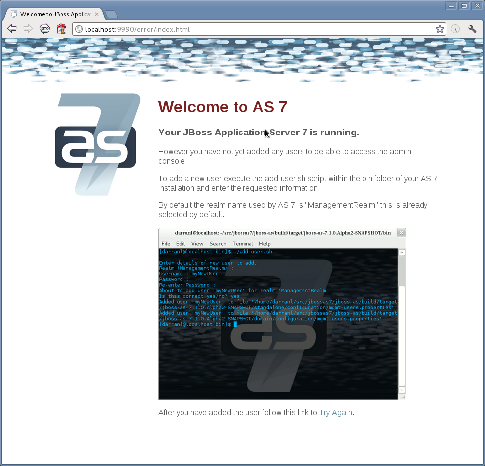
The user are stored in a properties file called mgmt-users.properties under standalone/configuration and domain/configuration depending on the running mode of the server, these files contain the users username along with a pre-prepared hash of the username along with the name of the realm and the users password.
Although the properties files do not contain the plain text passwords they should still be guarded as the pre-prepared hashes could be used to gain access to any server with the same realm if the same user has used the same password.
To manipulate the files and add users we provide a utility add-user.sh and add-user.bat to add the users and generate the hashes, to add a user you should execute the script and follow the guided process. 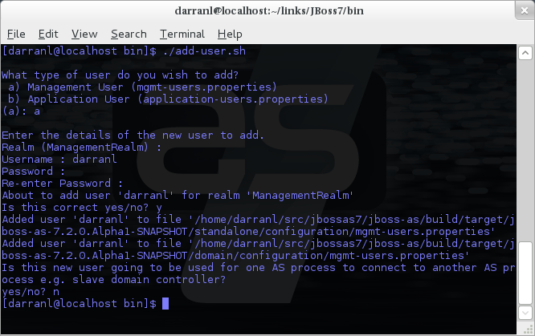
The full details of the add-user utility are described later but for the purpose of accessing the management interface you need to enter the following values: -
-
Type of user - This will be a 'Management User' to selection option a.
-
Realm - This MUST match the realm name used in the configuration so unless you have changed the configuration to use a different realm name leave this set as 'ManagementRealm'.
-
Username - The username of the user you are adding.
-
Password - The users password.
Provided the validation passes you will then be asked to confirm you want to add the user and the properties files will be updated.
For the final question, as this is a user that is going to be accessing the admin console just answer 'n' - this option will be described later for adding slave host controllers that authenticate against a master domain controller but that is a later topic.
Updates to the properties file are picked up in real time so either click 'Try Again' on the error page that was displayed in the browser or navigate to the console again and you should then be prompted to enter the username and password to connect to the server.
Command Line Interface
The Command Line Interface (CLI) is a management tool for a managed domain or standalone server. It allows a user to connect to the domain controller or a standalone server and execute management operations available through the de-typed management model.
Native Management Endpoint
The native API endpoint is the entry point for management clients that rely on the AS's native protocol to integrate with the management layer. It uses an open binary protocol and an RPC style API based on a very small number of Java types to describe and execute management operations against a managed domain or standalone server. It's used by the CLI management tool, but offers integration capabilities for a wide range of other clients too.
The native API endpoint is co-located with either the a host controller or a standalone server. To use the CLI it must be enabled. By default, it runs on port 9999:
<management-interfaces> <native-interface security-realm="ManagementRealm"> <socket-binding native="management-native"/> </native-interface> </native-interf [...] <management-interfaces>
(See standalone/configuration/standalone.xml or domain/configuration/host.xml)
Running the CLI
Depending on the operating system, the CLI is launched using jboss-cli.sh or jboss-cli.bat located in the WildFly 8 bin directory. For further information on the default directory structure, please consult the "Getting Started Guide".
The first thing to do after the CLI has started is to connect to a managed WildFly 8 instance. This is done using the command connect, e.g.
./bin/jboss-cli.sh You are disconnected at the moment. Type 'connect' to connect to the server or 'help' for the list of supported commands. [disconnected /] [disconnected /] connect [domain@localhost:9999 /] [domain@localhost:9999 /] quit Closed connection to localhost:9999
localhost:9999 is the default host and port combination for the WildFly 9 domain controller client.
The host and the port of the server can be provided as an optional parameter, if the server is not listening on localhost:9999.
./bin/jboss-cli.sh You are disconnected at the moment. Type 'connect' to connect to the server [disconnected /] connect 192.168.0.10:9999 Connected to standalone controller at 192.168.0.1:9999
The :9999 is not required as the CLI will use port 9999 by default. The port needs to be provided if the server is listening on some other port.
To terminate the session type quit.
The jboss-cli script accepts a --connect parameter: ./jboss-cli.sh --connect
The --controller parameter can be used to specify the host and port of the server: ./jboss-cli.sh --connect --controller=192.168.0.1:9999
Help is also available:
[domain@localhost:9999 /] help Supported commands: cn (or cd) - change the current node path to the argument; connect - connect to the specified host and port; deploy - deploy an application; help (or h) - print this message; history - print or disable/enable/clear the history expansion. ls - list the contents of the node path; pwn (or pwd) - prints the current working node; quit (or q) - quit the command line interface; undeploy - undeploy an application; version - prints the version and environment information. add-jms-queue - creates a new JMS queue remove-jms-queue - removes an existing JMS queue add-jms-topic - creates a new JMS topic remove-jms-topic - removes an existing JMS topic add-jms-cf - creates a new JMS connection factory remove-jms-cf - removes an existing JMS connection factory data-source - allows to add new, modify and remove existing data sources xa-data-source - allows to add new, modify and remove existing XA data sources For a more detailed description of a specific command, execute the command with '--help' as the argument.
interactive Mode
The CLI can also be run in non-interactive mode to support scripts and other types of command line or batch processing. The --command and --commands arguments can be used to pass a command or a list of commands to execute. Additionally a --file argument is supported which enables CLI commands to be provided from a text file.
For example the following command can be used to list all the current deployments
$ ./bin/jboss-cli.sh --connect --commands=ls\ deployment sample.war osgi-bundle.jar
The output can be combined with other shell commands for further processing, for example to find out what .war files are deployed:
$ ./bin/jboss-cli.sh --connect --commands=ls\ deployment | grep war sample.war
Operation Requests
Operation requests allow for low level interaction with the management model. They are different from the high level commands (i.e. create-jms-queue) in that they allow you to read and modify the server configuration as if you were editing the XML configuration files directly. The configuration is represented as a tree of addressable resources, where each node in the tree (aka resource) offers a set of operations to execute.
An operation request basically consists of three parts: The address, an operation name and an optional set of parameters.
The formal specification for an operation request is:
[/node-type=node-name (/node-type=node-name)*] : operation-name [( [parameter-name=parameter-value (,parameter-name=parameter-value)*] )]
For example:
/profile=production/subsystem=threads/bounded-queue-thread-pool=pool1:write-core-threads (count=0, per-cpu=20)
Tab Completion
Tab-completion is supported for all commands and options, i.e. node-types and node-names, operation names and parameter names. We are also considering adding aliases that are less verbose for the user, and will translate into the corresponding operation requests in the background.
Whitespaces between the separators in the operation request strings are not significant.
Addressing resources
Operation requests might not always have the address part or the parameters. E.g.
:read-resource
which will list all the node types for the current node.
To syntactically disambiguate between the commands and operations, operations require one of the following prefixes:
To execute an operation against the current node, e.g.
cd subsystem=web :read-resource(recursive="true")
To execute an operation against a child node of the current node, e.g.
cd subsystem=web ./connector=http:read-resource
To execute an operation against the root node, e.g.
/subsystem=threads:read-resource
Available Operation Types and Descriptions
The operation types can be distinguished between common operations that exist on any node and specific operations that belong to a particular configuration resource (i.e. subsystem). The common operations are:
-
add
-
read-attribute
-
read-children-names
-
read-children-resources
-
read-children-types
-
read-operation-description
-
read-operation-names
-
read-resource
-
read-resource-description
-
remove
-
validate-address
-
write-attribute
For a list of specific operations (e.g. operations that relate to the logging subsystem) you can always query the model itself. For example, to read the operations supported by the logging subsystem resource on a standalone server:
[[standalone@localhost:9999 /] /subsystem=logging:read-operation-names
{
"outcome" => "success",
"result" => [
"add",
"change-root-log-level",
"read-attribute",
"read-children-names",
"read-children-resources",
"read-children-types",
"read-operation-description",
"read-operation-names",
"read-resource",
"read-resource-description",
"remove-root-logger",
"root-logger-assign-handler",
"root-logger-unassign-handler",
"set-root-logger",
"validate-address",
"write-attribute"
]
}
As you can see, the logging resource offers four additional operations, namely root-logger-assign-handler, root-logger-unassign-handler , set-root-logger and remove-root-logger.
Further documentation about a resource or operation can be retrieved through the description:
[standalone@localhost:9999 /] /subsystem=logging:read-operation-description(name=change-root-log-level)
{
"outcome" => "success",
"result" => {
"operation-name" => "change-root-log-level",
"description" => "Change the root logger level.",
"request-properties" => {"level" => {
"type" => STRING,
"description" => "The log level specifying which message levels will be logged by this logger.
Message levels lower than this value will be discarded.",
"required" => true
}}
}
}
Full model
To see the full model enter :read-resource(recursive=true).
Command History
Command (and operation request) history is enabled by default. The history is kept both in-memory and in a file on the disk, i.e. it is preserved between the command line sessions. The history file name is .jboss-cli-history and is automatically created in the user's home directory. When the command line interface is launched this file is read and the in-memory history is initialized with its content.
While in the command line session, you can use the arrow keys to go back and forth in the history of commands and operations.
To manipulate the history you can use history command. If executed without any arguments, it will print all the recorded commands and operations (up to the configured maximum, which defaults to 500) from the in-memory history.
history supports three optional arguments:
-
disable - will disable history expansion (but will not clear the previously recorded history);
-
enabled - will re-enable history expansion (starting from the last recorded command before the history expansion was disabled);
-
clear - will clear the in-memory history (but not the file one).
Batch Processing
The batch mode allows one to group commands and operations and execute them together as an atomic unit. If at least one of the commands or operations fails, all the other successfully executed commands and operations in the batch are rolled back.
Not all of the commands are allowed in the batch. For example, commands like cd, ls, help, etc. are not allowed in the batch since they don't translate into operation requests. Only the commands that translate into operation requests are allowed in the batch. The batch, actually, is executed as a composite operation request.
The batch mode is entered by executing command batch.
[standalone@localhost:9999 /] batch [standalone@localhost:9999 / #] /subsystem=datasources/data-source="java\:\/H2DS":enable [standalone@localhost:9999 / #] /subsystem=messaging/jms-queue="newQueue":add
You can execute a batch using the run-batch command:
[standalone@localhost:9999 / #] run-batch The batch executed successfully.
Exit the batch edit mode without losing your changes:
[standalone@localhost:9999 / #] holdback-batch [standalone@localhost:9999 /]
Then activate it later on again:
[standalone@localhost:9999 /] batch Re-activated batch #1 /subsystem=datasources/data-source=java:/H2DS:\/H2DS:enable
There are several other notable batch commands available as well (tab complete to see the list):
-
clear-batch
-
edit-batch-line (e.g. edit-batch line 3 create-jms-topic name=mytopic)
-
remove-batch-line (e.g. remove-batch-line 3)
-
move-batch-line (e.g. move-batch-line 3 1)
-
discard-batch
Default Native Management Interface Security
The native interface shares the same security configuration as the http interface, however we also support a local authentication mechanism which means that the CLI can authenticate against the local WildFly instance without prompting the user for a username and password. This mechanism only works if the user running the CLI has read access to the standalone/tmp/auth folder or domain/tmp/auth folder under the respective WildFly installation - if the local mechanism fails then the CLI will fallback to prompting for a username and password for a user configured as in Default HTTP Interface Security.
Establishing a CLI connection to a remote server will require a username and password by default.
Configuration Files
The XML configuration for a management domain and a standalone server can be found in the configuration subdirectory:
-
domain/configuration/domain.xml
-
domain/configuration/host.xml
-
standalone/configuration/standalone.xml
A managed domain actually ships with two different configuration types: One for the domain as a whole (domain.xml) and and another for each host that joins the domain (host.xml). A detailed explanation how to setup a domain topology can be found in the chapter "Domain Setup".
The XML configuration files act as a central, authoritative source of configuration. Any configuration changes made via the web interface or the CLI are persisted back to the XML configuration files. If a domain or standalone server is offline, the XML configuration files can be hand edited as well, and any changes will be picked up when the domain or standalone server is next started. However, users are encouraged to use the web interface or the CLI in preference to making offline edits to the configuration files. External changes made to the configuration files while processes are running will not be detected, and may be overwritten.
Core management concepts
Operating modes
WildFly 8 can be booted in two different modes. A managed domain allows you to run and manage a multi-server topology. Alternatively, you can run a standalone server instance.
Standalone Server
For many use cases, the centralized management capability available via a managed domain is not necessary. For these use cases, a WildFly 8 instance can be run as a "standalone server". A standalone server instance is an independent process, much like an JBoss Application Server 3, 4, 5, or 6 instance is. Standalone instances can be launched via the standalone.sh or standalone.bat launch scripts.
If more than one standalone instance is launched and multi-server management is desired, it is the user's responsibility to coordinate management across the servers. For example, to deploy an application across all of the standalone servers, the user would need to individually deploy the application on each server.
It is perfectly possible to launch multiple standalone server instances and have them form an HA cluster, just like it was possible with JBoss Application Server 3, 4, 5 and 6.
Managed Domain
One of the primary new features of WildFly 8 is the ability to manage multiple WildFly instances from a single control point. A collection of such servers is referred to as the members of a "domain" with a single Domain Controller process acting as the central management control point. All of the WildFly 8 instances in the domain share a common management policy, with the Domain Controller acting to ensure that each server is configured according to that policy. Domains can span multiple physical (or virtual) machines, with all WildFly 8 instances on a given host under the control of a special Host Controller process. One Host Controller instance is configured to act as the central Domain Controller. The Host Controller on each host interacts with the Domain Controller to control the lifecycle of the application server instances running on its host and to assist the Domain Controller in managing them.
When you launch a WildFly 8 managed domain on a host (via the domain.sh or domain.bat launch scripts) your intent is to launch a Host Controller and usually at least one WildFly instance. On one of the hosts the Host Controller should be configured to act as the Domain Controller. See [WLFY8:Domain Setup] for details.
The following is an example managed domain topology:

Host
Each "Host" box in the above diagram represents a physical or virtual host. A physical host can contain zero, one or more server instances.
Host Controller
When the domain.sh or domain.bat script is run on a host, a process known as a Host Controller is launched. The Host Controller is solely concerned with server management; it does not itself handle application server workloads. The Host Controller is responsible for starting and stopping the individual application server processes that run on its host, and interacts with the Domain Controller to help manage them.
Each Host Controller by default reads its configuration from the domain/configuration/host.xml file located in the unzipped WildFly 8 installation on its host's filesystem. The host.xml file contains configuration information that is specific to the particular host. Primarily:
-
the listing of the names of the actual WildFly 8 instances that are meant to run off of this installation.
-
configuration of how the Host Controller is to contact the Domain Controller to register itself and access the domain configuration. This may either be configuration of how to find and contact a remote Domain Controller, or a configuration telling the Host Controller to itself act as the Domain Controller.
-
configuration of items that are specific to the local physical installation. For example, named interface definitions declared in domain.xml (see below) can be mapped to an actual machine-specific IP address in host.xml. Abstract path names in domain.xml can be mapped to actual filesystem paths in host.xml.
Domain Controller
One Host Controller instance is configured to act as the central management point for the entire domain, i.e. to be the Domain Controller. The primary responsibility of the Domain Controller is to maintain the domain's central management policy, to ensure all Host Controllers are aware of its current contents, and to assist the Host Controllers in ensuring any running application server instances are configured in accordance with this policy. This central management policy is stored by default in the domain/configuration/domain.xml file in the unzipped WildFly 8 installation on Domain Controller's host's filesystem.
A domain.xml file must be located in the domain/configuration directory of an installation that's meant to run the Domain Controller. It does not need to be present in installations that are not meant to run a Domain Controller; i.e. those whose Host Controller is configured to contact a remote Domain Controller. The presence of a domain.xml file on such a server does no harm.
The domain.xml file includes, among other things, the configuration of the various "profiles" that WildFly 8 instances in the domain can be configured to run. A profile configuration includes the detailed configuration of the various subsystems that comprise that profile (e.g. an embedded JBoss Web instance is a subsystem; a JBoss TS transaction manager is a subsystem, etc). The domain configuration also includes the definition of groups of sockets that those subsystems may open. The domain configuration also includes the definition of "server groups":
Server Group
A server group is set of server instances that will be managed and configured as one. In a managed domain each application server instance is a member of a server group. (Even if the group only has a single server, the server is still a member of a group.) It is the responsibility of the Domain Controller and the Host Controllers to ensure that all servers in a server group have a consistent configuration. They should all be configured with the same profile and they should have the same deployment content deployed.
The domain can have multiple server groups. The above diagram shows two server groups, "ServerGroupA" and "ServerGroupB". Different server groups can be configured with different profiles and deployments; for example in a domain with different tiers of servers providing different services. Different server groups can also run the same profile and have the same deployments; for example to support rolling application upgrade scenarios where a complete service outage is avoided by first upgrading the application on one server group and then upgrading a second server group.
An example server group definition is as follows:
<server-group name="main-server-group" profile="default"> <socket-binding-group ref="standard-sockets"/> <deployments> <deployment name="foo.war_v1" runtime-name="foo.war" /> <deployment name="bar.ear" runtime-name="bar.ear" /> </deployments> </server-group>
A server-group configuration includes the following required attributes:
-
name -- the name of the server group
-
profile -- the name of the profile the servers in the group should run
In addition, the following optional elements are available:
-
socket-binding-group -- specifies the name of the default socket binding group to use on servers in the group. Can be overridden on a per-server basis in host.xml. If not provided in the server-group element, it must be provided for each server in host.xml.
-
deployments -- the deployment content that should be deployed on the servers in the group.
-
system-properties -- system properties that should be set on all servers in the group
-
jvm -- default jvm settings for all servers in the group. The Host Controller will merge these settings with any provided in host.xml to derive the settings to use to launch the server's JVM. See JVM settings for further details.
Server
Each "Server" in the above diagram represents an actual application server instance. The server runs in a separate JVM process from the Host Controller. The Host Controller is responsible for launching that process. (In a managed domain the end user cannot directly launch a server process from the command line.)
The Host Controller synthesizes the server's configuration by combining elements from the domain wide configuration (from domain.xml ) and the host-specific configuration (from host.xml ).
Deciding between running standalone servers or a managed domain
Which use cases are appropriate for managed domain and which are appropriate for standalone servers? A managed domain is all about coordinated multi-server management -- with it WildFly 8 provides a central point through which users can manage multiple servers, with rich capabilities to keep those servers' configurations consistent and the ability to roll out configuration changes (including deployments) to the servers in a coordinated fashion.
It's important to understand that the choice between a managed domain and standalone servers is all about how your servers are managed, not what capabilities they have to service end user requests. This distinction is particularly important when it comes to high availability clusters. It's important to understand that HA functionality is orthogonal to running standalone servers or a managed domain. That is, a group of standalone servers can be configured to form an HA cluster. The domain and standalone modes determine how the servers are managed, not what capabilities they provide.
So, given all that:
-
A single server installation gains nothing from running in a managed domain, so running a standalone server is a better choice.
-
For multi-server production environments, the choice of running a managed domain versus standalone servers comes down to whether the user wants to use the centralized management capabilities a managed domain provides. Some enterprises have developed their own sophisticated multi-server management capabilities and are comfortable coordinating changes across a number of independent WildFly 8 instances. For these enterprises, a multi-server architecture comprised of individual standalone servers is a good option.
-
Running a standalone server is better suited for most development scenarios. Any individual server configuration that can be achieved in a managed domain can also be achieved in a standalone server, so even if the application being developed will eventually run in production on a managed domain installation, much (probably most) development can be done using a standalone server.
-
Running a managed domain mode can be helpful in some advanced development scenarios; i.e. those involving interaction between multiple WildFly 8 instances. Developers may find that setting up various servers as members of a domain is an efficient way to launch a multi-server cluster.
General configuration concepts
For both a managed domain or a standalone server, a number of common configuration concepts apply:
Extensions
An extension is a module that extends the core capabilities of the server. The WildFly 8 core is very simple and lightweight; most of the capabilities people associate with an application server are provided via extensions. An extension is packaged as a module in the modules folder. The user indicates that they want a particular extension to be available by including an <extension/> element naming its module in the domain.xml or standalone.xml file.
<extensions> [...] <extension module="org.jboss.as.transactions"/> <extension module="org.jboss.as.web" /> <extension module="org.jboss.as.webservices" /> <extension module="org.jboss.as.weld" /> </extensions>
Profiles and Subsystems
The most significant part of the configuration in domain.xml and standalone.xml is the configuration of one (in standalone.xml) or more (in domain.xml) "profiles". A profile is a named set of subsystem configurations. A subsystem is an added set of capabilities added to the core server by an extension (see "Extensions" above). A subsystem provides servlet handling capabilities; a subsystem provides an EJB container; a subsystem provides JTA, etc. A profile is a named list of subsystems, along with the details of each subsystem's configuration. A profile with a large number of subsystems results in a server with a large set of capabilities. A profile with a small, focused set of subsystems will have fewer capabilities but a smaller footprint.
The content of an individual profile configuration looks largely the same in domain.xml and standalone.xml. The only difference is standalone.xml is only allowed to have a single profile element (the profile the server will run), while domain.xml can have many profiles, each of which can be mapped to one or more groups of servers.
The contents of individual subsystem configurations look exactly the same between domain.xml and standalone.xml.
Paths
A logical name for a filesystem path. The domain.xml, host.xml and standalone.xml configurations all include a section where paths can be declared. Other sections of the configuration can then reference those paths by their logical name, rather than having to include the full details of the path (which may vary on different machines). For example, the logging subsystem configuration includes a reference to the "jboss.server.log.dir" path that points to the server's "log" directory.
<file relative-to="jboss.server.log.dir" path="server.log"/>
WildFly 8 automatically provides a number of standard paths without any need for the user to configure them in a configuration file:
-
jboss.home - the root directory of the WildFly distribution
-
user.home - user's home directory
-
user.dir - user's current working directory
-
java.home - java installation directory
-
jboss.server.base.dir - root directory for an individual server instance
-
jboss.server.data.dir - directory the server will use for persistent data file storage
-
jboss.server.log.dir - directory the server will use for log file storage
-
jboss.server.tmp.dir - directory the server will use for temporary file storage
-
jboss.domain.servers.dir - directory under which a host controller will create the working area for individual server instances (managed domain mode only)
Users can add their own paths or override all except the first 5 of the above by adding a <path/> element to their configuration file.
<path name="example" path="example" relative-to="jboss.server.data.dir"/>
The attributes are:
-
name -- the name of the path.
-
path -- the actual filesystem path. Treated as an absolute path, unless the 'relative-to' attribute is specified, in which case the value is treated as relative to that path.
-
relative-to -- (optional) the name of another previously named path, or of one of the standard paths provided by the system.
A <path/> element in a domain.xml need not include anything more than the name attribute; i.e. it need not include any information indicating what the actual filesystem path is:
<path name="x"/>
Such a configuration simply says, "There is a path named 'x' that other parts of the domain.xml configuration can reference. The actual filesystem location pointed to by 'x' is host-specific and will be specified in each machine's host.xml file." If this approach is used, there must be a path element in each machine's host.xml that specifies what the actual filesystem path is:
<path name="x" path="/var/x" />
A <path/> element in a standalone.xml must include the specification of the actual filesystem path.
Interfaces
A logical name for a network interface/IP address/host name to which sockets can be bound. The domain.xml, host.xml and standalone.xml configurations all include a section where interfaces can be declared. Other sections of the configuration can then reference those interfaces by their logical name, rather than having to include the full details of the interface (which may vary on different machines). An interface configuration includes the logical name of the interface as well as information specifying the criteria to use for resolving the actual physical address to use. See Interfaces and ports for further details.
An <interface/> element in a domain.xml need not include anything more than the name attribute; i.e. it need not include any information indicating what the actual IP address associated with the name is:
<interface name="internal"/>
Such a configuration simply says, "There is an interface named 'internal' that other parts of the domain.xml configuration can reference. The actual IP address pointed to by 'internal' is host-specific and will be specified in each machine's host.xml file." If this approach is used, there must be an interface element in each machine's host.xml that specifies the criteria for determining the IP address:
<interface name="internal"> <nic name="eth1"/> </interface>
An <interface/> element in a standalone.xml must include the criteria for determining the IP address.
Socket Bindings and Socket Binding Groups
A socket binding is a named configuration for a socket.
The domain.xml and standalone.xml configurations both include a section where named socket configurations can be declared. Other sections of the configuration can then reference those sockets by their logical name, rather than having to include the full details of the socket configuration (which may vary on different machines). See Interfaces and ports for full details.
System Properties
System property values can be set in a number of places in domain.xml, host.xml and standalone.xml. The values in standalone.xml are set as part of the server boot process. Values in domain.xml and host.xml are applied to servers when they are launched.
When a system property is configured in domain.xml or host.xml, the servers it ends up being applied to depends on where it is set. Setting a system property in a child element directly under the domain.xml root results in the property being set on all servers. Setting it in a <system-property/> element inside a <server-group/> element in domain.xml results in the property being set on all servers in the group. Setting it in a child element directly under the host.xml root results in the property being set on all servers controlled by that host's Host Controller. Finally, setting it in a <system-property/> element inside a <server/> element in host.xml result in the property being set on that server. The same property can be configured in multiple locations, with a value in a <server/> element taking precedence over a value specified directly under the host.xml root element, the value in a host.xml taking precedence over anything from domain.xml, and a value in a <server-group/> element taking precedence over a value specified directly under the domain.xml root element.
Management resources
When WildFly parses your configuration files at boot, or when you use one of the AS's Management Clients you are adding, removing or modifying management resources in the AS's internal management model. A WildFly management resource has the following characteristics:
Address
All WildFly management resources are organized in a tree. The path to the node in the tree for a particular resource is its address. Each segment in a resource's address is a key/value pair:
-
The key is the resource's type, in the context of its parent. So, for example, the root resource for a standalone server has children of type subsystem, interface, socket-binding, etc. The resource for the subsystem that provides the AS's webserver capability has children of type connector and virtual-server. The resource for the subsystem that provides the AS's messaging server capability has, among others, children of type jms-queue and jms-topic.
-
The value is the name of a particular resource of the given type, e.g web or messaging for subsystems or http or https for web subsystem connectors.
The full address for a resource is the ordered list of key/value pairs that lead from the root of the tree to the resource. Typical notation is to separate the elements in the address with a '/' and to separate the key and the value with an '=':
-
/subsystem=web/connector=http
-
/subsystem=messaging/jms-queue=testQueue
-
/interface=public
When using the HTTP API, a '/' is used to separate the key and the value instead of an '=':
-
http://localhost:9990/management/subsystem/web/connector/http
-
http://localhost:9990/management/subsystem/messaging/jms-queue/testQueue
-
http://localhost:9990/management/interface/public
Operations
Querying or modifying the state of a resource is done via an operation. An operation has the following characteristics:
-
A string name
-
Zero or more named parameters. Each parameter has a string name, and a value of type org.jboss.dmr.ModelNode (or, when invoked via the CLI, the text representation of a ModelNode; when invoked via the HTTP API, the JSON representation of a ModelNode.) Parameters may be optional.
-
A return value, which will be of type org.jboss.dmr.ModelNode (or, when invoked via the CLI, the text representation of a ModelNode; when invoked via the HTTP API, the JSON representation of a ModelNode.)
Every resource except the root resource will have an add operation and should have a remove operation ("should" because in WildFly 8 many do not). The parameters for the add operation vary depending on the resource. The remove operation has no parameters.
There are also a number of "global" operations that apply to all resources. See Global operations for full details.
The operations a resource supports can themselves be determined by invoking an operation: the read-operation-names operation. Once the name of an operation is known, details about its parameters and return value can be determined by invoking the read-operation-description operation. For example, to learn the names of the operations exposed by the root resource for a standalone server, and then learn the full details of one of them, via the CLI one would:
[standalone@localhost:9999 /] :read-operation-names
{
"outcome" => "success",
"result" => [
"add-namespace",
"add-schema-location",
"delete-snapshot",
"full-replace-deployment",
"list-snapshots",
"read-attribute",
"read-children-names",
"read-children-resources",
"read-children-types",
"read-config-as-xml",
"read-operation-description",
"read-operation-names",
"read-resource",
"read-resource-description",
"reload",
"remove-namespace",
"remove-schema-location",
"replace-deployment",
"shutdown",
"take-snapshot",
"upload-deployment-bytes",
"upload-deployment-stream",
"upload-deployment-url",
"validate-address",
"write-attribute"
]
}
[standalone@localhost:9999 /] :read-operation-description(name=upload-deployment-url)
{
"outcome" => "success",
"result" => {
"operation-name" => "upload-deployment-url",
"description" => "Indicates that the deployment content available at the included URL should be added to the deployment content repository. Note that this operation does not indicate the content should be deployed into the runtime.",
"request-properties" => {"url" => {
"type" => STRING,
"description" => "The URL at which the deployment content is available for upload to the domain's or standalone server's deployment content repository.. Note that the URL must be accessible from the target of the operation (i.e. the Domain Controller or standalone server).",
"required" => true,
"min-length" => 1,
"nillable" => false
}},
"reply-properties" => {
"type" => BYTES,
"description" => "The hash of managed deployment content that has been uploaded to the domain's or standalone server's deployment content repository.",
"min-length" => 20,
"max-length" => 20,
"nillable" => false
}
}
}
See Descriptions below for more on how to learn about the operations a resource exposes.
Attributes
Management resources expose information about their state as attributes. Attributes have string name, and a value of type org.jboss.dmr.ModelNode (or: for the CLI, the text representation of a ModelNode; for HTTP API, the JSON representation of a ModelNode.)
Attributes can either be read-only or read-write. Reading and writing attribute values is done via the global read-attribute and write-attribute operations.
The read-attribute operation takes a single parameter "name" whose value is a the name of the attribute. For example, to read the "port" attribute of a socket-binding resource via the CLI:
[standalone@localhost:9999 /] /socket-binding-group=standard-sockets/socket-binding=https:read-attribute(name=port)
{
"outcome" => "success",
"result" => 8443
}
If an attribute is writable, the write-attribute operation is used to mutate its state. The operation takes two parameters:
-
name – the name of the attribute
-
value – the value of the attribute
For example, to read the "port" attribute of a socket-binding resource via the CLI:
[standalone@localhost:9999 /] /socket-binding-group=standard-sockets/socket-binding=https:write-attribute(name=port,value=8444)
{"outcome" => "success"}
Attributes can have one of two possible storage types:
-
CONFIGURATION – means the value of the attribute is stored in the persistent configuration; i.e. in the domain.xml, host.xml or standalone.xml file from which the resource's configuration was read.
-
RUNTIME – the attribute value is only available from a running server; the value is not stored in the persistent configuration. A metric (e.g. number of requests serviced) is a typical example of a RUNTIME attribute.
The values of all of the attributes a resource exposes can be obtained via the read-resource operation, with the "include-runtime" parameter set to "true". For example, from the CLI:
[standalone@localhost:9999 /] /subsystem=web/connector=http:read-resource(include-runtime=true)
{
"outcome" => "success",
"result" => {
"bytesReceived" => "0",
"bytesSent" => "0",
"errorCount" => "0",
"maxTime" => "0",
"processingTime" => "0",
"protocol" => "HTTP/1.1",
"requestCount" => "0",
"scheme" => "http",
"socket-binding" => "http",
"ssl" => undefined,
"virtual-server" => undefined
}
}
Omit the "include-runtime" parameter (or set it to "false") to limit output to those attributes whose values are stored in the persistent configuration:
[standalone@localhost:9999 /] /subsystem=web/connector=http:read-resource
{
"outcome" => "success",
"result" => {
"protocol" => "HTTP/1.1",
"scheme" => "http",
"socket-binding" => "http",
"ssl" => undefined,
"virtual-server" => undefined
}
}
See Descriptions below for how to learn more about the attributes a particular resource exposes.
Children
Management resources may support child resources. The types of children a resource supports (e.g. connector for the web subsystem resource) can be obtained by querying the resource's description (see Descriptions below) or by invoking the read-children-types operation. Once you know the legal child types, you can query the names of all children of a given type by using the global read-children-types operation. The operation takes a single parameter "child-type" whose value is the type. For example, a resource representing a socket binding group has children. To find the type of those children and the names of resources of that type via the CLI one could:
[standalone@localhost:9999 /] /socket-binding-group=standard-sockets:read-children-types
{
"outcome" => "success",
"result" => ["socket-binding"]
}
[standalone@localhost:9999 /] /socket-binding-group=standard-sockets:read-children-names(child-type=socket-binding)
{
"outcome" => "success",
"result" => [
"http",
"https",
"jmx-connector-registry",
"jmx-connector-server",
"jndi",
"osgi-http",
"remoting",
"txn-recovery-environment",
"txn-status-manager"
]
}
Descriptions
All resources expose metadata that describes their attributes, operations and child types. This metadata is itself obtained by invoking one or more of the global operations each resource supports. We showed examples of the read-operation-names, read-operation-description, read-children-types and read-children-names operations above.
The read-resource-description operation can be used to find the details of the attributes and child types associated with a resource. For example, using the CLI:
[standalone@localhost:9999 /] /socket-binding-group=standard-sockets:read-resource-description
{
"outcome" => "success",
"result" => {
"description" => "Contains a list of socket configurations.",
"head-comment-allowed" => true,
"tail-comment-allowed" => false,
"attributes" => {
"name" => {
"type" => STRING,
"description" => "The name of the socket binding group.",
"required" => true,
"head-comment-allowed" => false,
"tail-comment-allowed" => false,
"access-type" => "read-only",
"storage" => "configuration"
},
"default-interface" => {
"type" => STRING,
"description" => "Name of an interface that should be used as the interface for any sockets that do not explicitly declare one.",
"required" => true,
"head-comment-allowed" => false,
"tail-comment-allowed" => false,
"access-type" => "read-write",
"storage" => "configuration"
},
"port-offset" => {
"type" => INT,
"description" => "Increment to apply to the base port values defined in the socket bindings to derive the runtime values to use on this server.",
"required" => false,
"head-comment-allowed" => true,
"tail-comment-allowed" => false,
"access-type" => "read-write",
"storage" => "configuration"
}
},
"operations" => {},
"children" => {"socket-binding" => {
"description" => "The individual socket configurtions.",
"min-occurs" => 0,
"model-description" => undefined
}}
}
}
Note the "operations" => }} in the output above. If the command had included the {{operations parameter (i.e. /socket-binding-group=standard-sockets:read-resource-description(operations=true)) the output would have included the description of each operation supported by the resource.
See the Global operations section for details on other parameters supported by the read-resource-description operation and all the other globally available operations.
Comparison to JMX MBeans
WildFly management resources are conceptually quite similar to Open MBeans. They have the following primary differences:
-
WildFly management resources are organized in a tree structure. The order of the key value pairs in a resource's address is significant, as it defines the resource's position in the tree. The order of the key properties in a JMX ObjectName is not significant.
-
In an Open MBean attribute values, operation parameter values and operation return values must either be one of the simple JDK types (String, Boolean, Integer, etc) or implement either the javax.management.openmbean.CompositeData interface or the javax.management.openmbean.TabularData interface. WildFly management resource attribute values, operation parameter values and operation return values are all of type org.jboss.dmr.ModelNode.
Basic structure of the management resource trees
As noted above, management resources are organized in a tree structure. The structure of the tree depends on whether you are running a standalone server or a managed domain.
Standalone server
The structure of the managed resource tree is quite close to the structure of the standalone.xml configuration file.
-
The root resource
-
extension – extensions installed in the server
-
path – paths available on the server
-
system-property – system properties set as part of the configuration (i.e. not on the command line)
-
core-service=management – the server's core management services
-
core-service=service-container – resource for the JBoss MSC ServiceContainer that's at the heart of the AS
-
subsystem – the subsystems installed on the server. The bulk of the management model will be children of type subsystem
-
interface – interface configurations
-
socket-binding-group – the central resource for the server's socket bindings
-
socket-binding – individual socket binding configurations
-
-
deployment – available deployments on the server
-
Managed domain
In a managed domain, the structure of the managed resource tree spans the entire domain, covering both the domain wide configuration (e.g. what's in domain.xml, the host specific configuration for each host (e.g. what's in host.xml, and the resources exposed by each running application server. The Host Controller processes in a managed domain provide access to all or part of the overall resource tree. How much is available depends on whether the management client is interacting with the Host Controller that is acting as the master Domain Controller. If the Host Controller is the master Domain Controller, then the section of the tree for each host is available. If the Host Controller is a slave to a remote Domain Controller, then only the portion of the tree associated with that host is available.
-
The root resource for the entire domain. The persistent configuration associated with this resource and its children, except for those of type host, is persisted in the domain.xml file on the Domain Controller.
-
extension – extensions available in the domain
-
path – paths available on across the domain
-
system-property – system properties set as part of the configuration (i.e. not on the command line) and available across the domain
-
profile – sets of subsystem configurations that can be assigned to server groups
-
subsystem – configuration of subsystems that are part of the profile
-
-
interface – interface configurations
-
socket-binding-group – sets of socket bindings configurations that can be applied to server groups
-
socket-binding – individual socket binding configurations
-
-
deployment – deployments available for assignment to server groups
-
server-group – server group configurations
-
host – the individual Host Controllers. Each child of this type represents the root resource for a particular host. The persistent configuration associated with one of these resources or its children is persisted in the host's host.xml file.
-
path – paths available on each server on the host
-
system-property – system properties to set on each server on the host
-
core-service=management – the Host Controller's core management services
-
interface – interface configurations that apply to the Host Controller or servers on the host
-
jvm – JVM configurations that can be applied when launching servers
-
server-config – configuration describing how the Host Controller should launch a server; what server group configuration to use, and any server-specific overrides of items specified in other resources
-
server – the root resource for a running server. Resources from here and below are not directly persisted; the domain-wide and host level resources contain the persistent configuration that drives a server
-
extension – extensions installed in the server
-
path – paths available on the server
-
system-property – system properties set as part of the configuration (i.e. not on the command line)
-
core-service=management – the server's core management services
-
core-service=service-container – resource for the JBoss MSC ServiceContainer that's at the heart of the AS
-
subsystem – the subsystems installed on the server. The bulk of the management model will be children of type subsystem
-
interface – interface configurations
-
socket-binding-group – the central resource for the server's socket bindings
-
socket-binding – individual socket binding configurations
-
-
deployment – available deployments on the server
-
-
-
Configuring interfaces and ports
Interface declarations
WildFly uses named interface references throughout the configuration. A network interface is declared by specifying a logical name and a selection criteria for the physical interface:
[standalone@localhost:9999 /] :read-children-names(child-type=interface)
{
"outcome" => "success",
"result" => [
"management",
"public"
]
}
This means the server in question declares two interfaces: One is referred to as "management"; the other one "public". The "management" interface is used for all components and services that are required by the management layer (i.e. the HTTP Management Endpoint). The "public" interface binding is used for any application related network communication (i.e. Web, Messaging, etc). There is nothing special about these names; interfaces can be declared with any name. Other sections of the configuration can then reference those interfaces by their logical name, rather than having to include the full details of the interface (which, on servers in a management domain, may vary on different machines).
The domain.xml, host.xml and standalone.xml configuration files all include a section where interfaces can be declared. If we take a look at the XML declaration it reveals the selection criteria. The criteria is one of two types: either a single element indicating that the interface should be bound to a wildcard address, or a set of one or more characteristics that an interface or address must have in order to be a valid match. The selection criteria in this example are specific IP addresses for each interface:
<interfaces> <interface name="management"> <inet-address value="127.0.0.1"/> </interface> <interface name="public"> <inet-address value="127.0.0.1"/> </interface> </interfaces>
Some other examples:
<interface name="global">
<!-- Use the wildcard address -->
<any-address/>
</interface>
<interface name="external">
<nic name="eth0"/>
</interface>
<interface name="default">
<!-- Match any interface/address on the right subnet if it's
up, supports multicast and isn't point-to-point -->
<subnet-match value="192.168.0.0/16"/>
<up/>
<multicast/>
<not>
<point-to-point/>
</not>
</interface>
The -b command line argument
WildFly supports using the -b command line argument to specify the address to assign to interfaces. See Controlling the Bind Address with -b for further details.
Socket Binding Groups
The socket configuration in WildFly works similarly to the interfaces declarations. Sockets are declared using a logical name, by which they will be referenced throughout the configuration. Socket declarations are grouped under a certain name. This allows you to easily reference a particular socket binding group when configuring server groups in a managed domain. Socket binding groups reference an interface by its logical name:
<socket-binding-group name="standard-sockets" default-interface="public"> <socket-binding name="jndi" port="1099"/> <socket-binding name="jmx-connector-registry" port="1090"/> <socket-binding name="jmx-connector-server" port="1091"/> <socket-binding name="http" port="8080"/> <socket-binding name="https" port="8443"/> <socket-binding name="jacorb" port="3528"/> <socket-binding name="jacorb-ssl" port="3529"/> <socket-binding name="osgi-http" port="8090"/> <socket-binding name="remoting" port="4447"/> <socket-binding name="txn-recovery-environment" port="4712"/> <socket-binding name="txn-status-manager" port="4713"/> <socket-binding name="messaging" port="5445"/> <socket-binding name="messaging-throughput" port="5455"/> </socket-binding-group>
A socket binding includes the following information:
-
name -- logical name of the socket configuration that should be used elsewhere in the configuration
-
port -- base port to which a socket based on this configuration should be bound. (Note that servers can be configured to override this base value by applying an increment or decrement to all port values.)
-
interface (optional) -- logical name (see "Interfaces declarations" above) of the interface to which a socket based on this configuration should be bound. If not defined, the value of the "default-interface" attribute from the enclosing socket binding group will be used.
-
multicast-address (optional) -- if the socket will be used for multicast, the multicast address to use
-
multicast-port (optional) -- if the socket will be used for multicast, the multicast port to use
-
fixed-port (optional, defaults to false) -- if true, declares that the value of port should always be used for the socket and should not be overridden by applying an increment or decrement
IPv4 versus IPv6
WildFly supports the use of both IPv4 and IPv6 addresses. By default, WildFly is configured for use in an IPv4 network and so if you are running in an IPv4 network, no changes are required. If you need to run in an IPv6 network, the changes required are minimal and involve changing the JVM stack and address preferences, and adjusting any interface IP address values specified in the configuration (standalone.xml or domain.xml).
Stack and address preference
The system properties java.net.preferIPv4Stack and java.net.preferIPv6Addresses are used to configure the JVM for use with IPv4 or IPv6 addresses. With WildFly, in order to run using IPv4 addresses, you need to specify java.net.preferIPv4Stack=true; in order to run with IPv6 addresses, you need to specify java.net.preferIPv4Stack=false (the JVM default) and java.net.preferIPv6Addresses=true. The latter ensures that any hostname to IP address conversions always return IPv6 address variants.
These system properties are conveniently set by the JAVA_OPTS environment variable, defined in the standalone.conf (or domain.conf) file. For example, to change the IP stack preference from its default of IPv4 to IPv6, edit the standalone.conf (or domain.conf) file and change its default IPv4 setting:
if [ "x$JAVA_OPTS" = "x" ]; then JAVA_OPTS=" ... -Djava.net.preferIPv4Stack=true ..." ...
to an IPv6 suitable setting:
if [ "x$JAVA_OPTS" = "x" ]; then JAVA_OPTS=" ... -Djava.net.preferIPv4Stack=false -Djava.net.preferIPv6Addresses=true ..." ...
IP address literals
To change the IP address literals referenced in standalone.xml (or domain.xml), first visit the interface declarations and ensure that valid IPv6 addresses are being used as interface values. For example, to change the default configuration in which the loopback interface is used as the primary interface, change from the IPv4 loopback address:
<interfaces>
<interface name="management">
<inet-address value="${jboss.bind.address.management:127.0.0.1}"/>
</interface>
<interface name="public">
<inet-address value="${jboss.bind.address:127.0.0.1}"/>
</interface>
</interfaces>
to the IPv6 loopback address:
<interfaces>
<interface name="management">
<inet-address value="${jboss.bind.address.management:[::1]}"/>
</interface>
<interface name="public">
<inet-address value="${jboss.bind.address:[::1]}"/>
</interface>
</interfaces>
Note that when embedding IPv6 address literals in the substitution expression, square brackets surrounding the IP address literal are used to avoid ambiguity. This follows the convention for the use of IPv6 literals in URLs.
Over and above making such changes for the interface definitions, you should also check the rest of your configuration file and adjust IP address literals from IPv4 to IPv6 as required.
Administrative security
Security realms
Within WildFly 8 we make use of security realms to secure access to the management interfaces, these same realms are used to secure inbound access as exposed by JBoss Remoting such as remote JNDI and EJB access, the realms are also used to define an identity for the server - this identity can be used for both inbound connections to the server and outbound connections being established by the server.
General Structure
The general structure of a management realm definition is: -
<security-realm name="ManagementRealm"> <plug-ins></plug-ins> <server-identities></server-identities> <authentication></authentication> <authorization></authorization> </security-realm>
-
plug-ins - This is an optional element that is used to define modules what will be searched for security realm PlugInProviders to extend the capabilities of the security realms.
-
server-identities - An optional element to define the identity of the server as visible to the outside world, this applies to both inbound connection to a resource secured by the realm and to outbound connections also associated with the realm.
One example is the SSL identity of the server, for inbound connections this will control the identity of the server as the SSL connection is established, for outbound connections this same identity can be used where CLIENT-CERT style authentication is being performed.
A second example is where the server is establishing an outbound connection that requires username / password authentication - this element can be used to define that password.
-
authentication - This is probably the most important element that will be used within a security realm definition and mostly applies to inbound connections to the server, this element defines which backing stores will be used to provide the verification of the inbound connection.
This element is optional as there are some scenarios where it will not be required such as if a realm is being defined for an outbound connection using a username and password.
-
authorization - This is the final optional element and is used to define how roles are loaded for an authenticated identity. At the moment this is more applicable for realms used for access to EE deployments such as web applications or EJBs but this will also become relevant as we add role based authorization checks to the management model.
Using a Realm
After a realm has been defined it needs to be associated with an inbound or outbound connection for it to be used, the following are some examples where these associations are used within the WildFly 8 configuration.
Inbound Connections
Management Interfaces
Either within the standalone.xml or host.xml configurations the security realms can be associated with the management interfaces as follows: -
<native-interface security-realm="ManagementRealm">...</native-interface> <http-interface security-realm="ManagementRealm">...</http-interface>
If the security-realm attribute is omitted or removed from the interface definition it means that access to that interface will be unsecured
By default we do bind these interfaces to the loopback address so that the interfaces are not accessible remotely out of the box, however do be aware that if these interfaces are then unsecured any other local user will be able to control and administer the WildFly 8 installation.
Also do note that the security-realm attribute is defined on each interface independently, this means that you could define a different security realm for each - this may be applicable if say you want the administrators to only access over the HTTP interface and leave only local users to access the native interface.
Remoting Subsystem
The Remoting subsystem exposes a connector to allow for inbound comunications with JNDI and the EJB subsystem by default we associate the ApplicationRealm with this connection.
<subsystem xmlns="urn:jboss:domain:remoting:1.1"> <connector name="remoting-connector" socket-binding="remoting" security-realm="ApplicationRealm"/> </subsystem>
Outbound Connections
Remoting Subsystem
Outbound connections can also be defined within the Remoting subsystem, these are typically used for remote EJB invocations from one AS server to another, in this scenario the security realm is used to obtain the server identity either it's password for X.509 certificate and possibly a trust store to verify the certificate of the remote host.
Even if the referenced realm contains username and password authentication configuration the client side of the connection will NOT use this to verify the remote server.
<remote-outbound-connection name="remote-ejb-connection"
outbound-socket-binding-ref="binding-remote-ejb-connection"
username="user1"
security-realm="PasswordRealm">
The security realm is only used to obtain the password for this example, as you can see here the username is specified separately.
Slave Host Controller
When running in domain mode slave host controllers need to establish a connection to the native interface of the master domain controller so these also need a realm for the identity of the slave.
<domain-controller>
<remote host="${jboss.domain.master.address}" port="${jboss.domain.master.port:9999}" security-realm="ManagementRealm"/>
</domain-controller>
By default when a slave host controller authenticates against the master domain controller it uses its configured name as its username. If you want to override the username used for authentication a username attribute can be added to the <remote /> element.
Authentication
One of the primary functions of the security realms is to define the user stores that will be used to verify the identity of inbound connections, the actual approach taken at the transport level is based on the capabilities of these backing store definitions. The security realms are used to secure inbound connections for both the http management interface and for inbound remoting connections for both the native management interface and to access other services exposed over remoting - because of this there are some small differences between how the realm is used for each of these.
At the transport level we support the following authentication mechanisms.
|
HTTP |
Remoting (SASL) |
|
None |
Anonymous |
|
N/A |
JBoss Local User |
|
Digest |
Digest |
|
Basic |
Plain |
|
Client Cert |
Client Cert |
The most notable are the first two in this list as they need some additional explanation - the final 3 are fairly standard mechanisms.
If either the http interface, the native interface or a remoting connection are difined without a security realm reference then they are effectively unsecured, in the case of the http interface this means that no authentication will be performed on the incoming connection - for the remoting connections however we make use of SASL so require at least one authentication mechanism so make use of the anonymous mechanism to allow a user in without requiring a validated authentication process.
The next mechanism 'JBoss Local User' is specific to the remoting connections - as we ship WildFly 8 secured by default we wanted a way to allow users to connect to their own AS installation after it is started without mandating that they define a user with a password - to accomplish this we have added the 'JBoss Local User' mechanism. This mechanism makes the use of tokens exchanged on the filesystem to prove that the client is local to the AS installation and has the appropriate file permissions to read a token written by the AS to file. As this mechanism is dependent on both server and client implementation details it is only supported for the remoting connections and not the http connections - at some point we may review if we can add support for this to the http interface but we would need to explore the options available with the commony used web browsers that are used to communicate with the http interface.
The Digest mechanism is simply the HTTP Digest / SASL Digest mechanism that authenticates the user by making use of md5 hashed including nonces to avoid sending passwords in plain text over the network - this is the preferred mechanism for username / password authentication.
The HTTP Basic / SASL Plain mechanism is made available for times that Digest can not be used but effectively this means that the users password will be sent over the network in the clear unless SSL is enabled.
The final mechanism Client-Cert allows X.509 certificates to be used to verify the identity of the remote client.
One point bearing in mind is that it is possible that an association with a realm can mean that a single incoming connection has the ability to choose between one or more authentication mechanisms. As an example it is possible that an incoming remoting connection could choose between 'Client Cert', A username password mechanism or 'JBoss Local User' for authentication - this would allow say a local user to use the local mechanism, a remote user to supply their username and password whilst a remote script could make a call and authenticate using a certificate.
Authorization
The actual security realms are not involved in any authorization decisions however they can be configured to load a users roles which will subsequently be used to make authorization decisions - when references to authorization are seen in the context of security realms it is this loading of roles that is being referred to.
For the loading of roles the process is split out to occur after the authentication step so after a user has been authenticated a second step will occur to load the roles based on the username they used to authenticate with.
Out Of The Box Configuration
Before describing the complete set of configuration options available within the realms we will look at the default configuration as for most users that is going to be the starting point before customising further.
The examples here are taken from the standalone configuration however the descriptions are equally applicable to domain mode, one point worth noting is that all security realms defined in the host.xml are available to be referenced within the domain configuration for the servers running on that host controller.
Management Realm
<security-realm name="ManagementRealm">
<authentication>
<local default-user="$local"/>
<properties path="mgmt-users.properties" relative-to="jboss.server.config.dir"/>
</authentication>
</security-realm>
The realm ManagementRealm is the simplest realm within the default configuration, this realm simply enables two authentication mechanisms, the local mechanism and username/password authentication which will be using Digest authentication.
-
local
When using the local mechanism it is optional for remote clients to send a username to the server, this configuration specifies that where clients do not send a username it will be assumed that the clients username is $local - the <local /> element can also be configured to allow other usernames to be specified by remote clients however for the default configuration this is not enabled so is not supported.
-
properties
For username / password authentication the users details will be loaded from the file mgmt-users.properties which is located in {jboss.home}/standalone/configuration or {jboss.home}/domain/configuration depending on the running mode of the server.
Each user is represented on their own line and the format of each line is username=HASH where HASH is a pre-prepared hash of the users password along with their username and the name of the realm which in this case is ManagementRealm.
You do not need to worry about generating the entries within the properties file as we provide a utility add-user.sh or add-user.bat to add the users, this utility is described in more detail below.
By pre-hashing the passwords in the properties file it does mean that if the user has used the same password on different realms then the contents of the file falling into the wrong hands does not nescesarily mean all accounts are compromised. HOWEVER the contents of the files do still need to be protected as they can be used to access any server where the realm name is the same and the user has the same username and password pair.
Application Realm
<security-realm name="ApplicationRealm">
<authentication>
<local default-user="$local" allowed-users="*"/>
<properties path="application-users.properties" relative-to="jboss.server.config.dir"/>
</authentication>
<authorization>
<properties path="application-roles.properties" relative-to="jboss.server.config.dir"/>
</authorization>
</security-realm>
The realm ApplicationRealm is a slightly more complex realm as this is used for both
Authentication
The authentication configuration is very similar to the ManagementRealm in that it enabled both the local mechanism and a username/password based Digest mechanism.
-
local
The local configuration is similar to the ManagementRealm in that where the remote user does not supply a username it will be assumed that the username is $local, however in addition to this there is now an allowed-users attribute with a value of '*' - this means that the remote user can specify any username and it will be accepted over the local mechanism provided that the local verification is a success.
To restrict the usernames that can be specified by the remote user a comma separated list of usernames can be specified instead within the allowed-users attribute.
-
properties
The properties definition works in exactly the same way as the definition for ManagementRealm except now the properties file is called application-users.properties.
Authorization
The contents of the Authorization element are specific to the ApplicationRealm, in this case a properties file is used to load a users roles.
The properties file is called application-roles.properties and is located in {jboss.home}/standalone/configuration or {jboss.home}/domain/configuration depending on the running mode of the server. The format of this file is username=ROLES where ROLES is a comma separated list of the users roles.
As the loading of a users roles is a second step this is where it may be desirable to restrict which users can use the local mechanism so that some users still require username and password authentication for their roles to be loaded.
other security domain
<security-domain name="other" cache-type="default">
<authentication>
<login-module code="Remoting" flag="optional">
<module-option name="password-stacking" value="useFirstPass"/>
</login-module>
<login-module code="RealmDirect" flag="required">
<module-option name="password-stacking" value="useFirstPass"/>
</login-module>
</authentication>
</security-domain>
When applications are deployed to the application server they are associated with a security domain within the security subsystem, the other security domain is provided to work with the ApplicationRealm, this domain is defined with a pair of login modules Remoting and RealmDirect.
-
Remoting
The Remoting login module is used to check if the request currently being authenticated is a request received over a Remoting connection, if so the identity that was created during the authentication process is used and associated with the current request.
If the request did not arrive over a Remoting connection this module does nothing and allows the JAAS based login to continue to the next module.
-
RealmDirect
The RealmDirect login module makes use of a security realm to authenticate the current request if that did not occur in the Remoting login module and then use the realm to load the users roles, by default this login module assumes the realm to use is called ApplicationRealm although other names can be overridden using the "realm" module-option.
The advantage of this approach is that all of the backing store configuration can be left within the realm with the security domain just delegating to the realm.
user.sh
For use with the default configuration we supply a utility add-user which can be used to manage the properties files for the default realms used to store the users and their roles.
The add-user utility can be used to manage both the users in the ManagementRealm and the users in the ApplicationRealm, changes made apply to the properties file used both for domain mode and standalone mode.
After you have installed your application server and decided if you are going to run in standalone mode or domain mode you can delete the parent folder for the mode you are not using, the add-user utility will then only be managing the properties file for the mode in use.
The add-user utility is a command line utility however it can be run in both interactive and non-interactive mode. Depending on your platform the script to run the add-user utility is either add-user.sh or add-user.bat which can be found in {jboss.home}/bin.
This guide now contains a couple of examples of this utility in use to accomplish the most common tasks.
Adding a User
Adding users to the properties files is the primary purpose of this utility.
The server caches the contents of the properties files in memory, however the server does check the modified time of the properties files on each authentication request and re-load if the time has been updated - this means all changes made by this utility are immediately applied to any running server.
A Management User
The default name of the realm for management users is ManagementRealm, when the utility prompts for the realm name just accept the default unless you have switched to a different realm.

Here we have added a new Management User called adminUser, as you can see some of the questions offer default responses so you can just press enter without repeating the default value.
For now just answer n or no to the final question, adding users to be used by processes is described in more detail in the domain management chapter.
To add a user in non-interactive mode the command ./add-user.sh {username} {password} can be used.
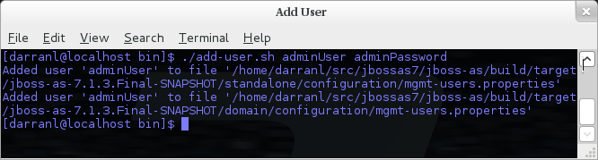
If you add users using this approach there is a risk that any other user that can view the list of running process may see the arguments including the password of the user being added, there is also the risk that the username / password combination will be cached in the history file of the shell you are currently using.
An Application User
When adding application users in addition to adding the user with their pre-hashed password it is also now possible to define the roles of the user.
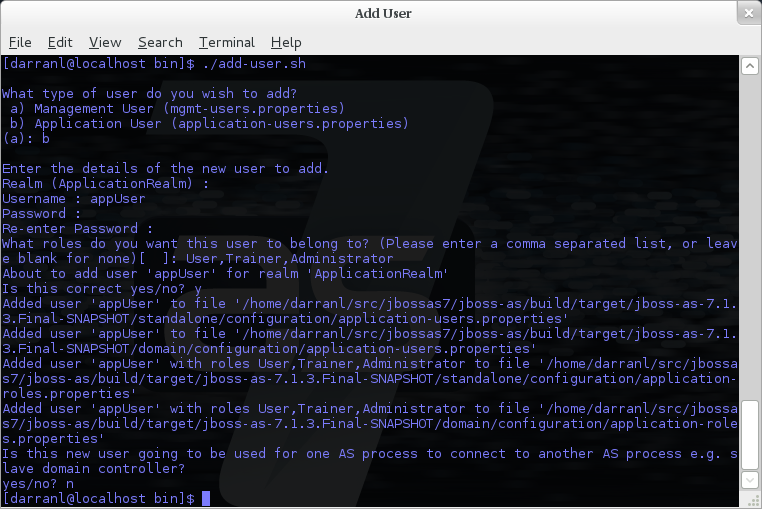
Here a new user called appUser has been added, in this case a comma separated list of roles has also been specified.
As with adding a management user just answer n or no to the final question until you know you are adding a user that will be establishing a connection from one server to another.
To add an application user non-interactively use the command ./add-user.sh -a {username} {password}.

Non-interactive mode does not support defining a list of users, to associate a user with a set of roles you will need to manually edit the application-roles.properties file by hand.
Updating a User
Within the add-user utility it is also possible to update existing users, in interactive mode you will be prompted to confirm if this is your intention.
A Management User
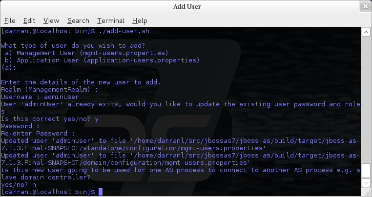
In non-interactive mode if a user already exists the update is automatic with no confirmation prompt.
An Application User
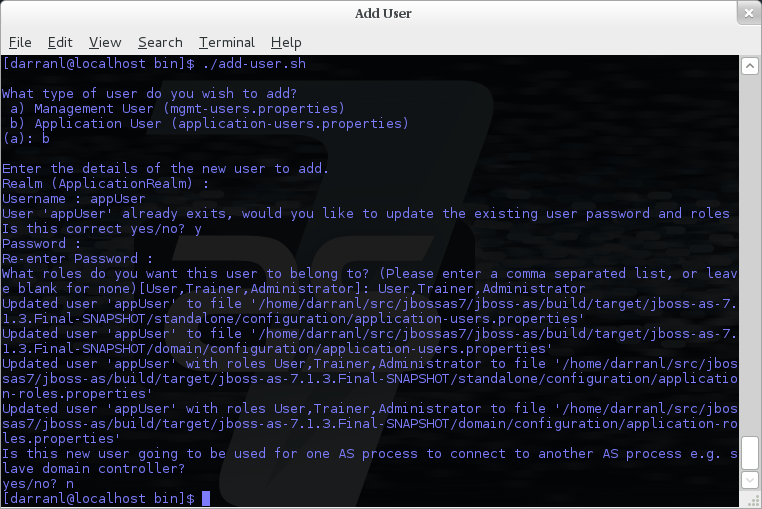
On updating a user with roles you will need to re-enter the list of roles assigned to the user.
In non-interactive mode if a user already exists the update is automatic with no confirmation prompt.
Community Contributions
There are still a few features to add to the add-user utility such as removing users or adding application users with roles in non-interactive mode, if you are interested in contributing to WildFly development the add-user utility is a good place to start as it is a stand alone utility, however it is a part of the AS build so you can become familiar with the AS development processes without needing to delve straight into the internals of the application server.
JMX Security
When configuring the security realms remote access to the server's MBeanServer needs a special mention. When running in standalone mode the following is the default configuration: -
<native-interface security-realm="ManagementRealm">...</native-interface>
<subsystem xmlns="urn:jboss:domain:jmx:1.1"> ... <remoting-connector/> </subsystem>
With this configuration remote access to JMX is provided over the native management interface, this is secured using the realm ManagementRealm, this means that any user that can connect to the native interface can also use this interface to access the MBeanServer - to disable this just remove the <remoting-connector /> element.
In domain mode it is slightly more complicates as the native interface is exposed by the host controller process however each application server is running in it's own process so by default remote access to JMX is disabled.
<subsystem xmlns="urn:jboss:domain:remoting:1.1"> <connector name="remoting-connector" socket-binding="remoting" security-realm="ApplicationRealm"/> </subsystem>
<subsystem xmlns="urn:jboss:domain:jmx:1.1"> ... <!--<remoting-connector use-management-endpoint="false"/>--> </subsystem>
To enable remote access to JMX uncomment the <remoting-connector /> element however be aware that this will make the MBeanServer accessible over the same Remoting connector used for remote JNDI and EJB access - this means that any user that can authenticate against the realm ApplicationRealm will be able to access the MBeanServer.
The following Jira issue is currently outstanding to allow access to the individual MBeanServers by proxying through the host controllers native interface AS7-4009, if this is a feature you would use please add your vote to the issue.
Detailed Configuration
This section of the documentation describes the various configuration options when defining realms, plug-ins are a slightly special case so the configuration options for plug-ins is within it's own section.
Within a security realm definition there are four optional elements <plug-ins />, <server-identities />, <authentication />, and <authorization />, as mentioned above plug-ins is defined within it's own section below so we will begin by looking at the <server-identities /> element.
<server-identities />
The server identities section of a realm definition is used to define how a server appears to the outside world, currently this element can be used to configure a password to be used when establishing a remote outbound connection and also how to load a X.509 key which can be used for both inbound and outbound SSL connections.
<ssl />
<server-identities>
<ssl protocol="...">
<keystore path="..." relative-to="..." keystore-password="..." alias="..." key-password="..." />
</ssl>
</server-identities>
-
protocol - By default this is set to TLS and in general does not need to be set.
The SSL element then contains the nested <keystore /> element, this is used to define how to load the key from the file based (JKS) keystore.
-
path (mandatory) - This is the path to the keystore, this can be an absolute path or relative to the next attribute.
-
relative-to (optional) - The name of a service representing a path the keystore is relative to.
-
keystore-password (mandatory) - The password required to open the keystore.
-
alias (optional) - The alias of the entry to use from the keystore - for a keystore with multiple entries in practice the first usable entry is used but this should not be relied on and the alias should be set to guarantee which entry is used.
-
key-password (optional) - The password to load the key entry, if omitted the keystore-password will be used instead.
If you see the error UnrecoverableKeyException: Cannot recover key the most likely cause that you need to specify a key-password and possible even an alias as well to ensure only one key is loaded.
<secret />
<server-identities> <secret value="..." /> </server-identities>
-
value (mandatory) - The password to use for outbound connections encoded as Base64, this field also supports a vault expression should stronger protection be required.
The username for the outbound connection is specified at the point the outbound connection is defined.
<authentication />
The authentication element is predominantly used to configure the authentication that is performed on an inbound connection, however there is one exception and that is if a trust store is defined - on negotiating an outbound SSL connection the trust store will be used to verify the remote server.
<authentication> <truststore /> <local /> <jaas /> <ldap /> <properties /> <users /> <plug-in /> </authentication>
An authentication definition can have zero or one <truststore />, it can also have zero or one <local /> and it can also have one of <jaas />, <ldap />, <properties />, <users />, and <plug-in /> i.e. the local mechanism and a truststore for certificate verification can be independent switched on and off and a single username / password store can be defined.
<truststore />
<authentication> <truststore path="..." relative-to="..." keystore-password="..."/> </authentication>
This element is used to define how to load a key store file that can be used as the trust store within the SSLContext we create internally, the store is then used to verify the certificates of the remote side of the connection be that inbound or outbound.
-
path (mandatory) - This is the path to the keystore, this can be an absolute path or relative to the next attribute.
-
relative-to (optional) - The name of a service representing a path the keystore is relative to.
-
keystore-password (mandatory) - The password required to open the keystore.
Although this is a definition of a trust store the attribute for the password is keystore-password, this is because the underlying file being opened is still a key store.
<local />
<authentication> <local default-user="..." allowed-users="..." /> </authentication>
This element switches on the local authentication mechanism that allows clients to the server to verify that they are local to the server, at the protocol level it is optional for the remote client to send a user name in the authentication response.
-
default-user (optional) - If the client does not pass in a username this is the assumed username, this value is also automatically added to the list of allowed-users.
-
allowed-users (optional) - This attribute is used to specify a comma separated list of users allowed to authenticate using the local mechanism, alternatively '*' can be specified to allow any username to be specified.
<jaas />
<authentication> <jaas name="..." /> </authentication>
The jaas element is used to enable username and password based authentication where the supplied username and password are verified by making use of a configured jaas domain.
-
name (mandatory) - The name of the jaas domain to use to verify the supplied username and password.
As JAAS authentication works by taking a username and password and verifying these the use of this element means that at the transport level authentication will be forced to send the password in plain text, any interception of the messages exchanged between the client and server without SSL enabled will reveal the users password.
<ldap />
<authentication>
<ldap connection="..." base-dn="..." recursive="..." user-dn="...">
<username-filter attribute="..." />
<advanced-filter filter="..." />
</ldap>
</authentication>
The ldap element is used to define how LDAP searches will be used to authenticate a user, this works by first connecting to LDAP and performing a search using the supplied user name to identity the distinguished name of the user and then a subsequent connection is made to the server using the password supplied by the user - if this second connection is a success then authentication succeeds.
Due to the verification approach used this configuration causes the authentication mechanisms selected for the protocol to cause the password to be sent from the client in plain text, the following Jira issue is to investigating proxying a Digest authentication with the LDAP server so no plain text password is needed AS7-4195.
-
connection (mandatory) - The name of the connection to use to connect to LDAP.
-
base-dn (mandatory) - The distinguished name of the context to use to begin the search from.
-
recursive (optional) - Should the filter be executed recursively? Defaults to false.
-
user-dn (optional) - After the user has been found specifies which attribute to read for the users distinguished name, defaults to 'dn'.
Within the ldap element only one of <username-filter /> or <advanced-filter /> can be specified.
This element is used for a simple filter to match the username specified by the remote user against a single attribute, as an example with Active Directory the match is most likely to be against the 'sAMAccountName' attribute.
-
attribute (mandatory) - The name of the field to match the users supplied username against.
This element is used where a more advanced filter is required, one example use of this filter is to exclude certain matches by specifying some additional criteria for the filter.
-
filter (mandatory) - The filter to execute to locate the user, this filter should contain '{0}' as a place holder for the username supplied by the user authenticating.
<properties />
<authentication> <properties path="..." relative-to="..." plain-text="..." /> </authentication>
The properties element is used to reference a properties file to load to read a users password or pre-prepared digest for the authentication process.
-
path (mandatory) - The path to the properties file, either absolute or relative to the path referenced by the relative-to attribute.
-
relative-to (optional) - The name of a path service that the defined path will be relative to.
-
plain-text (optional) - Setting to specify if the passwords are stored as plain text within the properties file, defaults to false.
By default the properties files are expected to store a pre-prepared hash of the users password in the form HEX( MD5( username ':' realm ':' password))
<users />
<authentication>
<users>
<user username="...">
<password>...</password>
</user>
</users>
</authentication>
This is a very simple store of a username and password that stores both of these within the domain model, this is only really provided for the provision of simple examples.
-
username (mandatory) - A users username.
The <password/> element is then used to define the password for the user.
<authorization />
The authorization element is used to define how a users roles can be loaded after the authentication process completes, these roles may then be used for subsequent authorization decisions based on the service being accessed. At the moment only a properties file approach or a custom plug-in are supported - support for loading roles from LDAP or from a database are planned for a subsequent release.
<authorization> <properties /> <plug-in /> </authorization>
<properties />
<authorization> <properties path="..." relative-to="..." /> </authorization>
The format of the properties file is username={ROLES} where {ROLES} is a comma separated list of the users roles.
-
path (mandatory) - The path to the properties file, either absolute or relative to the path referenced by the relative-to attribute.
-
relative-to (optional) - The name of a path service that the defined path will be relative to.
<outbound-connection />
Strictly speaking these are not a part of the security realm definition, however at the moment they are only used by security realms so the definition of outbound connection is described here.
<management>
<security-realms />
<outbound-connections>
<ldap />
</outbound-connections>
</management>
<ldap />
At the moment we only support outbound connections to ldap servers for the authentication process - this will later be expanded when we add support for database based authentication.
<outbound-connections> <ldap name="..." url="..." search-dn="..." search-credential="..." initial-context-factory="..." /> </outbound-connections>
The outbound connections are defined in this section and then referenced by name from the configuration that makes use of them.
-
name (mandatory) - The unique name used to reference this connection.
-
url (mandatory) - The URL use to establish the LDAP connection.
-
search-dn (mandatory) - The distinguished name of the user to authenticate as to perform the searches.
-
search-credential (mandatory) - The password required to connect to LDAP as the search-dn.
-
initial-context-factory (optional) - Allows overriding the initial context factory, defaults to 'com.sun.jndi.ldap.LdapCtxFactory'
Plug Ins
Within WildFly 8 for communication with the management interfaces and for other services exposed using Remoting where username / password authentication is used the use of Digest authentication is preferred over the use of HTTP Basic or SASL Plain so that we can avoid the sending of password in the clear over the network. For validation of the digests to work on the server we either need to be able to retrieve a users plain text password or we need to be able to obtain a ready prepared hash of their password along with the username and realm.
Previously to allow the addition of custom user stores we have added an option to the realms to call out to a JAAS domain to validate a users username and password, the problem with this approach is that to call JAAS we need the remote user to send in their plain text username and password so that a JAAS LoginModule can perform the validation, this forces us down to use either the HTTP Basic authentication mechanism or the SASL Plain mechanism depending on the transport used which is undesirable as we can not longer use Digest.
To overcome this we now support plugging in custom user stores to support loading a users password, hash and roles from a custom store to allow different stores to be implemented without forcing the authentication back to plain text variant, this article describes the requirements for a plug in and shows a simple example plug-in for use with WildFly 8.
When implementing a plug in there are two steps to the authentication process, the first step is to load the users identity and credential from the relevant store - this is then used to verify the user attempting to connect is valid. After the remote user is validated we then load the users roles in a second step. For this reason the support for plug-ins is split into the two stages, when providing a plug-in either of these two steps can be implemented but there is no requirement to implement the other side.
When implementing a plug-in the following interfaces are the bare minimum that need to be implemented so depending on if a plug-in to load a users identity or a plug-in to load a users roles is being implemented you will be implementing one of these interfaces.
Note - All classes and interfaces of the SPI to be implemented are in the 'org.jboss.as.domain.management.plugin' package which is a part of the 'org.jboss.as.domain-management' module but for simplicity for the rest of this section only the short names will be shown.
AuthenticationPlugIn
To implement an AuthenticationPlugIn the following interface needs to be implemened: -
public interface AuthenticationPlugIn<T extends Credential> {
Identity<T> loadIdentity(final String userName, final String realm) throws IOException;
}
During the authentication process this method will be called with the user name supplied by the remote user and the name of the realm they are authenticating against, this method call represents that an authentication attempt is occurring but it is the Identity instance that is returned that will be used for the actual authentication to verify the remote user.
The Identity interface is also an interface you will implement: -
public interface Identity<T extends Credential> {
String getUserName();
T getCredential();
}
Additional information can be contained within the Identity implementation although it will not currently be used, the key piece of information here is the Credential that will be returned - this needs to be one of the following: -
PasswordCredential
public final class PasswordCredential implements Credential {
public PasswordCredential(final char[] password);
public char[] getPassword();
void clear();
}
The PasswordCredential is already implemented so use this class if you have the plain text password of the remote user, by using this the secured interfaces will be able to continue using the Digest mechanism for authentication.
DigestCredential
public final class DigestCredential implements Credential {
public DigestCredential(final String hash);
public String getHash();
}
This class is also already implemented and should be returned if instead of the plain text password you already have a pre-prepared hash of the username, realm and password.
ValidatePasswordCredential
public interface ValidatePasswordCredential extends Credential {
boolean validatePassword(final char[] password);
}
This is a special Credential type to use when it is not possible to obtain either a plain text representation of the password or a pre-prepared hash - this is an interface as you will need to provide an implementation to verify a supplied password. The down side of using this type of Credential is that the authentication mechanism used at the transport level will need to drop down from Digest to either HTTP Basic or SASL Plain which will now mean that the remote client is sending their credential across the network in the clear.
If you use this type of credential be sure to force the mechanism choice to Plain as described in the configuration section below.
AuthorizationPlugIn
If you are implementing a custom mechanism to load a users roles you need to implement the AuthorizationPlugIn
public interface AuthorizationPlugIn {
String[] loadRoles(final String userName, final String realm) throws IOException;
}
As with the AuthenticationPlugIn this has a single method that takes a users userName and realm - the return type is an array of Strings with each entry representing a role the user is a member of.
PlugInConfigurationSupport
In addition to the specific interfaces above there is an additional interface that a plug-in can implement to receive configuration information before the plug-in is used and also to receive a Map instance that can be used to share state between the plug-in instance used for the authentication step of the call and the plug-in instance used for the authorization step.
public interface PlugInConfigurationSupport {
void init(final Map<String, String> configuration, final Map<String, Object> sharedState) throws IOException;
}
Installing and Configuring a Plug-In
The next step of this article describes the steps to implement a plug-in provider and how to make it available within WildFly 8 and how to configure it. Example configuration and an example implementation are shown to illustrate this.
The following is an example security realm definition which will be used to illustrate this: -
<security-realm name="PlugInRealm">
<plug-ins>
<plug-in module="org.jboss.as.sample.plugin"/>
</plug-ins>
<authentication>
<plug-in name="Sample">
<properties>
<property name="darranl.password" value="dpd"/>
<property name="darranl.roles" value="Admin,Banker,User"/>
</properties>
</plug-in>
</authentication>
<authorization>
<plug-in name="Delegate" />
</authorization>
</security-realm>
Before looking closely at the packaging and configuration there is one more interface to implement and that is the PlugInProvider interface, that interface is responsible for making PlugIn instances available at runtime to handle the requests.
PlugInProvider
public interface PlugInProvider {
AuthenticationPlugIn<Credential> loadAuthenticationPlugIn(final String name);
AuthorizationPlugIn loadAuthorizationPlugIn(final String name);
}
These methods are called with the name that is supplied in the plug-in elements that are contained within the authentication and authorization elements of the configuration, based on the sample configuration above the loadAuthenticationPlugIn method will be called with a parameter of 'Sample' and the loadAuthorizationPlugIn method will be called with a parameter of 'Delegate'.
Multiple plug-in providers may be available to the application server so if a PlugInProvider implementation does not recognise a name then it should just return null and the server will continue searching the other providers. If a PlugInProvider does recognise a name but fails to instantiate the PlugIn then a RuntimeException can be thrown to indicate the failure.
As a server could have many providers registered it is recommended that a naming convention including some form of hierarchy is used e.g. use package style names to avoid conflicts.
For the example the implementation is as follows: -
public class SamplePluginProvider implements PlugInProvider {
public AuthenticationPlugIn<Credential> loadAuthenticationPlugIn(String name) {
if ("Sample".equals(name)) {
return new SampleAuthenticationPlugIn();
}
return null;
}
public AuthorizationPlugIn loadAuthorizationPlugIn(String name) {
if ("Sample".equals(name)) {
return new SampleAuthenticationPlugIn();
} else if ("Delegate".equals(name)) {
return new DelegateAuthorizationPlugIn();
}
return null;
}
}
The load methods are called for each authentication attempt but it will be an implementation detail of the provider if it decides to return a new instance of the provider each time - in this scenario as we also use configuration and shared state then new instances of the implementations make sense.
To load the provider use a ServiceLoader so within the META-INF/services folder of the jar this project adds a file called 'org.jboss.as.domain.management.plugin.PlugInProvider' - this contains a single entry which is the fully qualified class name of the PlugInProvider implementation class.
org.jboss.as.sample.SamplePluginProvider
Package as a Module
To make the PlugInProvider available to the application it is bundled as a module and added to the modules already shipped with WildFly 8.
To add as a module we first need a module.xml: -
<?xml version="1.0" encoding="UTF-8"?>
<module xmlns="urn:jboss:module:1.1" name="org.jboss.as.sample.plugin">
<properties>
</properties>
<resources>
<resource-root path="SamplePlugIn.jar"/>
</resources>
<dependencies>
<module name="org.jboss.as.domain-management" />
</dependencies>
</module>
The interfaces being implemented are in the 'org.jboss.as.domain-management' module so a dependency on that module is defined, this module.xml is then placed in the '{jboss.home}/modules/org/jboss/as/sample/plugin/main'.
The compiled classed and META-INF/services as described above are assembled into a jar called SamplePlugIn.jar and also placed into this folder.
Looking back at the sample configuration at the top of the realm definition the following element was added: -
<plug-ins>
<plug-in module="org.jboss.as.sample.plugin"/>
</plug-ins>
This element is used to list the modules that should be searched for plug-ins. As plug-ins are loaded during the server start up this search is a lazy search so don't expect a definition to a non existant module or to a module that does not contain a plug-in to report an error.
The AuthenticationPlugIn
The example AuthenticationPlugIn is implemented as: -
public class SampleAuthenticationPlugIn extends AbstractPlugIn {
private static final String PASSWORD_SUFFIX = ".password";
private static final String ROLES_SUFFIX = ".roles";
private Map<String, String> configuration;
public void init(Map<String, String> configuration, Map<String, Object> sharedState) throws IOException {
this.configuration = configuration;
// This will allow an AuthorizationPlugIn to delegate back to this instance.
sharedState.put(AuthorizationPlugIn.class.getName(), this);
}
public Identity loadIdentity(String userName, String realm) throws IOException {
String passwordKey = userName + PASSWORD_SUFFIX;
if (configuration.containsKey(passwordKey)) {
return new SampleIdentity(userName, configuration.get(passwordKey));
}
throw new IOException("Identity not found.");
}
public String[] loadRoles(String userName, String realm) throws IOException {
String rolesKey = userName + ROLES_SUFFIX;
if (configuration.containsKey(rolesKey)) {
String roles = configuration.get(rolesKey);
return roles.split(",");
} else {
return new String[0];
}
}
private static class SampleIdentity implements Identity {
private final String userName;
private final Credential credential;
private SampleIdentity(final String userName, final String password) {
this.userName = userName;
this.credential = new PasswordCredential(password.toCharArray());
}
public String getUserName() {
return userName;
}
public Credential getCredential() {
return credential;
}
}
}
As you can see from this implementation there is also an additional class being extended AbstractPlugIn - that is simply an abstract class that implements the AuthenticationPlugIn, AuthorizationPlugIn, and PlugInConfigurationSupport interfaces already. The properties that were defined in the configuration are passed in as a Map and importantly for this sample the plug-in adds itself to the shared state map.
The AuthorizationPlugIn
The example implementation of the authentication plug in is as follows: -
public class DelegateAuthorizationPlugIn extends AbstractPlugIn {
private AuthorizationPlugIn authorizationPlugIn;
public void init(Map<String, String> configuration, Map<String, Object> sharedState) throws IOException {
authorizationPlugIn = (AuthorizationPlugIn) sharedState.get(AuthorizationPlugIn.class.getName());
}
public String[] loadRoles(String userName, String realm) throws IOException {
return authorizationPlugIn.loadRoles(userName, realm);
}
}
This plug-in illustrates how two plug-ins can work together, by the AuthenticationPlugIn placing itself in the shared state map it is possible for the authorization plug-in to make use of it for the loadRoles implementation.
Another option to consider to achieve similar behaviour could be to provide an Identity implementation that also contains the roles and place this in the shared state map - the AuthorizationPlugIn can retrieve this and return the roles.
Forcing Plain Text Authentication
As mentioned earlier in this article if the ValidatePasswordCredential is going to be used then the authentication used at the transport level needs to be forced from Digest authentication to plain text authentication, this can be achieved by adding a mechanism attribute to the plug-in definition within the authentication element i.e.
<authentication>
<plug-in name="Sample" mechanism="PLAIN">
Example Configurations
This section of the document contains a couple of examples for the most common scenarios likely to be used with the security realms, please feel free to raise Jira issues requesting additional scenarios or if you have configured something not covered here please feel free to add your own examples - this document is editable after all 
At the moment these examples are making use of the 'ManagementRealm' however the same can apply to the 'ApplicationRealm' or any custom realm you create for yourselves.
LDAP Authentication
The following example demonstrates an example configuration making use of Active Directory to verify the users username and password.
<management>
<security-realms>
<security-realm name="ManagementRealm">
<authentication>
<ldap connection="EC2" base-dn="CN=Users,DC=darranl,DC=jboss,DC=org">
<username-filter attribute="sAMAccountName" />
</ldap>
</authentication>
</security-realm>
</security-realms>
<outbound-connections>
<ldap name="EC2" url="ldap://127.0.0.1:9797" search-dn="CN=wf8,CN=Users,DC=darranl,DC=jboss,DC=org" search-credential="password"/>
</outbound-connections>
...
</management>
For simplicity the <local/> configuration has been removed from this example, however there it is fine to leave that in place for local authentication to remain possible.
Enable SSL
The first step is the creation of the key, by default this is going to be used for both the native management interface and the http management interface - to create the key we can use the keyTool, the following example will create a key valid for one year.
Open a terminal window in the folder {jboss.home}/standalone/configuration and enter the following command: -
keytool -genkey -alias server -keyalg RSA -keystore server.keystore -validity 365
Enter keystore password: Re-enter new password:
In this example I choose 'keystore_password'.
What is your first and last name? [Unknown]: localhost
Of all of the questions asked this is the most important and should match the host name that will be entered into the web browser to connect to the admin console.
Answer the remaining questions as you see fit and at the end for the purpose of this example I set the key password to 'key_password'.
The following example shows how this newly created keystore will be referenced to enable SSL.
<security-realm name="ManagementRealm">
<server-identities>
<ssl>
<keystore path="server.keystore" relative-to="jboss.server.config.dir" keystore-password="keystore_password" alias="server" key-password="key_password" />
</ssl>
</server-identities>
<authentication>
...
</authentication>
</security-realm>
The contents of the <authentication /> have not been changed in this example so authentication still occurs using either the local mechanism or username/password authentication using Digest.
Add Client-Cert to SSL
To enable Client-Cert style authentication we just now need to add a <truststore /> element to the <authentication /> element referencing a trust store that has had the certificates or trusted clients imported.
<security-realm name="ManagementRealm">
<server-identities>
<ssl>
<keystore path="server.keystore" relative-to="jboss.server.config.dir" keystore-password="keystore_password" alias="server" key-password="key_password" />
</ssl>
</server-identities>
<authentication>
<truststore path="server.truststore" relative-to="jboss.server.config.dir" keystore-password="truststore_password" />
<local default-user="$local"/>
<properties path="mgmt-users.properties" relative-to="jboss.server.config.dir"/>
</authentication>
</security-realm>
In this scenario if Client-Cert authentication does not occur clients can fall back to use either the local mechanism or username/password authentication. To make Client-Cert based authentication mandatory just remove the <local /> and <properties /> elements.
Authorizing management actions with Role Based Access Control
WildFly introduces a Role Based Access Control scheme that allows different administrative users to have different sets of permissions to read and update parts of the management tree. This replaces the simple permission scheme used in JBoss AS 7, where anyone who could successfully authenticate to the management security realm would have all permissions.
Access Control Providers
WildFly ships with two access control "providers", the "simple" provider, and the "rbac" provider. The "simple" provider is the default, and provides a permission scheme equivalent to the JBoss AS 7 behavior where any authenticated administrator has all permissions. The "rbac" provider gives the finer grained permission scheme that is the focus of this section.
The access control configuration is included in the management section of a standalone server's standalone.xml, or in a new "management" section in a managed domain's domain.xml. The access control policy is centrally configured in a managed domain.
<management>
. . .
<access-control provider="simple">
<role-mapping>
<role name="SuperUser">
<include>
<user name="$local"/>
</include>
</role>
</role-mapping>
</access-control>
</management>
As you can see, the provider is set to "simple" by default. With the "simple" provider, the nested "role-mapping" section is not actually relevant. It's there to help ensure that if the provider attribute is switched to "rbac" there will be at least one user mapped to a role that can continue to administer the system. This default mapping assigns the "$local" user name to the RBAC role that provides all permissions, the "SuperUser" role. The "$local" user name is the name an administrator will be assigned if he or she uses the CLI on the same system as the WildFly instance and the "local" authentication scheme is enabled.
RBAC provider overview
The access control scheme implemented by the "rbac" provider is based on seven standard roles. A role is a named set of permissions to perform one of the actions: addressing (i.e. looking up) a management resource, reading it, or modifying it. The different roles have constraints applied to their permissions that are used to determine whether the permission is granted.
RBAC roles
The seven standard roles are divided into two broad categories, based on whether the role can deal with items that are considered to be "security sensitive". Resources, attributes and operations that may affect administrative security (e.g. security realm resources and attributes that contain passwords) are "security sensitive".
Four roles are not given permissions for "security sensitive" items:
-
Monitor – a read-only role. Cannot modify any resource.
-
Operator – Monitor permissions, plus can modify runtime state, but cannot modify anything that ends up in the persistent configuration. Could, for example, restart a server.
-
Maintainer – Operator permissions, plus can modify the persistent configuration.
-
Deployer – like a Maintainer, but with permission to modify persistent configuration constrained to resources that are considered to be "application resources". A deployment is an application resource. The messaging server is not. Items like datasources and JMS destinations are not considered to be application resources by default, but this is configurable.
Three roles are granted permissions for security sensitive items:
-
SuperUser – has all permissions. Equivalent to a JBoss AS 7 administrator.
-
Administrator – has all permissions except cannot read or write resources related to the administrative audit logging system.
-
Auditor – can read anything. Can only modify the resources related to the administrative audit logging system.
The Auditor and Administrator roles are meant for organizations that want a separation of responsibilities between those who audit normal administrative actions and those who perform them, with those who perform most actions (Administrator role) not being able to read or alter the auditing configuration.
Access control constraints
The following factors are used to determine whether a given role is granted a permission:
-
What the requested action is (address, read, write)
-
Whether the resource, attribute or operation affects the persistent configuration
-
Whether the resource, attribute or operation is related to the administrative audit logging function
-
Whether the resource, attribute or operation is configured as security sensitive
-
Whether an attribute or operation parameter value has a security vault expression
-
Whether a resource is considered to be associated with applications, as opposed to being part of a general container configuration
The first three of these factors are non-configurable; the latter three allow some customization. See "Configuring constraints" for details.
Addressing a resource
As mentioned above, permissions are granted to perform one of three actions, addressing a resource, reading it, and modifying. The latter two actions are fairly self-explanatory. But what is meant by "addressing" a resource?
"Addressing" a resource refers to taking an action that allows the user to determine whether a resource at a given address actually exists. For example, the "read-children-names" operation lets a user determine valid addresses. Trying to read a resource and getting a "Permission denied" error also gives the user a clue that there actually is a resource at the requested address.
Some resources may include sensitive information as part of their address. For example, security realm resources include the realm name as the last element in the address. That realm name is potentially security sensitive; for example it is part of the data used when creating a hash of a user password. Because some addresses may contain security sensitive data, a user needs permission to even "address" a resource. If a user attempts to address a resource and does not have permission, they will not receive a "permission denied" type error. Rather, the system will respond as if the resource does not even exist, e.g. excluding the resource from the result of the "read-children-names" operation or responding with a "No such resource" error instead of "Permission denied" if the user is attempting to read or write the resource.
Another term for "addressing" a resource is "looking up" the resource.
Switching to the "rbac" provider
Use the CLI to switch the access-control provider.
Before changing the provider to "rbac", be sure your configuration has a user who will be mapped to one of the RBAC roles, preferably with at least one in the Administrator or SuperUser role. Otherwise your installation will not be manageable except by shutting it down and editing the xml configuration. If you have started with one of the standard xml configurations shipped with WildFly, the "$local" user will be mapped to the "SuperUser" role and the "local" authentication scheme will be enabled. This will allow a user running the CLI on the same system as the WildFly process to have full administrative permissions. Remote CLI users and web-based admin console users will have no permissions.
We recommend mapping at least one user besides "$local" before switching the provider to "rbac". You can do all of the configuration associated with the "rbac" provider even when the provider is set to "simple"
The management resources related to access control are located in the core-service=management/access=authorization portion of the management resource tree. Update the provider attribute to change between the "simple" and "rbac" providers. Any update requires a reload to take effect.
[standalone@localhost:9990 /] cd core-service=management/access=authorization
[standalone@localhost:9990 access=authorization] :write-attribute(name=provider,value=rbac)
{
"outcome" => "success",
"response-headers" => {
"operation-requires-reload" => true,
"process-state" => "reload-required"
}
}
[standalone@localhost:9990 access=authorization] reload
In a managed domain, the access control configuration is part of the domain wide configuration, so the resource address is the same as above:
[domain@localhost:9990 /] cd core-service=management/access=authorization
[domain@localhost:9990 access=authorization] :write-attribute(name=provider,value=rbac)
{
"outcome" => "success",
"response-headers" => {
"operation-requires-reload" => true,
"process-state" => "reload-required"
},
"result" => undefined,
"server-groups" => {"main-server-group" => {"host" => {"master" => {
"server-one" => {"response" => {
"outcome" => "success",
"response-headers" => {
"operation-requires-reload" => true,
"process-state" => "reload-required"
}
}},
"server-two" => {"response" => {
"outcome" => "success",
"response-headers" => {
"operation-requires-reload" => true,
"process-state" => "reload-required"
}
}}
}}}}
}
[domain@localhost:9990 access=authorization] reload --host=master
As with a standalone server, a reload is required for the change to take effect. In this case, all hosts and servers in the domain will need to be restarted, so be sure to plan well before making this change.
Mapping users and groups to roles
Once the "rbac" access control provider is enabled, only users who are mapped to one of the available roles will have any administrative permissions at all. So, to make RBAC useful, a mapping between individual users or groups of users and the available roles must be performed.
Mapping individual users
The easiest way to map individual users to roles is to use the web-based admin console.
Navigate to the "Administration" tab and the "Users" subtab. From there individual user mappings can be added, removed, or edited.
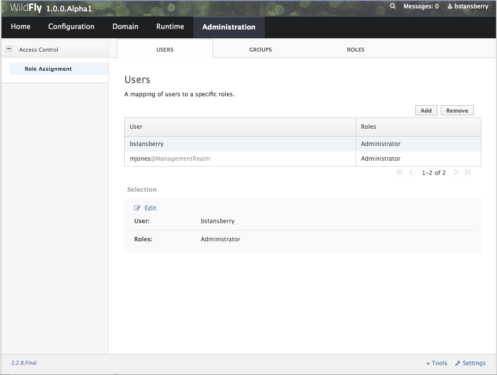
The CLI can also be used to map individuals users to roles.
First, if one does not exist, create the parent resource for all mappings for a role. Here we create the resource for the Administrator role.
[domain@localhost:9990 /] /core-service=management/access=authorization/role-mapping=Administrator:add
{
"outcome" => "success",
"result" => undefined,
"server-groups" => {"main-server-group" => {"host" => {"master" => {
"server-one" => {"response" => {"outcome" => "success"}},
"server-two" => {"response" => {"outcome" => "success"}}
}}}}
}
Once this is done, map a user to the role:
[domain@localhost:9990 /] /core-service=management/access=authorization/role-mapping=Administrator/include=user-jsmith:add(name=jsmith,type=USER)
{
"outcome" => "success",
"result" => undefined,
"server-groups" => {"main-server-group" => {"host" => {"master" => {
"server-one" => {"response" => {"outcome" => "success"}},
"server-two" => {"response" => {"outcome" => "success"}}
}}}}
}
Now if user jsmith authenticates to any security realm associated with the management interface they are using, he will be mapped to the Administrator role.
To restrict the mapping to a particular security realm, change the realm attribute to the realm name. This might be useful if different realms are associated with different management interfaces, and the goal is to limit a user to a particular interface.
[domain@localhost:9990 /] /core-service=management/access=authorization/role-mapping=Administrator/include=user-mjones:add(name=mjones,type=USER,realm=ManagementRealm)
{
"outcome" => "success",
"result" => undefined,
"server-groups" => {"main-server-group" => {"host" => {"master" => {
"server-one" => {"response" => {"outcome" => "success"}},
"server-two" => {"response" => {"outcome" => "success"}}
}}}}
}
User groups
A "group" is an arbitrary collection of users that may exist in the end user environment. They can be named whatever the end user organization wants and can contain whatever users the end user organization wants. Some of the authentication store types supported by WildFly security realms include the ability to access information about what groups a user is a member of and associate this information with the Subject produced when the user is authenticated. This is currently supported for the following authentication store types:
-
properties file (via the <realm_name>-groups.properties file)
-
LDAP (via directory-server-specific configuration)
Groups are convenient when it comes to associating a user with a role, since entire groups can be associated with a role in a single mapping.
Mapping groups to roles
The easiest way to map groups to roles is to use the web-based admin console.
Navigate to the "Administration" tab and the "Groups" subtab. From there group mappings can be added, removed, or edited.
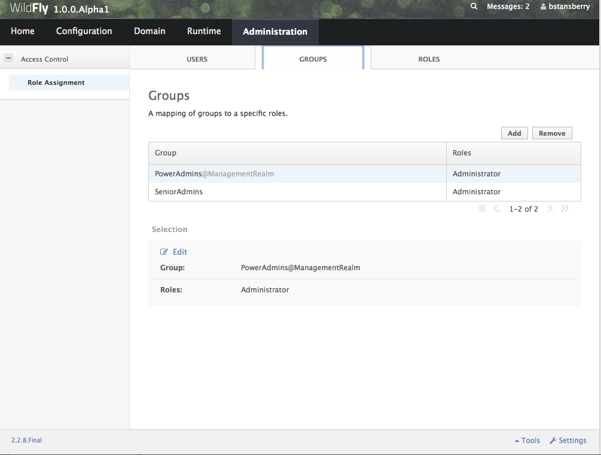
The CLI can also be used to map groups to roles. The only difference to individual user mapping is the value of the type attribute should be GROUP instead of USER.
[domain@localhost:9990 /] /core-service=management/access=authorization/role-mapping=Administrator/include=group-SeniorAdmins:add(name=SeniorAdmins,type=GROUP)
{
"outcome" => "success",
"result" => undefined,
"server-groups" => {"main-server-group" => {"host" => {"master" => {
"server-one" => {"response" => {"outcome" => "success"}},
"server-two" => {"response" => {"outcome" => "success"}}
}}}}
}
As with individual user mappings, the mapping can be restricted to users authenticating via a particular security realm:
[domain@localhost:9990 /] /core-service=management/access=authorization/role-mapping=Administrator/include=group-PowerAdmins:add(name=PowerAdmins,type=GROUP,realm=ManagementRealm)
{
"outcome" => "success",
"result" => undefined,
"server-groups" => {"main-server-group" => {"host" => {"master" => {
"server-one" => {"response" => {"outcome" => "success"}},
"server-two" => {"response" => {"outcome" => "success"}}
}}}}
}
Including all authenticated users in a role
It's possible to specify that all authenticated users should be mapped to a particular role. This could be used, for example, to ensure that anyone who can authenticate can at least have Monitor privileges.
A user who can authenticate to the management security realm but who does not map to a role will not be able to perform any administrative functions, not even reads.
In the web based admin console, navigate to the "Administration" tab, "Roles" subtab, highlight the relevant role, click the "Edit" button and click on the "Include All" checkbox:

The same change can be made using the CLI:
[domain@localhost:9990 /] /core-service=management/access=authorization/role-mapping=Monitor:write-attribute(name=include-all,value=true)
{
"outcome" => "success",
"result" => undefined,
"server-groups" => {"main-server-group" => {"host" => {"master" => {
"server-one" => {"response" => {"outcome" => "success"}},
"server-two" => {"response" => {"outcome" => "success"}}
}}}}
}
Excluding users and groups
It is also possible to explicitly exclude certain users and groups from a role. Exclusions take precedence over inclusions, including cases where the include-all attribute is set to true for a role.
In the admin console, excludes are done in the same screens as includes. In the add dialog, simply change the "Type" pulldown to "Exclude".
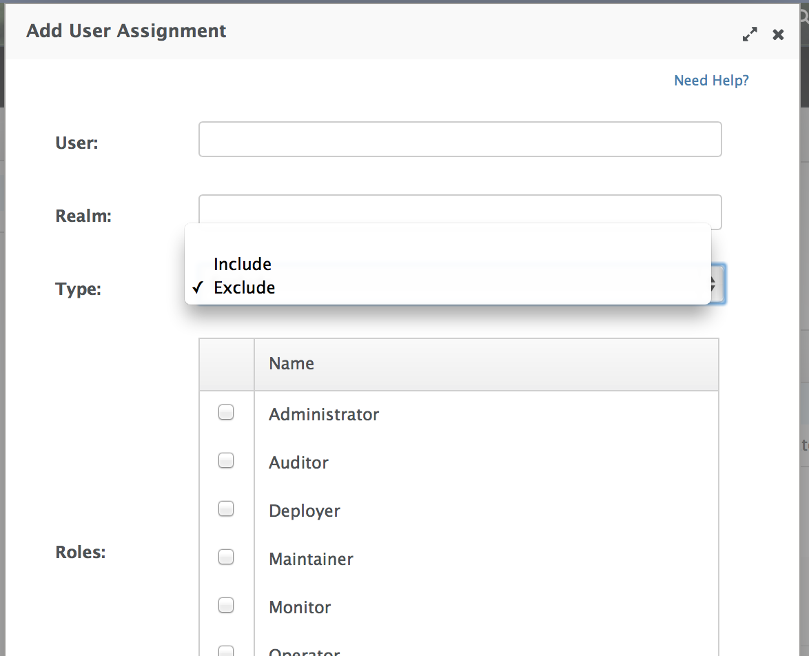
In the CLI, excludes are identical to includes, except the resource address has exclude instead of include as the key for the last address element:
[domain@localhost:9990 /] /core-service=management/access=authorization/role-mapping=Monitor/exclude=group-Temps:add(name=Temps,type=GROUP)
{
"outcome" => "success",
"result" => undefined,
"server-groups" => {"main-server-group" => {"host" => {"master" => {
"server-one" => {"response" => {"outcome" => "success"}},
"server-two" => {"response" => {"outcome" => "success"}}
}}}}
}
Users who map to multiple roles
It is possible that a given user will be mapped to more than one role. When this occurs, by default the user will be granted the union of the permissions of the two roles. This behavior can be changed on a global basis to instead respond to the user request with an error if this situation is detected:
[standalone@localhost:9990 /] cd core-service=management/access=authorization
[standalone@localhost:9990 access=authorization] :write-attribute(name=permission-combination-policy,value=rejecting)
{"outcome" => "success"}
Note that no reload is required; the change takes immediate effect.
To restore the default behavior, set the value to "permissive":
[standalone@localhost:9990 /] cd core-service=management/access=authorization
[standalone@localhost:9990 access=authorization] :write-attribute(name=permission-combination-policy,value=permissive)
{"outcome" => "success"}
Adding custom roles in a managed domain
A managed domain may involve a variety of servers running different configurations and hosting different applications. In such an environment, it is likely that there will be different teams of administrators responsible for different parts of the domain. To allow organizations to grant permissions to only parts of a domain, WildFly's RBAC scheme allows for the creation of custom "scoped roles". Scoped roles are based on the seven standard roles, but with permissions limited to a portion of the domain – either to a set of server groups or to a set of hosts.
Server group scoped roles
The privileges for a server-group scoped role are constrained to resources associated with one or more server groups. Server groups are often associated with a particular application or set of applications; organizations that have separate teams responsible for different applications may find server-group scoped roles useful.
A server-group scoped role is equivalent to the default role upon which it is based, but with privileges constrained to target resources in the resource trees rooted in the server group resources. The server-group scoped role can be configured to include privileges for the following resources trees logically related to the server group:
-
Profile
-
Socket Binding Group
-
Deployment
-
Deployment override
-
Server group
-
Server config
-
Server
Resources in the profile, socket binding group, server config and server portions of the tree that are not logically related to a server group associated with the server-group scoped role will not be addressable by a user in that role. So, in a domain with server groups “a” and “b”, a user in a server-group scoped role that grants access to “a” will not be able to address /server-group=b. The system will treat that resource as non-existent for that user.
In addition to these privileges, users in a server-group scoped role will have non-sensitive read privileges (equivalent to the Monitor role) for resources other than those listed above.
The easiest way to create a server-group scoped role is to use the admin console. But you can also use the CLI to create a server-group scoped role.
[domain@localhost:9990 /] /core-service=management/access=authorization/server-group-scoped-role=MainGroupAdmins:add(base-role=Administrator,server-groups=[main-server-group])
{
"outcome" => "success",
"result" => undefined,
"server-groups" => {"main-server-group" => {"host" => {"master" => {
"server-one" => {"response" => {"outcome" => "success"}},
"server-two" => {"response" => {"outcome" => "success"}}
}}}}
}
Once the role is created, users or groups can be mapped to it the same as with the seven standard roles.
Host scoped roles
The privileges for a host-scoped role are constrained to resources associated with one or more hosts. A user with a host-scoped role cannot modify the domain wide configuration. Organizations may use host-scoped roles to give administrators relatively broad administrative rights for a host without granting such rights across the managed domain.
A host-scoped role is equivalent to the default role upon which it is based, but with privileges constrained to target resources in the resource trees rooted in the host resources for one or more specified hosts.
In addition to these privileges, users in a host-scoped role will have non-sensitive read privileges (equivalent to the Monitor role) for domain wide resources (i.e. those not in the /host=* section of the tree.)
Resources in the /host=* portion of the tree that are unrelated to the hosts specified for the Host Scoped Role will not be visible to users in that host-scoped role. So, in a domain with hosts “a” and “b”, a user in a host-scoped role that grants access to “a” will not be able to address /host=b. The system will treat that resource as non-existent for that user.
The easiest way to create a host-scoped role is to use the admin console. But you can also use the CLI to create a host scoped role.
[domain@localhost:9990 /] /core-service=management/access=authorization/host-scoped-role=MasterOperators:add(base-role=Operator,hosts=[master]}
{
"outcome" => "success",
"result" => undefined,
"server-groups" => {"main-server-group" => {"host" => {"master" => {
"server-one" => {"response" => {"outcome" => "success"}},
"server-two" => {"response" => {"outcome" => "success"}}
}}}}
}
Once the role is created, users or groups can be mapped to it the same as with the seven standard roles.
Using the admin console to create scoped roles
Both server-group and host scoped roles can be added, removed or edited via the admin console. Select "Scoped Roles" from the "Administration" tab, "Roles" subtab:

When adding a new scoped role, use the dialogue's "Type" pull down to choose between a host scoped role and a server-group scoped role. Then place the names of the relevant hosts or server groups in the "Scope" text are.
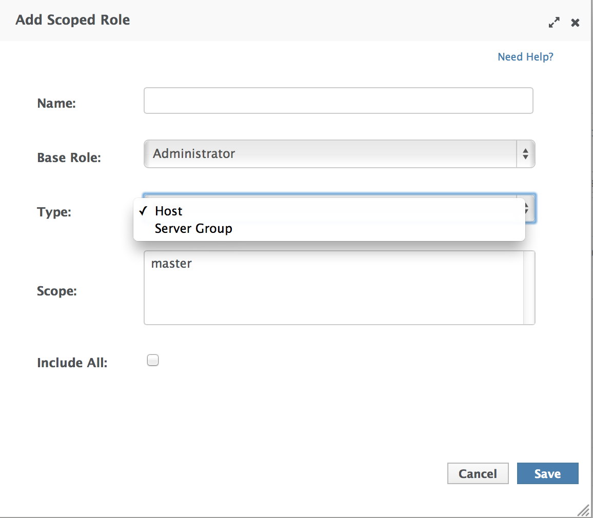
Configuring constraints
The following factors are used to determine whether a given role is granted a permission:
-
What the requested action is (address, read, write)
-
Whether the resource, attribute or operation affects the persistent configuration
-
Whether the resource, attribute or operation is related to the administrative audit logging function
-
Whether the resource, attribute or operation is configured as security sensitive
-
Whether an attribute or operation parameter value has a security vault expression
-
Whether a resource is considered to be associated with applications, as opposed to being part of a general container configuration
The first three of these factors are non-configurable; the latter three allow some customization.
Configuring sensitivity
"Sensitivity" constraints are about restricting access to security-sensitive data. Different organizations may have different opinions about what is security sensitive, so WildFly provides configuration options to allow users to tailor these constraints.
Sensitive resources, attributes and operations
The developers of the WildFly core and of any subsystem may annotate resources, attributes or operations with a "sensitivity classification". Classifications are either provided by the core and may be applicable anywhere in the management model, or they are scoped to a particular subsystem. For each classification, there will be a setting declaring whether by default the addressing, read and write actions are considered to be sensitive. If an action is sensitive, only users in the roles able to deal with sensitive data (Administrator, Auditor, SuperUser) will have permissions.
Using the CLI, administrators can see the settings for a classification. For example, there is a core classification called "socket-config" that is applied to elements throughout the model that relate to configuring sockets:
[domain@localhost:9990 /] cd core-service=management/access=authorization/constraint=sensitivity-classification/type=core/classification=socket-config [domain@localhost:9990 classification=socket-config] ls -l ATTRIBUTE VALUE TYPE configured-requires-addressable undefined BOOLEAN configured-requires-read undefined BOOLEAN configured-requires-write undefined BOOLEAN default-requires-addressable false BOOLEAN default-requires-read false BOOLEAN default-requires-write true BOOLEAN CHILD MIN-OCCURS MAX-OCCURS applies-to n/a n/a
The various default-requires-... attributes indicate whether a user must be in a role that allows security sensitive actions in order to perform the action. In the socket-config example above, default-requires-write is true, while the others are false. So, by default modifying a setting involving socket configuration is considered sensitive, while addressing those resources or doing reads is not sensitive.
The default-requires-... attributes are read-only. The configured-requires-... attributes however can be modified to override the default settings with ones appropriate for your organization. For example, if your organization doesn't regard modifying socket configuration settings to be security sensitive, you can change that setting:
[domain@localhost:9990 classification=socket-config] :write-attribute(name=configured-requires-write,value=false)
{
"outcome" => "success",
"result" => undefined,
"server-groups" => {"main-server-group" => {"host" => {"master" => {
"server-one" => {"response" => {"outcome" => "success"}},
"server-two" => {"response" => {"outcome" => "success"}}
}}}}
}
Administrators can also read the management model to see to which resources, attributes and operations a particular sensitivity classification applies:
[domain@localhost:9990 classification=socket-config] :read-children-resources(child-type=applies-to)
{
"outcome" => "success",
"result" => {
"/host=master" => {
"address" => "/host=master",
"attributes" => [],
"entire-resource" => false,
"operations" => ["resolve-internet-address"]
},
"/host=master/core-service=host-environment" => {
"address" => "/host=master/core-service=host-environment",
"attributes" => [
"host-controller-port",
"host-controller-address",
"process-controller-port",
"process-controller-address"
],
"entire-resource" => false,
"operations" => []
},
"/host=master/core-service=management/management-interface=http-interface" => {
"address" => "/host=master/core-service=management/management-interface=http-interface",
"attributes" => [
"port",
"secure-interface",
"secure-port",
"interface"
],
"entire-resource" => false,
"operations" => []
},
"/host=master/core-service=management/management-interface=native-interface" => {
"address" => "/host=master/core-service=management/management-interface=native-interface",
"attributes" => [
"port",
"interface"
],
"entire-resource" => false,
"operations" => []
},
"/host=master/interface=*" => {
"address" => "/host=master/interface=*",
"attributes" => [],
"entire-resource" => true,
"operations" => ["resolve-internet-address"]
},
"/host=master/server-config=*/interface=*" => {
"address" => "/host=master/server-config=*/interface=*",
"attributes" => [],
"entire-resource" => true,
"operations" => []
},
"/interface=*" => {
"address" => "/interface=*",
"attributes" => [],
"entire-resource" => true,
"operations" => []
},
"/profile=*/subsystem=messaging/hornetq-server=*/broadcast-group=*" => {
"address" => "/profile=*/subsystem=messaging/hornetq-server=*/broadcast-group=*",
"attributes" => [
"group-address",
"group-port",
"local-bind-address",
"local-bind-port"
],
"entire-resource" => false,
"operations" => []
},
"/profile=*/subsystem=messaging/hornetq-server=*/discovery-group=*" => {
"address" => "/profile=*/subsystem=messaging/hornetq-server=*/discovery-group=*",
"attributes" => [
"group-address",
"group-port",
"local-bind-address"
],
"entire-resource" => false,
"operations" => []
},
"/profile=*/subsystem=transactions" => {
"address" => "/profile=*/subsystem=transactions",
"attributes" => ["process-id-socket-max-ports"],
"entire-resource" => false,
"operations" => []
},
"/server-group=*" => {
"address" => "/server-group=*",
"attributes" => ["socket-binding-port-offset"],
"entire-resource" => false,
"operations" => []
},
"/socket-binding-group=*" => {
"address" => "/socket-binding-group=*",
"attributes" => [],
"entire-resource" => true,
"operations" => []
}
}
}
There will be a separate child for each address to which the classification applies. The entire-resource attribute will be true if the classification applies to the entire resource. Otherwise, the attributes and operations attributes will include the names of attributes or operations to which the classification applies.
Several of the core sensitivity classifications are commonly used across the management model and deserve special mention.
|
Name |
Description |
|
credential |
An attribute whose value is some sort of credential, e.g. a password or a username. By default sensitive for both reads and writes |
|
security-domain-ref |
An attribute whose value is the name of a security domain. By default sensitive for both reads and writes |
|
security-realm-ref |
An attribute whose value is the name of a security realm. By default sensitive for both reads and writes |
|
socket-binding-ref |
An attribute whose value is the name of a socket binding. By default not sensitive for any action |
|
socket-config |
A resource, attribute or operation that somehow relates to configuring a socket. By default sensitive for writes |
Values with security vault expressions
By default any attribute or operation parameter whose value includes a security vault expression will be treated as sensitive, even if no sensitivity classification applies or the classification does not treat the action as sensitive.
This setting can be globally changed via the CLI. There is a resource for this configuration:
[domain@localhost:9990 /] cd core-service=management/access=authorization/constraint=vault-expression [domain@localhost:9990 constraint=vault-expression] ls -l ATTRIBUTE VALUE TYPE configured-requires-read undefined BOOLEAN configured-requires-write undefined BOOLEAN default-requires-read true BOOLEAN default-requires-write true BOOLEAN
The various default-requires-... attributes indicate whether a user must be in a role that allows security sensitive actions in order to perform the action. So, by default both reading and writing attributes whose values include vault expressions requires a user to be in one of the roles with sensitive data permissions.
The default-requires-... attributes are read-only. The configured-requires-... attributes however can be modified to override the default settings with settings appropriate for your organization. For example, if your organization doesn't regard reading vault expressions to be security sensitive, you can change that setting:
[domain@localhost:9990 constraint=vault-expression] :write-attribute(name=configured-requires-read,value=false)
{
"outcome" => "success",
"result" => undefined,
"server-groups" => {"main-server-group" => {"host" => {"master" => {
"server-one" => {"response" => {"outcome" => "success"}},
"server-two" => {"response" => {"outcome" => "success"}}
}}}}
}
This vault-expression constraint overlaps somewhat with the core "credential" sensitivity classification in that the most typical uses of a vault expression are in attributes that contain a user name or password, and those will typically be annotated with the "credential" sensitivity classification. So, if you change the settings for the "credential" sensitivity classification you may also need to make a corresponding change to the vault-expression constraint settings, or your change will not have full effect.
Be aware though, that vault expressions can be used in any attribute that supports expressions, not just in credential-type attributes. So it is important to be familiar with where and how your organization uses vault expressions before changing these settings.
Configuring "Deployer" role access
The standard Deployer role has its write permissions limited to resources that are considered to be "application resources"; i.e. conceptually part of an application and not part of the general server configuration. By default, only deployment resources are considered to be application resources. However, different organizations may have different opinions on what qualifies as an application resource, so for resource types that subsystems authors consider potentially to be application resources, WildFly provides a configuration option to declare them as such. Such resources will be annotated with an "application classification".
For example, the mail subsystem provides such a classification:
[domain@localhost:9990 /] cd /core-service=management/access=authorization/constraint=application-classification/type=mail/classification=mail-session [domain@localhost:9990 classification=mail-session] ls -l ATTRIBUTE VALUE TYPE configured-application undefined BOOLEAN default-application false BOOLEAN CHILD MIN-OCCURS MAX-OCCURS applies-to n/a n/a
Use read-resource or read-children-resources to see what resources have this classification applied:
[domain@localhost:9990 classification=mail-session] :read-children-resources(child-type=applies-to)
{
"outcome" => "success",
"result" => {"/profile=*/subsystem=mail/mail-session=*" => {
"address" => "/profile=*/subsystem=mail/mail-session=*",
"attributes" => [],
"entire-resource" => true,
"operations" => []
}}
}
This indicates that this classification, intuitively enough, only applies to mail subsystem mail-session resources.
To make resources with this classification writeable by users in the Deployer role, set the configured-application attribute to true.
[domain@localhost:9990 classification=mail-session] :write-attribute(name=configured-application,value=true)
{
"outcome" => "success",
"result" => undefined,
"server-groups" => {"main-server-group" => {"host" => {"master" => {
"server-one" => {"response" => {"outcome" => "success"}},
"server-two" => {"response" => {"outcome" => "success"}}
}}}}
}
Application classifications shipped with WildFly
The subsystems shipped with the full WildFly distribution include the following application classifications:
|
Subsystem |
Classification |
|
datasources |
data-source |
|
datasources |
jdbc-driver |
|
datasources |
xa-data-source |
|
logging |
logger |
|
logging |
logging-profile |
|
|
mail-session |
|
messaging |
jms-queue |
|
messaging |
jms-topic |
|
messaging |
queue |
|
messaging |
security-setting |
|
naming |
binding |
|
resource-adapters |
resource-adapter |
|
security |
security-domain |
In each case the classification applies to the resources you would expect, given its name.
RBAC effect on administrator user experience
The RBAC scheme will result in reduced permissions for administrators who do not map to the SuperUser role, so this will of course have some impact on their experience when using administrative tools like the admin console and the CLI.
Admin console
The admin console takes great pains to provide a good user experience even when the user has reduced permissions. Resources the user is not permitted to see will simply not be shown, or if appropriate will be replaced in the UI with an indication that the user is not authorized. Interaction units like "Add" and "Remove" buttons and "Edit" links will be suppressed if the user has no write permissions.
CLI
The CLI is a much more unconstrained tool than the admin console is, allowing users to try to execute whatever operations they wish, so it's more likely that users who attempt to do things for which they lack necessary permissions will receive failure messages. For example, a user in the Monitor role cannot read passwords:
[domain@localhost:9990 /] /profile=default/subsystem=datasources/data-source=ExampleDS:read-attribute(name=password)
{
"outcome" => "failed",
"result" => undefined,
"failure-description" => "WFLYCTL0313: Unauthorized to execute operation 'read-attribute' for resource '[
(\"profile\" => \"default\"),
(\"subsystem\" => \"datasources\"),
(\"data-source\" => \"ExampleDS\")
]' -- \"WFLYCTL0332: Permission denied\"",
"rolled-back" => true
}
If the user isn't even allowed to address the resource then the response would be as if the resource doesn't exist, even though it actually does:
[domain@localhost:9990 /] /profile=default/subsystem=security/security-domain=other:read-resource
{
"outcome" => "failed",
"failure-description" => "WFLYCTL0216: Management resource '[
(\"profile\" => \"default\"),
(\"subsystem\" => \"security\"),
(\"security-domain\" => \"other\")
]' not found",
"rolled-back" => true
}
This prevents unauthorized users fishing for sensitive data in resource addresses by checking for "Permission denied" type failures.
Users who use the read-resource operation may ask for data, some of which they are allowed to see and some of which they are not. If this happens, the request will not fail, but inaccessible data will be elided and a response header will be included advising on what was not included. Here we show the effect of a Monitor trying to recursively read the security subsystem configuration:
[domain@localhost:9990 /] /profile=default/subsystem=security:read-resource(recursive=true)
{
"outcome" => "success",
"result" => {
"deep-copy-subject-mode" => undefined,
"security-domain" => undefined,
"vault" => undefined
},
"response-headers" => {"access-control" => [{
"absolute-address" => [
("profile" => "default"),
("subsystem" => "security")
],
"relative-address" => [],
"filtered-attributes" => ["deep-copy-subject-mode"],
"filtered-children-types" => ["security-domain"]
}]}
}
The response-headers section includes access control data in a list with one element per relevant resource. (In this case there's just one.) The absolute and relative address of the resource is shown, along with the fact that the value of the deep-copy-subject-mode attribute has been filtered (i.e. undefined is shown as the value, which may not be the real value) as well as the fact that child resources of type security-domain have been filtered.
Description of access control constraints in the management model metadata
The management model descriptive metadata returned from operations like read-resource-description and read-operation-description can be configured to include information describing the access control constraints relevant to the resource, This is done by using the access-control parameter. The output will be tailored to the caller's permissions. For example, a user who maps to the Monitor role could ask for information about a resource in the mail subsystem:
[domain@localhost:9990 /] cd /profile=default/subsystem=mail/mail-session=default/server=smtp
[domain@localhost:9990 server=smtp] :read-resource-description(access-control=trim-descriptions)
{
"outcome" => "success",
"result" => {
"description" => undefined,
"access-constraints" => {"application" => {"mail-session" => {"type" => "mail"}}},
"attributes" => undefined,
"operations" => undefined,
"children" => {},
"access-control" => {
"default" => {
"read" => true,
"write" => false,
"attributes" => {
"outbound-socket-binding-ref" => {
"read" => true,
"write" => false
},
"username" => {
"read" => false,
"write" => false
},
"tls" => {
"read" => true,
"write" => false
},
"ssl" => {
"read" => true,
"write" => false
},
"password" => {
"read" => false,
"write" => false
}
}
},
"exceptions" => {}
}
}
}
Because trim-descriptions was used as the value for the access-control parameter, the typical "description", "attributes", "operations" and "children" data is largely suppressed. (For more on this, see below.) The access-constraints field indicates that this resource is annotated with an [application constraint]. The access-control field includes information about the permissions the current caller has for this resource. The default section shows the default settings for resources of this type. The read and write fields directly under default show that the caller can, in general, read this resource but cannot write it. The attributes section shows the individual attribute settings. Note that Monitor cannot read the username and password attributes.
There are three valid values for the access-control parameter to read-resource-description and read-operation-description:
-
none – do not include access control information in the response. This is the default behavior if no parameter is included.
-
trim-descriptions – remove the normal description details, as shown in the example above
-
combined-descriptions – include both the normal output and the access control data
Learning about your own role mappings
Users can learn in which roles they are operating. In the admin console, click on your name in the top right corner; the roles you are in will be shown.

CLI users should use the whoami operation with the verbose attribute set:
[domain@localhost:9990 /] :whoami(verbose=true)
{
"outcome" => "success",
"result" => {
"identity" => {
"username" => "aadams",
"realm" => "ManagementRealm"
},
"mapped-roles" => [
"Maintainer"
]
}
}
"Run-as" capability for SuperUsers
If a user maps to the SuperUser role, WildFly also supports letting that user request that they instead map to one or more other roles. This can be useful when doing demos, or when the SuperUser is changing the RBAC configuration and wants to see what effect the changes have from the perspective of a user in another role. This capability is only available to the SuperUser role, so it can only be used to narrow a user's permissions, not to potentially increase them.
CLI run-as
With the CLI, run-as capability is on a per-request basis. It is done by using the "roles" operation header, the value of which can be the name of a single role or a bracket-enclosed, comma-delimited list of role names.
Example with a low level operation:
[standalone@localhost:9990 /] :whoami(verbose=true){roles=[Operator,Auditor]}
{
"outcome" => "success",
"result" => {
"identity" => {
"username" => "$local",
"realm" => "ManagementRealm"
},
"mapped-roles" => [
"Auditor",
"Operator"
]
}
}
Example with a CLI command:
[standalone@localhost:9990 /] deploy /tmp/helloworld.war --headers={roles=Monitor}
{"WFLYCTL0062: Composite operation failed and was rolled back. Steps that failed:" => {"Operation step-1" => "WFLYCTL0313: Unauthorized to execute operation 'add' for resource '[(\"deployment\" => \"helloworld.war\")]' -- \"WFLYCTL0332: Permission denied\""}}
[standalone@localhost:9990 /] deploy /tmp/helloworld.war --headers={roles=Maintainer}
Here we show the effect of switching to a role that isn't granted the necessary permission.
Admin console run-as
Admin console users can change the role in which they operate by clicking on their name in the top right corner and clicking on the "Run as..." link.
Then select the role in which you wish to operate:
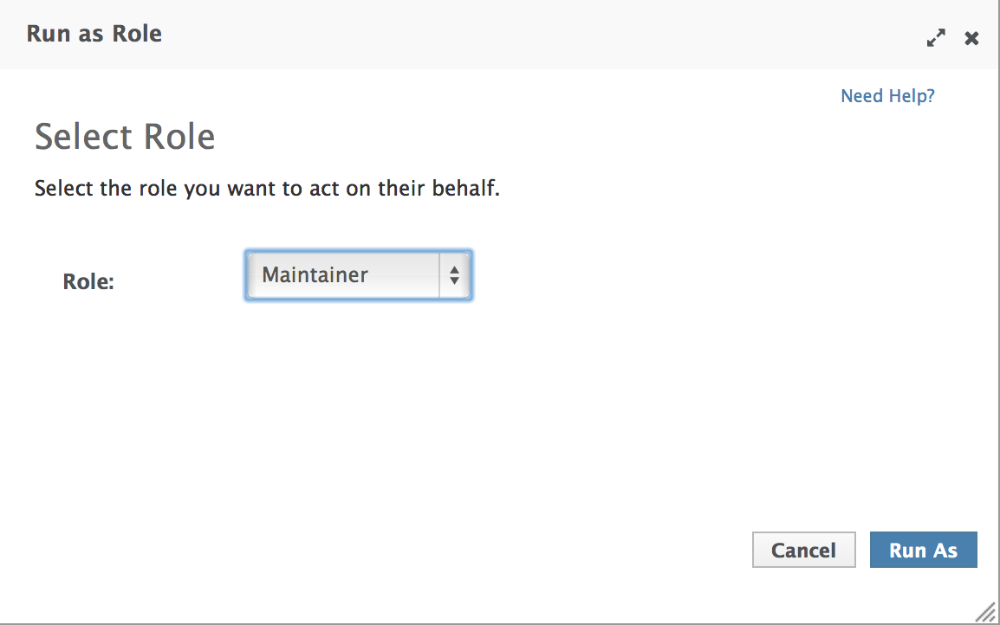
The console will need to be restarted in order for the change to take effect.
Using run-as roles with the "simple" access control provider
This "run-as" capability is available even if the "simple" access control provider is used. When the "simple" provider is used, any authenticated administrator is treated the same as if they would map to SuperUser when the "rbac" provider is used.
However, the "simple" provider actually understands all of the "rbac" provider configuration settings described above, but only makes use of them if the "run-as" capability is used for a request. Otherwise, the SuperUser role has all permissions, so detailed configuration is irrelevant.
Using the run-as capability with the "simple" provider may be useful if an administrator is setting up an rbac provider configuration before switching the provider to rbac to make that configuration take effect. The administrator can then run-as different roles to see the effect of the planned settings.
Subsystem configuration
The following chapters will focus on the high level management use cases that are available through the CLI and the web interface. For a detailed description of each subsystem configuration property, please consult the respective component reference.
Schema Location
The configuration schemas can found in $JBOSS_HOME/docs/schema.
EE Subsystem Configuration
Overview
The EE subsystem provides common functionality in the Java EE platform, such as the EE Concurrency Utilities (JSR 236) and @Resource injection. The subsystem is also responsible for managing the lifecycle of Java EE application's deployments, that is, .ear files.
The EE subsystem configuration may be used to:
-
customise the deployment of Java EE applications
-
create EE Concurrency Utilities instances
-
define the default bindings
The subsystem name is ee and this document covers EE subsystem version 2.0, which XML namespace within WildFly XML configurations is urn:jboss:domain:ee:2.0. The path for the subsystem's XML schema, within WildFly's distribution, is docs/schema/jboss-as-ee_2_0.xsd.
Subsystem XML configuration example with all elements and attributes specified:
<subsystem xmlns="urn:jboss:domain:ee:2.0" >
<global-modules>
<module name="org.jboss.logging"
slot="main"/>
<module name="org.apache.log4j"
annotations="true"
meta-inf="true"
services="false" />
</global-modules>
<ear-subdeployments-isolated>true</ear-subdeployments-isolated>
<spec-descriptor-property-replacement>false</spec-descriptor-property-replacement>
<jboss-descriptor-property-replacement>false</jboss-descriptor-property-replacement>
<annotation-property-replacement>false</annotation-property-replacement>
<concurrent>
<context-services>
<context-service
name="default"
jndi-name="java:jboss/ee/concurrency/context/default"
use-transaction-setup-provider="true" />
</context-services>
<managed-thread-factories>
<managed-thread-factory
name="default"
jndi-name="java:jboss/ee/concurrency/factory/default"
context-service="default"
priority="1" />
</managed-thread-factories>
<managed-executor-services>
<managed-executor-service
name="default"
jndi-name="java:jboss/ee/concurrency/executor/default"
context-service="default"
thread-factory="default"
hung-task-threshold="60000"
core-threads="5"
max-threads="25"
keepalive-time="5000"
queue-length="1000000"
reject-policy="RETRY_ABORT" />
</managed-executor-services>
<managed-scheduled-executor-services>
<managed-scheduled-executor-service
name="default"
jndi-name="java:jboss/ee/concurrency/scheduler/default"
context-service="default"
thread-factory="default"
hung-task-threshold="60000"
core-threads="5"
keepalive-time="5000"
reject-policy="RETRY_ABORT" />
</managed-scheduled-executor-services>
</concurrent>
<default-bindings
context-service="java:jboss/ee/concurrency/context/default"
datasource="java:jboss/datasources/ExampleDS"
jms-connection-factory="java:jboss/DefaultJMSConnectionFactory"
managed-executor-service="java:jboss/ee/concurrency/executor/default"
managed-scheduled-executor-service="java:jboss/ee/concurrency/scheduler/default"
managed-thread-factory="java:jboss/ee/concurrency/factory/default" />
</subsystem>
Java EE Application Deployment
The EE subsystem configuration allows the customisation of the deployment behaviour for Java EE Applications.
Global Modules
Global modules is a set of JBoss Modules that will be added as dependencies to the JBoss Module of every Java EE deployment. Such dependencies allows Java EE deployments to see the classes exported by the global modules.
Each global module is defined through the module resource, an example of its XML configuration:
<global-modules>
<module name="org.jboss.logging" slot="main"/>
<module name="org.apache.log4j" annotations="true" meta-inf="true" services="false" />
</global-modules>
The only mandatory attribute is the JBoss Module name, the slot attribute defaults to main, and both define the JBoss Module ID to reference.
The optional annotations attribute, which defaults to false, indicates if a pre-computed annotation index should be imported from META-INF/jandex.idx
The optional services attribute indicates if any services exposed in META-INF/services should be made available to the deployments class loader, and defaults to false.
The optional meta-inf attribute, which defaults to true, indicates if the Module's META-INF path should be available to the deployment's class loader.
EAR Subdeployments Isolation
A flag indicating whether each of the subdeployments within a .ear can access classes belonging to another subdeployment within the same .ear. The default value is false, which allows the subdeployments to see classes belonging to other subdeployments within the .ear.
<ear-subdeployments-isolated>true</ear-subdeployments-isolated>
For example:
myapp.ear | |--- web.war | |--- ejb1.jar | |--- ejb2.jar
If the ear-subdeployments-isolated is set to false, then the classes in web.war can access classes belonging to ejb1.jar and ejb2.jar. Similarly, classes from ejb1.jar can access classes from ejb2.jar (and vice-versa).
This flag has no effect on the isolated classloader of the .war file(s), i.e. irrespective of whether this flag is set to true or false, the .war within a .ear will have a isolated classloader, and other subdeployments within that .ear will not be able to access classes from that .war. This is as per spec.
Property Replacement
The EE subsystem configuration includes flags to configure whether system property replacement will be done on XML descriptors and Java Annotations, included in Java EE deployments.
System properties etc are resolved in the security context of the application server itself, not the deployment that contains the file. This means that if you are running with a security manager and enable this property, a deployment can potentially access system properties or environment entries that the security manager would have otherwise prevented.
Spec Descriptor Property Replacement
Flag indicating whether system property replacement will be performed on standard Java EE XML descriptors. This defaults to true, however it is disabled in the default configurations.
<spec-descriptor-property-replacement>false</spec-descriptor-property-replacement>
JBoss Descriptor Property Replacement
Flag indicating whether system property replacement will be performed on WildFly proprietary XML descriptors, such as jboss-app.xml. This defaults to true.
<jboss-descriptor-property-replacement>false</jboss-descriptor-property-replacement>
Annotation Property Replacement
Flag indicating whether system property replacement will be performed on Java annotations. The default value is false.
<annotation-property-replacement>false</annotation-property-replacement>
EE Concurrency Utilities
EE Concurrency Utilities (JSR 236) were introduced with Java EE 7, to ease the task of writing multithreaded Java EE applications. Instances of these utilities are managed by WildFly, and the related configuration provided by the EE subsystem.
Context Services
The Context Service is a concurrency utility which creates contextual proxies from existent objects. WildFly Context Services are also used to propagate the context from a Java EE application invocation thread, to the threads internally used by the other EE Concurrency Utilities. Context Service instances may be created using the subsystem XML configuration:
<context-services>
<context-service
name="default"
jndi-name="java:jboss/ee/concurrency/context/default"
use-transaction-setup-provider="true" />
</context-services>
The name attribute is mandatory, and it's value should be a unique name within all Context Services.
The jndi-name attribute is also mandatory, and defines where in the JNDI the Context Service should be placed.
The optional use-trasaction-setup-provider attribute indicates if the contextual proxies built by the Context Service should suspend transactions in context, when invoking the proxy objects, and its value defaults to true.
Management clients, such as the WildFly CLI, may also be used to configure Context Service instances. An example to add and remove one named other:
/subsystem=ee/context-service=other:add(jndi-name=java\:jboss\/ee\/concurrency\/other) /subsystem=ee/context-service=other:remove
Managed Thread Factories
The Managed Thread Factory allows Java EE applications to create new threads. WildFly Managed Thread Factory instances may also, optionally, use a Context Service instance to propagate the Java EE application thread’s context to the new threads. Instance creation is done through the EE subsystem, by editing the subsystem XML configuration:
<managed-thread-factories>
<managed-thread-factory
name="default"
jndi-name="java:jboss/ee/concurrency/factory/default"
context-service="default"
priority="1" />
</managed-thread-factories>
The name attribute is mandatory, and it's value should be a unique name within all Managed Thread Factories.
The jndi-name attribute is also mandatory, and defines where in the JNDI the Managed Thread Factory should be placed.
The optional context-service references an existent Context Service by its name. If specified then thread created by the factory will propagate the invocation context, present when creating the thread.
The optional priority indicates the priority for new threads created by the factory, and defaults to 5.
Management clients, such as the WildFly CLI, may also be used to configure Managed Thread Factory instances. An example to add and remove one named other:
/subsystem=ee/managed-thread-factory=other:add(jndi-name=java\:jboss\/ee\/factory\/other) /subsystem=ee/managed-thread-factory=other:remove
Managed Executor Services
The Managed Executor Service is the Java EE adaptation of Java SE Executor Service, providing to Java EE applications the functionality of asynchronous task execution. WildFly is responsible to manage the lifecycle of Managed Executor Service instances, which are specified through the EE subsystem XML configuration:
<managed-executor-services>
<managed-executor-service
name="default"
jndi-name="java:jboss/ee/concurrency/executor/default"
context-service="default"
thread-factory="default"
hung-task-threshold="60000"
core-threads="5"
max-threads="25"
keepalive-time="5000"
queue-length="1000000"
reject-policy="RETRY_ABORT" />
</managed-executor-services>
The name attribute is mandatory, and it's value should be a unique name within all Managed Executor Services.
The jndi-name attribute is also mandatory, and defines where in the JNDI the Managed Executor Service should be placed.
The optional context-service references an existent Context Service by its name. If specified then the referenced Context Service will capture the invocation context present when submitting a task to the executor, which will then be used when executing the task.
The optional thread-factory references an existent Managed Thread Factory by its name, to handle the creation of internal threads. If not specified then a Managed Thread Factory with default configuration will be created and used internally.
The mandatory core-threads provides the number of threads to keep in the executor's pool, even if they are idle. A value of 0 means there is no limit.
The optional queue-length indicates the number of tasks that can be stored in the input queue. The default value is 0, which means the queue capacity is unlimited.
The executor’s task queue is based on the values of the attributes core-threads and queue-length:
-
If queue-length is 0, or queue-length is Integer.MAX_VALUE (2147483647) and core-threads is 0, direct handoff queuing strategy will be used and a synchronous queue will be created.
-
If queue-length is Integer.MAX_VALUE but core-threads is not 0, an unbounded queue will be used.
-
For any other valid value for queue-length, a bounded queue wil be created.
The optional hung-task-threshold defines a threshold value, in milliseconds, to hung a possibly blocked task. A value of 0 will never hung a task, and is the default.
The optional long-running-tasks is a hint to optimize the execution of long running tasks, and defaults to false.
The optional max-threads defines the the maximum number of threads used by the executor, which defaults to Integer.MAX_VALUE (2147483647).
The optional keepalive-time defines the time, in milliseconds, that an internal thread may be idle. The attribute default value is 60000.
The optional reject-policy defines the policy to use when a task is rejected by the executor. The attribute value may be the default ABORT, which means an exception should be thrown, or RETRY_ABORT, which means the executor will try to submit it once more, before throwing an exception.
Management clients, such as the WildFly CLI, may also be used to configure Managed Executor Service instances. An example to add and remove one named other:
/subsystem=ee/managed-executor-service=other:add(jndi-name=java\:jboss\/ee\/executor\/other, core-threads=2) /subsystem=ee/managed-executor-service=other:remove
Managed Scheduled Executor Services
The Managed Scheduled Executor Service is the Java EE adaptation of Java SE Scheduled Executor Service, providing to Java EE applications the functionality of scheduling task execution. WildFly is responsible to manage the lifecycle of Managed Scheduled Executor Service instances, which are specified through the EE subsystem XML configuration:
<managed-scheduled-executor-services>
<managed-scheduled-executor-service
name="default"
jndi-name="java:jboss/ee/concurrency/scheduler/default"
context-service="default"
thread-factory="default"
hung-task-threshold="60000"
core-threads="5"
keepalive-time="5000"
reject-policy="RETRY_ABORT" />
</managed-scheduled-executor-services>
The name attribute is mandatory, and it's value should be a unique name within all Managed Scheduled Executor Services.
The jndi-name attribute is also mandatory, and defines where in the JNDI the Managed Scheduled Executor Service should be placed.
The optional context-service references an existent Context Service by its name. If specified then the referenced Context Service will capture the invocation context present when submitting a task to the executor, which will then be used when executing the task.
The optional thread-factory references an existent Managed Thread Factory by its name, to handle the creation of internal threads. If not specified then a Managed Thread Factory with default configuration will be created and used internally.
The mandatory core-threads provides the number of threads to keep in the executor's pool, even if they are idle. A value of 0 means there is no limit.
The optional hung-task-threshold defines a threshold value, in milliseconds, to hung a possibly blocked task. A value of 0 will never hung a task, and is the default.
The optional long-running-tasks is a hint to optimize the execution of long running tasks, and defaults to false.
The optional keepalive-time defines the time, in milliseconds, that an internal thread may be idle. The attribute default value is 60000.
The optional reject-policy defines the policy to use when a task is rejected by the executor. The attribute value may be the default ABORT, which means an exception should be thrown, orRETRY_ABORT, which means the executor will try to submit it once more, before throwing an exception.
Management clients, such as the WildFly CLI, may also be used to configure Managed Scheduled Executor Service instances. An example to add and remove one named other:
/subsystem=ee/managed-scheduled-executor-service=other:add(jndi-name=java\:jboss\/ee\/scheduler\/other, core-threads=2) /subsystem=ee/managed-scheduled-executor-service=other:remove
Default EE Bindings
The Java EE Specification mandates the existence of a default instance for each of the following resources:
-
Context Service
-
Datasource
-
JMS Connection Factory
-
Managed Executor Service
-
Managed Scheduled Executor Service
-
Managed Thread Factory
The EE subsystem looks up the default instances from JNDI, using the names in the default bindings configuration, before placing those in the standard JNDI names, such as java:comp/DefaultManagedExecutorService:
<default-bindings context-service="java:jboss/ee/concurrency/context/default" datasource="java:jboss/datasources/ExampleDS" jms-connection-factory="java:jboss/DefaultJMSConnectionFactory" managed-executor-service="java:jboss/ee/concurrency/executor/default" managed-scheduled-executor-service="java:jboss/ee/concurrency/scheduler/default" managed-thread-factory="java:jboss/ee/concurrency/factory/default" />
The default bindings are optional, if the jndi name for a default binding is not configured then the related resource will not be available to Java EE applications.
Naming
Overview
The Naming subsystem provides the JNDI implementation on WildFly, and its configuration allows to:
-
bind entries in global JNDI namespaces
-
turn off/on the remote JNDI interface
The subsystem name is naming and this document covers Naming subsystem version 2.0, which XML namespace within WildFly XML configurations is urn:jboss:domain:naming:2.0. The path for the subsystem's XML schema, within WildFly's distribution, is docs/schema/jboss-as-naming_2_0.xsd.
Subsystem XML configuration example with all elements and attributes specified:
<subsystem xmlns="urn:jboss:domain:naming:2.0">
<bindings>
<simple name="java:global/a" value="100" type="int" />
<simple name="java:global/jboss.org/docs/url" value="https://docs.jboss.org" type="java.net.URL" />
<object-factory name="java:global/foo/bar/factory" module="org.foo.bar" class="org.foo.bar.ObjectFactory" />
<external-context name="java:global/federation/ldap/example" class="javax.naming.directory.InitialDirContext" cache="true">
<environment>
<property name="java.naming.factory.initial" value="com.sun.jndi.ldap.LdapCtxFactory" />
<property name="java.naming.provider.url" value="ldap://ldap.example.com:389" />
<property name="java.naming.security.authentication" value="simple" />
<property name="java.naming.security.principal" value="uid=admin,ou=system" />
<property name="java.naming.security.credentials" value="secret" />
</environment>
</external-context>
<lookup name="java:global/c" lookup="java:global/b" />
</bindings>
<remote-naming/>
</subsystem>
Global Bindings Configuration
The Naming subsystem configuration allows binding entries into the following global JNDI namespaces:
-
java:global
-
java:jboss
-
java:
If WildFly is to be used as a Java EE application server, then it's recommended to opt for java:global, since it is a standard (i.e. portable) namespace.
Four different types of bindings are supported:
-
Simple
-
Object Factory
-
External Context
-
Lookup
In the subsystem's XML configuration, global bindings are configured through the <bindings /> XML element, as an example:
<bindings>
<simple name="java:global/a" value="100" type="int" />
<object-factory name="java:global/foo/bar/factory" module="org.foo.bar" class="org.foo.bar.ObjectFactory" />
<external-context name="java:global/federation/ldap/example" class="javax.naming.directory.InitialDirContext" cache="true">
<environment>
<property name="java.naming.factory.initial" value="com.sun.jndi.ldap.LdapCtxFactory" />
<property name="java.naming.provider.url" value="ldap://ldap.example.com:389" />
<property name="java.naming.security.authentication" value="simple" />
<property name="java.naming.security.principal" value="uid=admin,ou=system" />
<property name="java.naming.security.credentials" value="secret" />
</environment>
</external-context>
<lookup name="java:global/c" lookup="java:global/b" />
</bindings>
Simple Bindings
A simple binding is a primitive or java.net.URL entry, and it is defined through the simple XML element. An example of its XML configuration:
<simple name="java:global/a" value="100" type="int" />
The name attribute is mandatory and specifies the target JNDI name for the entry.
The value attribute is mandatory and defines the entry's value.
The optional type attribute, which defaults to java.lang.String, specifies the type of the entry's value. Besides java.lang.String, allowed types are all the primitive types and their corresponding object wrapper classes, such as int or java.lang.Integer, and java.net.URL.
Management clients, such as the WildFly CLI, may be used to configure simple bindings. An example to add and remove the one in the XML example above:
/subsystem=naming/binding=java\:global\/a:add(binding-type=simple, type=int, value=100) /subsystem=naming/binding=java\:global\/a:remove
Object Factories
The Naming subsystem configuration allows the binding of javax.naming.spi.ObjectFactory entries, through the object-factory XML element, for instance:
<object-factory name="java:global/foo/bar/factory" module="org.foo.bar" class="org.foo.bar.ObjectFactory">
<environment>
<property name="p1" value="v1" />
<property name="p2" value="v2" />
</environment>
</object-factory>
The name attribute is mandatory and specifies the target JNDI name for the entry.
The class attribute is mandatory and defines the object factory's Java type.
The module attribute is mandatory and specifies the JBoss Module ID where the object factory Java class may be loaded from.
The optional environment child element may be used to provide a custom environment to the object factory.
Management clients, such as the WildFly CLI, may be used to configure object factory bindings. An example to add and remove the one in the XML example above:
/subsystem=naming/binding=java\:global\/foo\/bar\/factory:add(binding-type=object-factory, module=org.foo.bar, class=org.foo.bar.ObjectFactory, environment=[p1=v1, p2=v2]) /subsystem=naming/binding=java\:global\/foo\/bar\/factory:remove
External Context Federation
Federation of external JNDI contexts, such as a LDAP context, are achieved by adding External Context bindings to the global bindings configuration, through the external-context XML element. An example of its XML configuration:
<external-context name="java:global/federation/ldap/example" class="javax.naming.directory.InitialDirContext" cache="true">
<environment>
<property name="java.naming.factory.initial" value="com.sun.jndi.ldap.LdapCtxFactory" />
<property name="java.naming.provider.url" value="ldap://ldap.example.com:389" />
<property name="java.naming.security.authentication" value="simple" />
<property name="java.naming.security.principal" value="uid=admin,ou=system" />
<property name="java.naming.security.credentials" value="secret" />
</environment>
</external-context>
The name attribute is mandatory and specifies the target JNDI name for the entry.
The class attribute is mandatory and indicates the Java initial naming context type used to create the federated context. Note that such type must have a constructor with a single environment map argument.
The optional module attribute specifies the JBoss Module ID where any classes required by the external JNDI context may be loaded from.
The optional cache attribute, which value defaults to false, indicates if the external context instance should be cached.
The optional environment child element may be used to provide the custom environment needed to lookup the external context.
Management clients, such as the WildFly CLI, may be used to configure external context bindings. An example to add and remove the one in the XML example above:
/subsystem=naming/binding=java\:global\/federation\/ldap\/example:add(binding-type=external-context, cache=true, class=javax.naming.directory.InitialDirContext, environment=[java.naming.factory.initial=com.sun.jndi.ldap.LdapCtxFactory, java.naming.provider.url=ldap\:\/\/ldap.example.com\:389, java.naming.security.authentication=simple, java.naming.security.principal=uid\=admin\,ou\=system, java.naming.security.credentials= secret]) /subsystem=naming/binding=java\:global\/federation\/ldap\/example:remove
Some JNDI providers may fail when their resources are looked up if they do not implement properly the lookup(Name) method. Their errors would look like:
|
11:31:49,047 ERROR org.jboss.resource.adapter.jms.inflow.JmsActivation (default-threads -1) javax.naming.InvalidNameException: Only support CompoundName names |
To work around their shortcomings, the org.jboss.as.naming.lookup.by.string property can be specified in the external-context's environment to use instead the lookup(String) method (with a performance degradation):
<property name="org.jboss.as.naming.lookup.by.string" value="true"/>
Binding Aliases
The Naming subsystem configuration allows the binding of existent entries into additional names, i.e. aliases. Binding aliases are specified through the lookup XML element. An example of its XML configuration:
<lookup name="java:global/c" lookup="java:global/b" />
The name attribute is mandatory and specifies the target JNDI name for the entry.
The lookup attribute is mandatory and indicates the source JNDI name.
Management clients, such as the WildFly CLI, may be used to configure binding aliases. An example to add and remove the one in the XML example above:
/subsystem=naming/binding=java\:global\/c:add(binding-type=lookup, lookup=java\:global\/b) /subsystem=naming/binding=java\:global\/c:remove
Remote JNDI Configuration
The Naming subsystem configuration may be used to (de)activate the remote JNDI interface, which allows clients to lookup entries present in a remote WildFly instance.
Only entries within the java:jboss/exported context are accessible over remote JNDI.
In the subsystem's XML configuration, remote JNDI access bindings are configured through the <remote-naming /> XML element:
<remote-naming />
Management clients, such as the WildFly CLI, may be used to add/remove the remote JNDI interface. An example to add and remove the one in the XML example above:
/subsystem=naming/service=remote-naming:add /subsystem=naming/service=remote-naming:remove
Data sources
Datasources are configured through the datasource subsystem. Declaring a new datasource consists of two separate steps: You would need to provide a JDBC driver and define a datasource that references the driver you installed.
JDBC Driver Installation
The recommended way to install a JDBC driver into WildFly 8 is to deploy it as a regular JAR deployment. The reason for this is that when you run WildFly 8 in domain mode, deployments are automatically propagated to all servers to which the deployment applies; thus distribution of the driver JAR is one less thing for you to worry about!
Any JDBC 4-compliant driver will automatically be recognized and installed into the system by name and version. A JDBC JAR is identified using the Java service provider mechanism. Such JARs will contain a text a file named META-INF/services/java.sql.Driver, which contains the name of the class(es) of the Drivers which exist in that JAR. If your JDBC driver JAR is not JDBC 4-compliant, it can be made deployable in one of a few ways.
Modify the JAR
The most straightforward solution is to simply modify the JAR and add the missing file. You can do this from your command shell by:
-
Change to, or create, an empty temporary directory.
-
Create a META-INF subdirectory.
-
Create a META-INF/services subdirectory.
-
Create a META-INF/services/java.sql.Driver file which contains one line - the fully-qualified class name of the JDBC driver.
-
Use the jar command-line tool to update the JAR like this:
jar \-uf jdbc-driver.jar META-INF/services/java.sql.Driver
For a detailed explanation how to deploy JDBC 4 compliant driver jar, please refer to the chapter "Application Deployment".
Datasource Definitions
The datasource itself is defined within the subsystem datasources:
<subsystem xmlns="urn:jboss:domain:datasources:1.0">
<datasources>
<datasource jndi-name="java:jboss/datasources/ExampleDS" pool-name="ExampleDS">
<connection-url>jdbc:h2:mem:test;DB_CLOSE_DELAY=-1</connection-url>
<driver>h2</driver>
<pool>
<min-pool-size>10</min-pool-size>
<max-pool-size>20</max-pool-size>
<prefill>true</prefill>
</pool>
<security>
<user-name>sa</user-name>
<password>sa</password>
</security>
</datasource>
<xa-datasource jndi-name="java:jboss/datasources/ExampleXADS" pool-name="ExampleXADS">
<driver>h2</driver>
<xa-datasource-property name="URL">jdbc:h2:mem:test</xa-datasource-property>
<xa-pool>
<min-pool-size>10</min-pool-size>
<max-pool-size>20</max-pool-size>
<prefill>true</prefill>
</xa-pool>
<security>
<user-name>sa</user-name>
<password>sa</password>
</security>
</xa-datasource>
<drivers>
<driver name="h2" module="com.h2database.h2">
<xa-datasource-class>org.h2.jdbcx.JdbcDataSource</xa-datasource-class>
</driver>
</drivers>
</datasources>
</subsystem>
(See standalone/configuration/standalone.xml)
As you can see the datasource references a driver by it's logical name.
You can easily query the same information through the CLI:
[standalone@localhost:9999 /] /subsystem=datasources:read-resource(recursive=true)
{
"outcome" => "success",
"result" => {
"data-source" => {"java:/H2DS" => {
"connection-url" => "jdbc:h2:mem:test;DB_CLOSE_DELAY=-1",
"jndi-name" => "java:/H2DS",
"driver-name" => "h2",
"pool-name" => "H2DS",
"use-java-context" => true,
"enabled" => true,
"jta" => true,
"pool-prefill" => true,
"pool-use-strict-min" => false,
"user-name" => "sa",
"password" => "sa",
"flush-strategy" => "FailingConnectionOnly",
"background-validation" => false,
"use-fast-fail" => false,
"validate-on-match" => false,
"use-ccm" => true
}},
"xa-data-source" => undefined,
"jdbc-driver" => {"h2" => {
"driver-name" => "h2",
"driver-module-name" => "com.h2database.h2",
"driver-xa-datasource-class-name" => "org.h2.jdbcx.JdbcDataSource"
}}
}
}
[standalone@localhost:9999 /] /subsystem=datasources:installed-drivers-list
{
"outcome" => "success",
"result" => [{
"driver-name" => "h2",
"deployment-name" => undefined,
"driver-module-name" => "com.h2database.h2",
"module-slot" => "main",
"driver-xa-datasource-class-name" => "org.h2.jdbcx.JdbcDataSource",
"driver-class-name" => "org.h2.Driver",
"driver-major-version" => 1,
"driver-minor-version" => 2,
"jdbc-compliant" => true
}]
}
Using the web console or the CLI greatly simplifies the deployment of JDBC drivers and the creation of datasources.
The CLI offers a set of commands to create and modify datasources:
[standalone@localhost:9999 /] help Supported commands: [...] data-source - allows to add new, modify and remove existing data sources xa-data-source - allows add new, modify and remove existing XA data sources For a more detailed description of a specific command, execute the command with '--help' as the argument.
Using security domains
Information can be found at https://community.jboss.org/wiki/JBossAS7SecurityDomainModel
Deployment of -ds.xml files
Starting with WildFly 8, you have the ability to deploy a -ds.xml file following the schema:
http://www.ironjacamar.org/doc/schema/datasources_1_1.xsd
It is mandatory to use a reference to an already deployed / defined <driver> entry.
This feature is primarily intended for development, and thus has a few limitations to be aware of. It can not be altered in any of the management interfaces (consle, CLI, etc). Only limited runtime information is available. Also, password vaults and security domains are not deployable, so these can not be bundled with a datasource deployment.
Component Reference
The datasource subsystem is provided by the IronJacamar project. For a detailed description of the available configuration properties, please consult the project documentation.
-
IronJacamar homepage: http://ironjacamar.org/
-
Project Documentation: http://ironjacamar.org/documentation.html
-
Schema description: http://www.ironjacamar.org/doc/userguide/1.1/en-US/html_single/index.html#deployingds_descriptor
Messaging
The JMS server configuration is done through the messaging subsystem. In this chapter we are going outline the frequently used configuration options. For a more detailed explanation please consult the HornetQ user guide (See "Component Reference").
Connectors
There are three kind of connectors that can be used to connect to WildFly JMS Server
-
invm-connector can be used by a local client (i.e. one running in the same JVM as the server)
-
netty-connector can be used by a remote client (and uses Netty over TCP for the communication)
-
http-connector can be used by a remote client (and uses Undertow Web Server to upgrade from a HTTP connection)
JMS Connection Factories
There are three kinds of basic JMS connection-factory that depends on the type of connectors that is used.
There is also a pooled-connection-factory which is special in that it is essentially a configuration facade for both the inbound and outbound connectors of the the HornetQ JCA Resource Adapter. An MDB can be configured to use a pooled-connection-factory (e.g. using @ResourceAdapter). In this context, the MDB leverages the inbound connector of the HornetQ JCA RA. Other kinds of clients can look up the pooled-connection-factory in JNDI (or inject it) and use it to send messages. In this context, such a client would leverage the outbound connector of the HornetQ JCA RA. A pooled-connection-factory is also special because:
-
It is only available to local clients, although it can be configured to point to a remote server.
-
As the name suggests, it is pooled and therefore provides superior performance to the clients which are able to use it. The pool size can be configured via the max-pool-size and min-pool-size attributes.
-
It should only be used to send (i.e. produce) messages when looked up in JNDI or injected.
-
It can be configured to use specific security credentials via the user and password attributes. This is useful if the remote server to which it is pointing is secured.
-
Resources acquired from it will be automatically enlisted any on-going JTA transaction. If you want to send a message from an EJB using CMT then this is likely the connection factory you want to use so the send operation will be atomically committed along with the rest of the EJB's transaction operations.
To be clear, the inbound connector of the HornetQ JCA RA (which is for consuming messages) is only used by MDBs and other JCA-based components. It is not available to traditional clients.
Both a connection-factory and a pooled-connection-factory reference a connector declaration.
A netty-connector is associated with a socket-binding which tells the client using the connection-factory where to connect.
-
A connection-factory referencing a netty-connector is suitable to be used by a remote client to send messages to or receive messages from the server (assuming the connection-factory has an appropriately exported entry).
-
A pooled-connection-factory looked up in JNDI or injected which is referencing a netty-connector is suitable to be used by a local client to send messages to a remote server granted the socket-binding references an outbound-socket-binding pointing to the remote server in question.
-
A pooled-connection-factory used by an MDB which is referencing a netty-connector is suitable to consume messages from a remote server granted the socket-binding references an outbound-socket-binding pointing to the remote server in question.
An in-vm-connector is associated with a server-id which tells the client using the connection-factory where to connect (since multiple HornetQ servers can run in a single JVM).
-
A connection-factory referencing an in-vm-connector is suitable to be used by a local client to either send messages to or receive messages from a local server.
-
A pooled-connection-factory looked up in JNDI or injected which is referencing an in-vm-connector is suitable to be used by a local client only to send messages to a local server.
-
A pooled-connection-factory used by an MDB which is referencing an in-vm-connector is suitable only to consume messages from a local server.
A http-connector is associated with the socket-binding that represents the HTTP socket (by default, named http).
-
A connection-factory referencing a http-connector is suitable to be used by a remote client to send messages to or receive messages from the server by connecting to its HTTP port before upgrading to the messaging protocol.
-
A pooled-connection-factory referencing a http-connector is suitable to be used by a local client to send messages to a remote server granted the socket-binding references an outbound-socket-binding pointing to the remote server in question.
-
A pooled-connection-factory used by an MDB which is referencing a http-connector is suitable only to consume messages from a remote server granted the socket-binding references an outbound-socket-binding pointing to the remote server in question.
The entry declaration of a connection-factory or a pooled-connection-factory specifies the JNDI name under which the factory will be exposed. Only JNDI names bound in the "java:jboss/exported" namespace are available to remote clients. If a connection-factory has an entry bound in the "java:jboss/exported" namespace a remote client would look-up the connection-factory using the text after "java:jboss/exported". For example, the "RemoteConnectionFactory" is bound by default to "java:jboss/exported/jms/RemoteConnectionFactory" which means a remote client would look-up this connection-factory using "jms/RemoteConnectionFactory". A pooled-connection-factory should not have any entry bound in the "java:jboss/exported" namespace because a pooled-connection-factory is not suitable for remote clients.
Since JMS 2.0, a default JMS connection factory is accessible to EE application under the JNDI name java:comp/DefaultJMSConnectionFactory. WildFly messaging subsystem defines a pooled-connection-factory that is used to provide this default connection factory. Any parameter change on this pooled-connection-factory will be take into account by any EE application looking the default JMS provider under the JNDI name java:comp/DefaultJMSConnectionFactory.
<subsystem xmlns="urn:jboss:domain:messaging:2.0">
<hornetq-server>
[...]
<connectors>
<http-connector name="http-connector" socket-binding="http">
<param key="http-upgrade-endpoint" value="http-acceptor"/>
</http-connector>
<http-connector name="http-connector-throughput" socket-binding="http">
<param key="http-upgrade-endpoint" value="http-acceptor-throughput"/>
<param key="batch-delay" value="50"/>
</http-connector>
<in-vm-connector name="in-vm" server-id="0"/>
</connectors>
[...]
<jms-connection-factories>
<connection-factory name="InVmConnectionFactory">
<connectors>
<connector-ref connector-name="in-vm"/>
</connectors>
<entries>
<entry name="java:/ConnectionFactory"/>
</entries>
</connection-factory>
<connection-factory name="RemoteConnectionFactory">
<connectors>
<connector-ref connector-name="http-connector"/>
</connectors>
<entries>
<entry name="java:jboss/exported/jms/RemoteConnectionFactory"/>
</entries>
</connection-factory>
<pooled-connection-factory name="hornetq-ra">
<transaction mode="xa"/>
<connectors>
<connector-ref connector-name="in-vm"/>
</connectors>
<entries>
<entry name="java:/JmsXA"/>
<!-- Global JNDI entry used to provide a default JMS Connection factory to EE application -->
<entry name="java:jboss/DefaultJMSConnectionFactory"/>
</entries>
</pooled-connection-factory>
</jms-connection-factories>
[...]
</hornetq-server>
</subsystem>
(See standalone/configuration/standalone-full.xml)
JMS Queues and Topics
JMS queues and topics are sub resources of the messaging subsystem. They are defined in the jms-destinations section. One can define either a jms-queue or jms-topic. Each destination must be given a name and contain at least one entry element.
Each entry refers to a JNDI name of the queue or topic. Keep in mind that any jms-queue or jms-topic which needs to be accessed by a remote client needs to have an entry in the "java:jboss/exported" namespace. As with connection factories, if a jms-queue or jms-topic has an entry bound in the "java:jboss/exported" namespace a remote client would look it up using the text after "java:jboss/exported". For example, the following jms-queue "testQueue" is bound to "java:jboss/exported/jms/queue/test" which means a remote client would look-up this jms-queue using "jms/queue/test". A local client could look it up using "java:jboss/exported/jms/queue/test", "java:jms/queue/test", or more simply "jms/queue/test":
<subsystem xmlns="urn:jboss:domain:messaging:2.0">
<hornetq-server>
[...]
<jms-destinations>
<jms-queue name="testQueue">
<entry name="jms/queue/test"/>
<entry name="java:jboss/exported/jms/queue/test"/>
</jms-queue>
<jms-topic name="testTopic">
<entry name="jms/topic/test"/>
<entry name="java:jboss/exported/jms/topic/test"/>
</jms-topic>
</jms-destinations>
</hornetq-server>
</subsystem>
(See standalone/configuration/standalone-full.xml)
JMS endpoints can easily be created through the CLI:
[standalone@localhost:9990 /] jms-queue add --queue-address=myQueue --entries=queues/myQueue
[standalone@localhost:9990 /] /subsystem=messaging/hornetq-server=default/jms-queue=myQueue:read-resource
{
"outcome" => "success",
"result" => {
"durable" => true,
"entries" => ["queues/myQueue"],
"selector" => undefined
}
}
A number of additional commands to maintain the JMS subsystem are available as well:
[standalone@localhost:9990 /] jms-queue --help --commands add ... remove To read the description of a specific command execute 'jms-queue command_name --help'.
Dead Letter & Redelivery
Some of the settings are applied against an address wild card instead of a specific messaging destination. The dead letter queue and redelivery settings belong into this group:
<subsystem xmlns="urn:jboss:domain:messaging:2.0">
<hornetq-server>
[...]
<address-settings>
<address-setting match="#">
<dead-letter-address>jms.queue.DLQ</dead-letter-address>
<expiry-address>jms.queue.ExpiryQueue</expiry-address>
<redelivery-delay>0</redelivery-delay>
[...]
</address-setting>
</address-settings>
[...]
</hornetq-server>
</subsystem>
(See standalone/configuration/standalone-full.xml)
Security Settings for HornetQ addresses and JMS destinations
Security constraints are matched against an address wildcard, similar to the DLQ and redelivery settings. Note: Multiple roles are separated by spaces.
<subsystem xmlns="urn:jboss:domain:messaging:2.0">
<hornetq-server>
[...]
<security-settings>
<security-setting match="#">
<permission type="send" roles="guest"/>
<permission type="consume" roles="guest"/>
<permission type="createNonDurableQueue" roles="role1"/>
<permission type="deleteNonDurableQueue" roles="role1 role2"/>
</security-setting>
</security-settings>
[...]
</hornetq-server>
</subsystem>
(See standalone/configuration/standalone-full.xml)
Security Domain for Users
By default, HornetQ will use the "other" JAAS security domain. This domain is used to authenticate users making connections to HornetQ and then they are authorized to perform specific functions based on their role(s) and the security-settings described above. This domain can be changed by using security-domain, e.g.:
<subsystem xmlns="urn:jboss:domain:messaging:2.0">
<hornetq-server>
[...]
<security-domain>mySecurityDomain</security-domain>
[...]
</hornetq-server>
</subsystem>
Cluster Authentication
If the HornetQ server is configured to be clustered ( <clustered>true</clustered> ), it will use the <cluster-user> and <cluster-password> attributes to connect to other HornetQ nodes in the cluster.
If you do not change the default value of <cluster-password>, HornetQ will fail to authenticate with the error:
HQ224018: Failed to create session: HornetQExceptionerrorType=CLUSTER_SECURITY_EXCEPTION message=HQ119099: Unable to authenticate cluster user: HORNETQ.CLUSTER.ADMIN.USER
To prevent this error, you must specify a value for <cluster-password>. It is possible to encrypt this value by following this guide.
Alternatively, you can use the system property jboss.messaging.cluster.password to specify the cluster password from the command line.
Deployment of -jms.xml files
Starting with WildFly 8, you have the ability to deploy a -jms.xml file defining JMS destinations, e.g.:
<?xml version="1.0" encoding="UTF-8"?>
<messaging-deployment xmlns="urn:jboss:messaging-deployment:1.0">
<hornetq-server>
<jms-destinations>
<jms-queue name="sample">
<entry name="jms/queue/sample"/>
<entry name="java:jboss/exported/jms/queue/sample"/>
</jms-queue>
</jms-destinations>
</hornetq-server>
</messaging-deployment>
|
|
This feature is primarily intended for development as destinations deployed this way can not be managed with any of the provided management tools (e.g. console, CLI, etc). |
JMS Bridge
The function of a JMS bridge is to consume messages from a source JMS destination, and send them to a target JMS destination. Typically either the source or the target destinations are on different servers.
The bridge can also be used to bridge messages from other non HornetQ JMS servers, as long as they are JMS 1.1 compliant.
The JMS Bridge is provided by the HornetQ project. For a detailed description of the available configuration properties, please consult the project documentation.
Modules for other messaging brokers
Source and target JMS resources (destination and connection factories) are looked up using JNDI.
If either the source or the target resources are managed by another messaging server than WildFly, the required client classes must be bundled in a module. The name of the module must then be declared when the JMS Bridge is configured.
The use of a JMS bridges with any messaging provider will require to create a module containing the jar of this provider.
Let's suppose we want to use an hypothetical messaging provider named AcmeMQ. We want to bridge messages coming from a source AcmeMQ destination to a target destination on the local WildFly messaging server. To lookup AcmeMQ resources from JNDI, 2 jars are required, acmemq-1.2.3.jar, mylogapi-0.0.1.jar (please note these jars do not exist, this is just for the example purpose). We must not include a JMS jar since it will be provided by a WildFly module directly.
To use these resources in a JMS bridge, we must bundle them in a WildFly module:
in JBOSS_HOME/modules, we create the layout:
modules/
`-- org
`-- acmemq
`-- main
|-- acmemq-1.2.3.jar
|-- mylogapi-0.0.1.jar
`-- module.xml
We define the module in module.xml:
<?xml version="1.0" encoding="UTF-8"?>
<module xmlns="urn:jboss:module:1.1" name="org.acmemq">
<properties>
<property name="jboss.api" value="private"/>
</properties>
<resources>
<!-- insert resources required to connect to the source or target -->
<!-- messaging brokers if it not another WildFly instance -->
<resource-root path="acmemq-1.2.3.jar" />
<resource-root path="mylogapi-0.0.1.jar" />
</resources>
<dependencies>
<!-- add the dependencies required by JMS Bridge code -->
<module name="javax.api" />
<module name="javax.jms.api" />
<module name="javax.transaction.api"/>
<module name="org.jboss.remote-naming"/>
<!-- we depend on org.hornetq module since we will send messages to -->
<!-- the HornetQ server embedded in the local WildFly instance -->
<module name="org.hornetq" />
</dependencies>
</module>
Configuration
A JMS bridge is defined inside a jms-bridge section of the `messaging` subsystem in the XML configuration files.
<subsystem xmlns="urn:jboss:domain:messaging:2.0">
<jms-bridge name="myBridge" module="org.acmemq">
<source>
<connection-factory name="ConnectionFactory"/>
<destination name="sourceQ"/>
<user>user1</user>
<password>pwd1</password>
<context>
<property key="java.naming.factory.initial" value="org.acmemq.jndi.AcmeMQInitialContextFactory"/>
<property key="java.naming.provider.url" value="tcp://127.0.0.1:9292"/>
</context>
</source>
<target>
<connection-factory name="/jms/invmTargetCF"/>
<destination name="/jms/targetQ"/>
</target>
<quality-of-service>AT_MOST_ONCE</quality-of-service>
<failure-retry-interval>500</failure-retry-interval>
<max-retries>1</max-retries>
<max-batch-size>500</max-batch-size>
<max-batch-time>500</max-batch-time>
<add-messageID-in-header>true</add-messageID-in-header>
</jms-bridge>
</subsystem>
The source and target sections contain the name of the JMS resource (connection-factory and destination) that will be looked up in JNDI.
It optionally defines the user and password credentials. If they are set, they will be passed as arguments when creating the JMS connection from the looked up ConnectionFactory.
It is also possible to define JNDI context properties in the context section. If the context section is absent, the JMS resources will be looked up in the local WildFly instance (as it is the case in the target section in the example above).
Management commands
A JMS Bridge can also be managed using the WildFly command line interface:
[standalone@localhost:9990 /] /subsystem=messaging/jms-bridge=myBridge/:add(module="org.acmemq", \
source-destination="sourceQ", \
source-connection-factory="ConnectionFactory", \
source-user="user1", \
source-password="pwd1", \
source-context={"java.naming.factory.initial" => "org.acmemq.jndi.AcmeMQInitialContextFactory", \
"java.naming.provider.url" => "tcp://127.0.0.1:9292"}, \
target-destination="/jms/targetQ", \
target-connection-factory="/jms/invmTargetCF", \
quality-of-service=AT_MOST_ONCE, \
failure-retry-interval=500, \
max-retries=1, \
max-batch-size=500, \
max-batch-time=500, \
add-messageID-in-header=true)
{"outcome" => "success"}
You can also see the complete JMS Bridge resource description from the CLI:
[standalone@localhost:9990 /] /subsystem=messaging/jms-bridge=*/:read-resource-description
{
"outcome" => "success",
"result" => [{
"address" => [
("subsystem" => "messaging"),
("jms-bridge" => "*")
],
"outcome" => "success",
"result" => {
"description" => "A JMS bridge instance.",
"attributes" => {
...
}
}]
}
Component Reference
The messaging subsystem is provided by the HornetQ project. For a detailed description of the available configuration properties, please consult the project documentation.
-
HornetQ homepage: http://www.jboss.org/hornetq
-
Project Documentation: http://www.jboss.org/hornetq/docs
Web (Undertow)
Web subsystem was replaced in WildFly 8 with Undertow.
There are two main parts to the undertow subsystem, which are server and Servlet container configuration, as well as some ancillary items. Advanced topics like load balancing and failover are covered on the "High Availability Guide". The default configuration does is suitable for most use cases and provides reasonable performance settings.
Required extension:
<extension module="org.wildfly.extension.undertow" />
Basic subsystem configuration example:
<subsystem xmlns="urn:jboss:domain:undertow:1.0">
<buffer-caches>
<buffer-cache name="default" buffer-size="1024" buffers-per-region="1024" max-regions="10"/>
</buffer-caches>
<server name="default-server">
<http-listener name="default" socket-binding="http" />
<host name="default-host" alias="localhost">
<location name="/" handler="welcome-content" />
</host>
</server>
<servlet-container name="default" default-buffer-cache="default" stack-trace-on-error="local-only" >
<jsp-config/>
<persistent-sessions/>
</servlet-container>
<handlers>
<file name="welcome-content" path="${jboss.home.dir}/welcome-content" directory-listing="true"/>
</handlers>
</subsystem>
Dependencies on other subsystems:
IO Subsystem
Buffer cache configuration
The buffer cache is used for caching content, such as static files. Multiple buffer caches can be configured, which allows for separate servers to use different sized caches.
Buffers are allocated in regions, and are of a fixed size. If you are caching many small files then using a smaller buffer size will be better.
The total amount of space used can be calculated by multiplying the buffer size by the number of buffers per region by the maximum number of regions.
<buffer-caches>
<buffer-cache name="default" buffer-size="1024" buffers-per-region="1024" max-regions="10"/>
</buffer-caches>
|
Attribute |
Description |
|
buffer-size |
The size of the buffers. Smaller buffers allow space to be utilised more effectively |
|
buffers-per-region |
The numbers of buffers per region |
|
max-regions |
The maximum number of regions. This controls the maximum amount of memory that can be used for caching |
Server configuration
A server represents an instance of Undertow. Basically this consists of a set of connectors and some configured handlers.
<server name="default-server" default-host="default-host" servlet-container="default" >
|
Attribute |
Description |
|
default-host |
the virtual host that will be used if an incoming request as no Host: header |
|
servlet-container |
the servlet container that will be used by this server, unless is is explicitly overriden by the deployment |
Connector configuration
Undertow provides HTTP, HTTPS and AJP connectors, which are configured per server.
Common settings
The following settings are common to all connectors:
|
Attribute |
Description |
|
socket-binding |
The socket binding to use. This determines the address and port the listener listens on. |
|
worker |
A reference to an XNIO worker, as defined in the IO subsystem. The worker that is in use controls the IO and blocking thread pool. |
|
buffer-pool |
A reference to a buffer pool as defined in the IO subsystem. These buffers are used internally to read and write requests. In general these should be at least 8k, unless you are in a memory constrained environment. |
|
enabled |
If the connector is enabled. |
|
max-post-size |
The maximum size of incoming post requests that is allowed. |
|
buffer-pipelined-data |
If responses to HTTP pipelined requests should be buffered, and send out in a single write. This can improve performance if HTTP pipe lining is in use and responses are small. |
|
max-header-size |
The maximum size of a HTTP header block that is allowed. Responses with to much data in their header block will have the request terminated and a bad request response send. |
|
max-parameters |
The maximum number of query or path parameters that are allowed. This limit exists to prevent hash collision based DOS attacks. |
|
max-headers |
The maximum number of headers that are allowed. This limit exists to prevent hash collision based DOS attacks. |
|
max-cookies |
The maximum number of cookies that are allowed. This limit exists to prevent hash collision based DOS attacks. |
|
allow-encoded-slash |
Set this to true if you want the server to decode percent encoded slash characters. This is probably a bad idea, as it can have security implications, due to different servers interpreting the slash differently. Only enable this if you have a legacy application that requires it. |
|
decode-url |
If the URL should be decoded. If this is not set to true then percent encoded characters in the URL will be left as is. |
|
url-charset |
The charset to decode the URL to. |
|
always-set-keep-alive |
If the 'Connection: keep-alive' header should be added to all responses, even if not required by spec. |
HTTP Connector
<http-listener name="default" socket-binding="http" />
|
Attribute |
Description |
|
certificate-forwarding |
If this is set to true then the HTTP listener will read a client certificate from the SSL_CLIENT_CERT header. This allows client cert authentication to be used, even if the server does not have a direct SSL connection to the end user. This should only be enabled for servers behind a proxy that has been configured to always set these headers. |
|
redirect-socket |
The socket binding to redirect requests that require security too. |
|
proxy-address-forwarding |
If this is enabled then the X-Forwarded-For and X-Forwarded-Proto headers will be used to determine the peer address. This allows applications that are behind a proxy to see the real address of the client, rather than the address of the proxy. |
HTTPS listener
Https listener provides secure access to the server. The most important configuration option is security realm which defines SSL secure context.
<https-listener name="default" socket-binding="https" security-realm="ssl-realm" />
|
Attribute |
Description |
|
security-realm |
The security realm to use for the SSL configuration. See Security realm examples for how to configure it: Examples |
|
verify-client |
One of either NOT_REQUESTED, REQUESTED or REQUIRED. If client cert auth is in use this should be either REQUESTED or REQUIRED. |
|
enabled-cipher-suites |
A list of cypher suit names that are allowed. |
AJP listener
<ajp-listener name="default" socket-binding="ajp" />
Host configuration
The host element corresponds to a virtual host.
|
Attribute |
Description |
|
name |
The virtual host name |
|
alias |
A whitespace separated list of additional host names that should be matched |
|
default-web-module |
The name of a deployment that should be used to serve up requests that do not match anything. |
Servlet container configuration
The servlet-container element corresponds to an instance of an Undertow Servlet container. Most servers will only need a single servlet container, however there may be cases where it makes sense to define multiple containers (in particular if you want applications to be isolated, so they cannot dispatch to each other using the RequestDispatcher. You can also use multiple Servlet containers to serve different applications from the same context path on different virtual hosts).
|
Attribute |
Description |
|
allow-non-standard-wrappers |
The Servlet specification requires applications to only wrap the request/response using wrapper classes that extend from the ServletRequestWrapper and ServletResponseWrapper classes. If this is set to true then this restriction is relaxed. |
|
default-buffer-cache |
The buffer cache that is used to cache static resources in the default Servlet. |
|
stack-trace-on-error |
Can be either all, none, or local-only. When set to none Undertow will never display stack traces. When set to All Undertow will always display them (not recommended for production use). When set to local-only Undertow will only display them for requests from local addresses, where there are no headers to indicate that the request has been proxied. Note that this feature means that the Undertow error page will be displayed instead of the default error page specified in web.xml. |
|
default-encoding |
The default encoding to use for requests and responses. |
|
use-listener-encoding |
If this is true then the default encoding will be the same as that used by the listener that received the request. |
JSP configuration
Session Cookie Configuration
This allows you to change the attributes of the session cookie.
|
Attribute |
Description |
|
name |
The cookie name |
|
domain |
The cookie domain |
|
comment |
The cookie comment |
|
http-only |
If the cookie is HTTP only |
|
secure |
If the cookie is marked secure |
|
max-age |
The max age of the cookie |
Persistent Session Configuration
Persistent sessions allow session data to be saved across redeploys and restarts. This feature is enabled by adding the persistent-sessions element to the server config. This is mostly intended to be a development time feature.
If the path is not specified then session data is stored in memory, and will only be persistent across redeploys, rather than restarts.
|
Attribute |
Description |
|
path |
The path to the persistent sessions data |
|
relative-to |
The location that the path is relevant to |
Web services
JBossWS components are provided to the application server through the webservices subsystem. JBossWS components handle the processing of WS endpoints. The subsystem supports the configuration of published endpoint addresses, and endpoint handler chains. A default webservice subsystem is provided in the server's domain and standalone configuration files.
Structure of the webservices subsystem
Published endpoint address
JBossWS supports the rewriting of the <soap:address> element of endpoints published in WSDL contracts. This feature is useful for controlling the server address that is advertised to clients for each endpoint.
The following elements are available and can be modified (all are optional):
|
Name |
Type |
Description |
|
modify-wsdl-address |
boolean |
This boolean enables and disables the address rewrite functionality. |
|
wsdl-host |
string |
The hostname / IP address to be used for rewriting <soap:address>. |
|
wsdl-port |
int |
Set this property to explicitly define the HTTP port that will be used for rewriting the SOAP address. |
|
wsdl-secure-port |
int |
Set this property to explicitly define the HTTPS port that will be used for rewriting the SOAP address. |
|
wsdl-uri-scheme |
string |
This property explicitly sets the URI scheme to use for rewriting <soap:address> . Valid values are http and https. This configuration overrides scheme computed by processing the endpoint (even if a transport guarantee |
|
wsdl-path-rewrite-rule |
string |
This string defines a SED substitution command (e.g., 's/regexp/replacement/g') that JBossWS executes against the path component of each <soap:address> URL published from the server. |
Predefined endpoint configurations
JBossWS enables extra setup configuration data to be predefined and associated with an endpoint implementation. Predefined endpoint configurations can be used for JAX-WS client and JAX-WS endpoint setup. Endpoint configurations can include JAX-WS handlers and key/value properties declarations. This feature provides a convenient way to add handlers to WS endpoints and to set key/value properties that control JBossWS and Apache CXF internals (see Apache CXF configuration).
The webservices subsystem provides schema to support the definition of named sets of endpoint configuration data. Annotation, org.jboss.ws.api.annotation.EndpointConfig is provided to map the named configuration to the endpoint implementation.
There is no limit to the number of endpoint configurations that can be defined within the webservices subsystem. Each endpoint configuration must have a name that is unique within the webservices subsystem. Endpoint configurations defined in the webservices subsystem are available for reference by name through the annotation to any endpoint in a deployed application.
WildFly ships with two predefined endpoint configurations. Standard-Endpoint-Config is the default configuration. Recording-Endpoint-Config is an example of custom endpoint configuration and includes a recording handler.
[standalone@localhost:9999 /] /subsystem=webservices:read-resource
{
"outcome" => "success",
"result" => {
"endpoint" => {},
"modify-wsdl-address" => true,
"wsdl-host" => expression "${jboss.bind.address:127.0.0.1}",
"endpoint-config" => {
"Standard-Endpoint-Config" => undefined,
"Recording-Endpoint-Config" => undefined
}
}
}
The Standard-Endpoint-Config is a special endpoint configuration. It is used for any endpoint that does not have an explicitly assigned endpoint configuration.
Endpoint configs
Endpoint configs are defined using the endpoint-config element. Each endpoint configuration may include properties and handlers set to the endpoints associated to the configuration.
[standalone@localhost:9999 /] /subsystem=webservices/endpoint-config=Recording-Endpoint-Config:read-resource
{
"outcome" => "success",
"result" => {
"post-handler-chain" => undefined,
"property" => undefined,
"pre-handler-chain" => {"recording-handlers" => undefined}
}
}
A new endpoint configuration can be added as follows:
[standalone@localhost:9999 /] /subsystem=webservices/endpoint-config=My-Endpoint-Config:add
{
"outcome" => "success",
"response-headers" => {
"operation-requires-restart" => true,
"process-state" => "restart-required"
}
}
Handler chains
Each endpoint configuration may be associated with zero or more PRE and POST handler chains. Each handler chain may include JAXWS handlers. For outbound messages the PRE handler chains are executed before any handler that is attached to the endpoint using the standard means, such as with annotation @HandlerChain, and POST handler chains are executed after those objects have executed. For inbound messages the POST handler chains are executed before any handler that is attached to the endpoint using the standard means and the PRE handler chains are executed after those objects have executed.
* Server inbound messages Client --> ... --> POST HANDLER --> ENDPOINT HANDLERS --> PRE HANDLERS --> Endpoint * Server outbound messages Endpoint --> PRE HANDLER --> ENDPOINT HANDLERS --> POST HANDLERS --> ... --> Client
The protocol-binding attribute must be used to set the protocols for which the chain will be triggered.
[standalone@localhost:9999 /] /subsystem=webservices/endpoint-config=Recording-Endpoint-Config/pre-handler-chain=recording-handlers:read-resource
{
"outcome" => "success",
"result" => {
"protocol-bindings" => "##SOAP11_HTTP ##SOAP11_HTTP_MTOM ##SOAP12_HTTP ##SOAP12_HTTP_MTOM",
"handler" => {"RecordingHandler" => undefined}
},
"response-headers" => {"process-state" => "restart-required"}
}
A new handler chain can be added as follows:
[standalone@localhost:9999 /] /subsystem=webservices/endpoint-config=My-Endpoint-Config/post-handler-chain=my-handlers:add(protocol-bindings="##SOAP11_HTTP")
{
"outcome" => "success",
"response-headers" => {
"operation-requires-restart" => true,
"process-state" => "restart-required"
}
}
[standalone@localhost:9999 /] /subsystem=webservices/endpoint-config=My-Endpoint-Config/post-handler-chain=my-handlers:read-resource
{
"outcome" => "success",
"result" => {
"handler" => undefined,
"protocol-bindings" => "##SOAP11_HTTP"
},
"response-headers" => {"process-state" => "restart-required"}
}
Handlers
JAXWS handler can be added in handler chains:
[standalone@localhost:9999 /] /subsystem=webservices/endpoint-config=Recording-Endpoint-Config/pre-handler-chain=recording-handlers/handler=RecordingHandler:read-resource
{
"outcome" => "success",
"result" => {"class" => "org.jboss.ws.common.invocation.RecordingServerHandler"},
"response-headers" => {"process-state" => "restart-required"}
}
[standalone@localhost:9999 /] /subsystem=webservices/endpoint-config=My-Endpoint-Config/post-handler-chain=my-handlers/handler=foo-handler:add(class="org.jboss.ws.common.invocation.RecordingServerHandler")
{
"outcome" => "success",
"response-headers" => {
"operation-requires-restart" => true,
"process-state" => "restart-required"
}
}
Endpoint-config handler classloading
The class attribute is used to provide the fully qualified class name of the handler. At deploy time, an instance of the class is created for each referencing deployment. For class creation to succeed, the deployment classloader must to be able to load the handler class.
Runtime information
Each web service endpoint is exposed through the deployment that provides the endpoint implementation. Each endpoint can be queried as a deployment resource. For further information please consult the chapter "Application Deployment". Each web service endpoint specifies a web context and a WSDL Url:
[standalone@localhost:9999 /] /deployment="*"/subsystem=webservices/endpoint="*":read-resource
{
"outcome" => "success",
"result" => [{
"address" => [
("deployment" => "jaxws-samples-handlerchain.war"),
("subsystem" => "webservices"),
("endpoint" => "jaxws-samples-handlerchain:TestService")
],
"outcome" => "success",
"result" => {
"class" => "org.jboss.test.ws.jaxws.samples.handlerchain.EndpointImpl",
"context" => "jaxws-samples-handlerchain",
"name" => "TestService",
"type" => "JAXWS_JSE",
"wsdl-url" => "http://localhost:8080/jaxws-samples-handlerchain?wsdl"
}
}]
}
Component Reference
The web service subsystem is provided by the JBossWS project. For a detailed description of the available configuration properties, please consult the project documentation.
-
JBossWS homepage: http://www.jboss.org/jbossws
-
Project Documentation: https://docs.jboss.org/author/display/JBWS
Logging
Overview
The overall server logging configuration is represented by the logging subsystem. It consists of four notable parts: handler configurations, logger, the root logger declarations (aka log categories) and logging profiles. Each logger does reference a handler (or set of handlers). Each handler declares the log format and output:
<subsystem xmlns="urn:jboss:domain:logging:1.0">
<console-handler name="CONSOLE" autoflush="true">
<level name="DEBUG"/>
<formatter>
<pattern-formatter pattern="%d{HH:mm:ss,SSS} %-5p [%c] (%t) %s%E%n"/>
</formatter>
</console-handler>
<periodic-rotating-file-handler name="FILE" autoflush="true">
<formatter>
<pattern-formatter pattern="%d{HH:mm:ss,SSS} %-5p [%c] (%t) %s%E%n"/>
</formatter>
<file relative-to="jboss.server.log.dir" path="server.log"/>
<suffix value=".yyyy-MM-dd"/>
</periodic-rotating-file-handler>
<logger category="com.arjuna">
<level name="WARN"/>
</logger>
[...]
<root-logger>
<level name="DEBUG"/>
<handlers>
<handler name="CONSOLE"/>
<handler name="FILE"/>
</handlers>
</root-logger>
</subsystem>
Attributes
The root resource contains two notable attributes add-logging-api-dependencies and use-deployment-logging-config.
logging-api-dependencies
The add-logging-api-dependencies controls whether or not the container adds implicit logging API dependencies to your deployments. If set to true, the default, all the implicit logging API dependencies are added. If set to false the dependencies are not added to your deployments.
deployment-logging-config
The use-deployment-logging-config controls whether or not your deployment is scanned for per-deployment logging. If set to true, the default, per-deployment logging is enabled. Set to false to disable this feature.
deployment Logging
Per-deployment logging allows you to add a logging configuration file to your deployment and have the logging for that deployment configured according to the configuration file. In an EAR the configuration should be in the META-INF directory. In a WAR or JAR deployment the configuration file can be in either the META-INF or WEB-INF/classes directories.
The following configuration files are allowed:
-
logging.properties
-
jboss-logging.properties
-
log4j.properties
-
log4j.xml
-
jboss-log4j.xml
You can also disable this functionality by changing the use-deployment-logging-config attribute to false.
Logging Profiles
Logging profiles are like additional logging subsystems. Each logging profile constists of three of the four notable parts listed above: handler configurations, logger and the root logger declarations.
You can assign a logging profile to a deployment via the deployments manifest. Add a Logging-Profile entry to the MANIFEST.MF file with a value of the logging profile id. For example a logging profile defined on /subsystem=logging/logging-profile=ejbs the MANIFEST.MF would look like:
Manifest-Version: 1.0 Logging-Profile: ejbs
A logging profile can be assigned to any number of deployments. Using a logging profile also allows for runtime changes to the configuration. This is an advantage over the per-deployment logging configuration as the redeploy is not required for logging changes to take affect.
Default Log File Locations
Managed Domain
In a managed domain two types of log files do exist: Controller and server logs. The controller components govern the domain as whole. It's their responsibility to start/stop server instances and execute managed operations throughout the domain. Server logs contain the logging information for a particular server instance. They are co-located with the host the server is running on.
For the sake of simplicity we look at the default setup for managed domain. In this case, both the domain controller components and the servers are located on the same host:
|
Process |
Log File |
|
Host Controller |
./domain/log/host-controller.log |
|
Process Controller |
./domain/log/process-controller.log |
|
"Server One" |
./domain/servers/server-one/log/server.log |
|
"Server Two" |
./domain/servers/server-two/log/server.log |
|
"Server Three" |
./domain/servers/server-three/log/server.log |
Standalone Server
The default log files for a standalone server can be found in the log subdirectory of the distribution:
|
Process |
Log File |
|
Server |
./standalone/log/server.log |
Filter Expressions
|
Filter Type |
Expression |
Description |
Parameter(s) |
Examples |
|
accept |
accept |
Accepts all log messages. |
None |
accept |
|
deny |
deny |
enies all log messages. |
None |
deny |
|
not |
not(filterExpression) |
Accepts a filter as an argument and inverts the returned value. |
The expression takes a single filter for it's argument. |
not(match("JBAS")) |
|
all |
all(filterExpressions) |
A filter consisting of several filters in a chain. If any filter find the log message to be unloggable, the message will not be logged and subsequent filters will not be checked. |
The expression takes a comma delimited list of filters for it's argument. |
all(match("JBAS"), match("WELD")) |
|
any |
any(filterExpressions) |
A filter consisting of several filters in a chain. If any filter fins the log message to be loggable, the message will be logged and the subsequent filters will not be checked. |
The expression takes a comma delimited list of filters for it's argument. |
any(match("JBAS"), match("WELD")) |
|
levelChange |
levelChange(level) |
A filter which modifies the log record with a new level. |
The expression takes a single string based level for it's argument. |
levelChange(WARN) |
|
levels |
levels(levels) |
A filter which includes log messages with a level that is listed in the list of levels. |
The expression takes a comma delimited list of string based levels for it's argument. |
levels(DEBUG, INFO, WARN, ERROR) |
|
levelRange |
levelRange([minLevel,maxLevel]) |
A filter which logs records that are within the level range. |
The filter expression uses a "[" to indicate a minimum inclusive level and a "]" to indicate a maximum inclusive level. Otherwise use "(" or ")" respectively indicate exclusive. The first argument for the expression is the minimum level allowed, the second argument is the maximum level allowed. |
|
|
match |
match("pattern") |
A regular-expression based filter. The raw unformatted message is used against the pattern. |
The expression takes a regular expression for it's argument. match("JBAS\d+") |
|
|
substitute |
substitute("pattern", "replacement value") |
A filter which replaces the first match to the pattern with the replacement value. |
The first argument for the expression is the pattern the second argument is the replacement text. |
substitute("JBAS", "EAP") |
|
substituteAll |
substituteAll("pattern", "replacement value") |
A filter which replaces all matches of the pattern with the replacement value. |
The first argument for the expression is the pattern the second argument is the replacement text. |
substituteAll("JBAS", "EAP") |
List Log Files and Reading Log Files
Log files can be listed and viewed via management operations. The log files allowed to be viewed are intentionally limited to files that exist in the jboss.server.log.dir and are associated with a known file handler. Known file handler types include file-handler, periodic-rotating-file-handler, periodic-size-rotating-file-handler and size-rotating-file-handler. The operations are valid in both standalone and domain modes.
List Log Files
The logging subsystem has a log-file resource off the subsystem root resource and off each logging-profile resource to list each log file.
CLI command and output
[standalone@localhost:9990 /] /subsystem=logging:read-children-names(child-type=log-file)
{
"outcome" => "success",
"result" => [
"server.log",
"server.log.2014-02-12",
"server.log.2014-02-13"
]
}
Read Log File
The read-log-file operation is available on each log-file resource. This operation has 4 optional parameters.
|
Name |
Description |
|
encoding |
the encoding the file should be read in |
|
lines |
the number of lines from the file. A value of -1 indicates all lines should be read. |
|
skip |
the number of lines to skip before reading. |
|
tail |
true to read from the end of the file up or false to read top down. |
CLI command and output
[standalone@localhost:9990 /] /subsystem=logging/log-file=server.log:read-log-file
{
"outcome" => "success",
"result" => [
"2014-02-14 14:16:48,781 INFO [org.jboss.as.server.deployment.scanner] (MSC service thread 1-11) JBAS015012: Started FileSystemDeploymentService for directory /home/jperkins/servers/wildfly-8.0.0.Final/standalone/deployments",
"2014-02-14 14:16:48,782 INFO [org.jboss.as.connector.subsystems.datasources] (MSC service thread 1-8) JBAS010400: Bound data source [java:jboss/myDs]",
"2014-02-14 14:16:48,782 INFO [org.jboss.as.connector.subsystems.datasources] (MSC service thread 1-15) JBAS010400: Bound data source [java:jboss/datasources/ExampleDS]",
"2014-02-14 14:16:48,786 INFO [org.jboss.as.server.deployment] (MSC service thread 1-9) JBAS015876: Starting deployment of \"simple-servlet.war\" (runtime-name: \"simple-servlet.war\")",
"2014-02-14 14:16:48,978 INFO [org.jboss.ws.common.management] (MSC service thread 1-10) JBWS022052: Starting JBoss Web Services - Stack CXF Server 4.2.3.Final",
"2014-02-14 14:16:49,160 INFO [org.wildfly.extension.undertow] (MSC service thread 1-16) JBAS017534: Registered web context: /simple-servlet",
"2014-02-14 14:16:49,189 INFO [org.jboss.as.server] (Controller Boot Thread) JBAS018559: Deployed \"simple-servlet.war\" (runtime-name : \"simple-servlet.war\")",
"2014-02-14 14:16:49,224 INFO [org.jboss.as] (Controller Boot Thread) JBAS015961: Http management interface listening on http://127.0.0.1:9990/management",
"2014-02-14 14:16:49,224 INFO [org.jboss.as] (Controller Boot Thread) JBAS015951: Admin console listening on http://127.0.0.1:9990",
"2014-02-14 14:16:49,225 INFO [org.jboss.as] (Controller Boot Thread) JBAS015874: WildFly 8.0.0.Final \"WildFly\" started in 1906ms - Started 258 of 312 services (90 services are lazy, passive or on-demand)"
]
}
FAQ
Why is there a logging.properties file?
You may have noticed that there is a logging.properties file in the configuration directory. This is logging configuration is used when the server boots up until the logging subsystem kicks in. If the logging subsystem is not included in your configuration, then this would act as the logging configuration for the entire server.
The logging.properties file is overwritten at boot and with each change to the logging subsystem. Any changes made to the file are not persisted. Any changes made to the XML configuration or via management operations will be persisted to the logging.properties file and used on the next boot.
Security
The security subsystem is the subsystem that brings the security services provided by PicketBox to the WildFly 8 server instances.
If you are looking to secure the management interfaces for the management of the domain then you should read the Securing the Management Interfaces chapter as the management interfaces themselves are not run within a WildFly process so use a custom configuration.
Structure of the Security Subsystem
When deploying applications to WildFly most of the time it is likely that you would be deploying a web application or EJBs and just require a security domain to be defined with login modules to verify the users identity, this chapter aims to provide additional detail regarding the architecture and capability of the security subsystem however if you are just looking to define a security domain and leave the rest to the container please jump to the security-domains section.
The security subsystem operates by using a security context associated with the current request, this security context then makes available to the relevant container a number of capabilities from the configured security domain, the capabilities exposed are an authentication manager, an authorization manager, an audit manager and a mapping manager.
Authentication Manager
The authentication manager is the component that performs the actual authentication taking the declared users identity and their credential so that the login context for the security domain can be used to 'login' the user using the configured login module or modules.
Authorization Manager
The authorization manager is a component which can be obtained by the container from the current security context to either obtain information about a users roles or to perform an authorization check against a resource for the currently authenticated user.
Audit Manager
The audit manager from the security context is the component that can be used to log audit events in relation to the security domain.
Mapping Manager
The mapping manager can be used to assign additional principals, credentials, roles or attributes to the authenticated subject.
Security Subsystem Configuration
By default a lot of defaults have already been selected for the security subsystem and unless there is a specific implementation detail you need to change, these defaults should not require modification. This chapter describes all of the possible configuration attributes for completeness but do keep in mind that not all will need to be changed.
The security subsystem is enabled by default by the addition of the following extension: -
<extension module="org.jboss.as.security"/>
The namespace used for the configuration of the security subsystem is urn:jboss:domain:security:1.0, the configuration is defined within the <subsystem> element from this namespace.
The <subsystem> element can optionally contain the following child elements.
-
security-management
-
subject-factory
-
security-domains
-
security-properties
security-management
This element is used to override some of the high level implementation details of the PicketBox implementation if you have a need to change some of this behaviour.
The element can have any or the following attributes set, all of which are optional.
|
authentication-manager-class-name |
Specifies the AuthenticationManager implementation class name to use. |
|
deep-copy-subject-mode |
Sets the copy mode of subjects done by the security managers to be deep copies that makes copies of the subject principals and credentials if they are cloneable. It should be set to true if subject include mutable content that can be corrupted when multiple threads have the same identity and cache flushes/logout clearing the subject in one thread results in subject references affecting other threads. Default value is "false". |
|
default-callback-handler-class-name |
Specifies a global class name for the CallbackHandler implementation to be used with login modules. |
|
authorization-manager-class-name |
Attribute specifies the AuthorizationManager implementation class name to use. |
|
audit-manager-class-name |
Specifies the AuditManager implementation class name to use. |
|
identity-trust-manager-class-name |
Specifies the IdentityTrustManager implementation class name to use. |
|
mapping-manager-class-name |
Specifies the MappingManager implementation class name to use. |
subject-factory
The subject factory is responsible for creating subject instances, this also makes use of the authentication manager to actually verify the caller. It is used mainly by JCA components to establish a subject. It is not likely this would need to be overridden but if it is required the "subject-factory-class-name" attribute can be specified on the subject-factory element.
security-domains
This portion of the configuration is where the bulk of the security subsystem configuration will actually take place for most administrators, the security domains contain the configuration which is specific to a deployment.
The security-domains element can contain numerous <security-domain> definitions, a security-domain can have the following attributes set:
|
name |
The unique name of this security domain. |
|
extends |
The optional name of a security domain extended by this security domain. |
|
cache-type |
The type of authentication cache to use with this domain. If this attribute is removed no cache will be used. Allowed values are "default" or "infinispan" |
The following elements can then be set within the security-domain to configure the domain behaviour.
authentication
The authentication element is used to hold the list of login modules that will be used for authentication when this domain is used, the structure of the login-module element is:
<login-module code="..." flag="..." module="..."> <module-option name="..." value="..."/> </login-module>
The code attribute is used to specify the implementing class of the login module which can either be the full class name or one of the abbreviated names from the following list:
|
Code |
Classname |
|
Client |
org.jboss.security.ClientLoginModule |
|
Certificate |
org.jboss.security.auth.spi.BaseCertLoginModule |
|
CertificateUsers |
org.jboss.security.auth.spi.BaseCertLoginModule |
|
CertificateRoles |
org.jboss.security.auth.spi.CertRolesLoginModule |
|
Database |
org.jboss.security.auth.spi.DatabaseServerLoginModule |
|
DatabaseCertificate |
org.jboss.security.auth.spi.DatabaseCertLoginModule |
|
DatabaseUsers |
org.jboss.security.auth.spi.DatabaseServerLoginModule |
|
Identity |
org.jboss.security.auth.spi.IdentityLoginModule |
|
Ldap |
org.jboss.security.auth.spi.LdapLoginModule |
|
LdapExtended |
org.jboss.security.auth.spi.LdapExtLoginModule |
|
RoleMapping |
org.jboss.security.auth.spi.RoleMappingLoginModule |
|
RunAs |
org.jboss.security.auth.spi.RunAsLoginModule |
|
Simple |
org.jboss.security.auth.spi.SimpleServerLoginModule |
|
ConfiguredIdentity |
org.picketbox.datasource.security.ConfiguredIdentityLoginModule |
|
SecureIdentity |
org.picketbox.datasource.security.SecureIdentityLoginModule |
|
PropertiesUsers |
org.jboss.security.auth.spi.PropertiesUsersLoginModule |
|
SimpleUsers |
org.jboss.security.auth.spi.SimpleUsersLoginModule |
|
LdapUsers |
org.jboss.security.auth.spi.LdapUsersLoginModule |
|
Kerberos |
com.sun.security.auth.module.Krb5LoginModule |
|
SPNEGOUsers |
org.jboss.security.negotiation.spnego.SPNEGOLoginModule |
|
AdvancedLdap |
org.jboss.security.negotiation.AdvancedLdapLoginModule |
|
AdvancedADLdap |
org.jboss.security.negotiation.AdvancedADLoginModule |
|
UsersRoles |
org.jboss.security.auth.spi.UsersRolesLoginModule |
The module attribute specifies the name of the JBoss Modules module from which the class specified by the code attribute should be loaded. Specifying it is not necessary if one of the abbreviated names in the above list is used.
The flag attribute is used to specify the JAAS flag for this module and should be one of required, requisite, sufficient, or optional.
The module-option element can be repeated zero or more times to specify the module options as required for the login module being configured. It requires the name and value attributes.
See Authentication Modules for further details on the various modules listed above.
authentication-jaspi
The authentication-jaspi is used to configure a Java Authentication SPI (JASPI) provider as the authentication mechanism. A security domain can have either a <authentication> or a <authentication-jaspi> element, but not both. We set up JASPI by configuring one or more login modules inside the login-module-stack element and setting up an authentication module. Here is the structure of the authentication-jaspi element:
<login-module-stack name="...">
<login-module code="..." flag="..." module="...">
<module-option name="..." value="..."/>
</login-module>
</login-module-stack>
<auth-module code="..." login-module-stack-ref="...">
<module-option name="..." value="..."/>
</auth-module>
The login-module-stack-ref attribute value must be the name of the login-module-stack element to be used. The sub-element login-module is configured just like in the authentication part
authorization
Authorization in the AS container is normally done with RBAC (role based access control) but there are situations where a more fine grained authorization policy is required. The authorization element allows definition of different authorization modules to used, such that authorization can be checked with JACC (Java Authorization Contract for Containers) or XACML (eXtensible Access Control Markup Language). The structure of the authorization element is:
<policy-module code="..." flag="..." module="..."> <module-option name="..." value="..."/> </policy-module>
The code attribute is used to specify the implementing class of the policy module which can either be the full class name or one of the abbreviated names from the following list:
|
Code |
Classname |
|
DenyAll |
org.jboss.security.authorization.modules.AllDenyAuthorizationModule |
|
PermitAll |
org.jboss.security.authorization.modules.AllPermitAuthorizationModule |
|
Delegating |
org.jboss.security.authorization.modules.DelegatingAuthorizationModule |
|
Web |
org.jboss.security.authorization.modules.WebAuthorizationModule |
|
JACC |
org.jboss.security.authorization.modules.JACCAuthorizationModule |
|
XACML |
org.jboss.security.authorization.modules.XACMLAuthorizationModule |
The module attribute specifies the name of the JBoss Modules module from which the class specified by the code attribute should be loaded. Specifying it is not necessary if one of the abbreviated names in the above list is used.
The flag attribute is used to specify the JAAS flag for this module and should be one of required, requisite, sufficient, or optional.
The module-option element can be repeated zero or more times to specify the module options as required for the login module being configured. It requires the name and value attributes.
mapping
The mapping element defines additional mapping of principals, credentials, roles and attributes for the subject. The structure of the mapping element is:
<mapping-module type="..."code="..." module="..."> <module-option name="..." value="..."/> </mapping-module>
The type attribute reflects the type of mapping of the provider and should be one of principal, credential, role or attribute. By default "role" is the type used if the attribute is not set.
The code attribute is used to specify the implementing class of the login module which can either be the full class name or one of the abbreviated names from the following list:
|
Code |
Classname |
|
PropertiesRoles |
org.jboss.security.mapping.providers.role.PropertiesRolesMappingProvider |
|
SimpleRoles |
org.jboss.security.mapping.providers.role.SimpleRolesMappingProvider |
|
DeploymentRoles |
org.jboss.security.mapping.providers.DeploymentRolesMappingProvider |
|
DatabaseRoles |
org.jboss.security.mapping.providers.role.DatabaseRolesMappingProvider |
|
LdapRoles |
org.jboss.security.mapping.providers.role.LdapRolesMappingProvider |
The module attribute specifies the name of the JBoss Modules module from which the class specified by the code attribute should be loaded. Specifying it is not necessary if one of the abbreviated names in the above list is used.
The module-option element can be repeated zero or more times to specify the module options as required for the login module being configured. It requires the name and value attributes.
audit
The audit element can be used to define a custom audit provider. The default implementation used is org.jboss.security.audit.providers.LogAuditProvider. The structure of the audit element is:
<provider-module code="..." module="..."> <module-option name="..." value="..."/> </provider-module>
The code attribute is used to specify the implementing class of the provider module.
The module attribute specifies the name of the JBoss Modules module from which the class specified by the code attribute should be loaded.
The module-option element can be repeated zero or more times to specify the module options as required for the login module being configured. It requires the name and value attributes.
jsse
The jsse element defines configuration for keystores and truststores that can be used for SSL context configuration or for certificate storing/retrieving.
The set of attributes (all of them optional) of this element are:
|
keystore-password |
Password of the keystore |
|
keystore-type |
Type of the keystore. By default it's "JKS" |
|
keystore-url |
URL where the keystore file can be found |
|
keystore-provider |
Provider of the keystore. The default JDK provider for the keystore type is used if this attribute is null |
|
keystore-provider-argument |
String that can be passed as the argument of the keystore Provider constructor |
|
key-manager-factory-algorithm |
Algorithm of the KeyManagerFactory. The default JDK algorithm of the key manager factory is used if this attribute is null |
|
key-manager-factory-provider |
Provider of the KeyManagerFactory. The default JDK provider for the key manager factory algorithm is used if this attribute is null |
|
truststore-password |
Password of the truststore |
|
truststore-type |
Type of the truststore. By deafult it's "JKS" |
|
truststore-url |
URL where the truststore file can be found |
|
truststore-provider |
Provider of the truststore. The default JDK provider for the truststore type is used if this attribute is null |
|
truststore-provider-argument |
String that can be passed as the argument of the truststore Provider constructor |
|
trust-manager-factory-algorithm |
Algorithm of the TrustManagerFactory. The default JDK algorithm of the trust manager factory is used if this attribute is null |
|
trust-manager-factory-provider |
Provider of the TrustManagerFactory. The default JDK provider for the trust manager factory algorithm is used if this attribute is null |
|
client-alias |
Alias of the keystore to be used when creating client side SSL sockets |
|
server-alias |
Alias of the keystore to be used when creating server side SSL sockets |
|
service-auth-token |
Validation token to enable third party services to retrieve a keystore Key. This is typically used to retrieve a private key for signing purposes |
|
client-auth |
Flag to indicate if the server side SSL socket should require client authentication. Default is "false" |
|
cipher-suites |
Comma separated list of cipher suites to be used by a SSLContext |
|
protocols |
Comma separated list of SSL protocols to be used by a SSLContext |
The optional additional-properties element can be used to include other options. The structure of the jsse element is:
<jsse keystore-url="..." keystore-password="..." keystore-type="..." keystore-provider="..." keystore-provider-argument="..." key-manager-factory-algorithm="..." key-manager-factory-provider="..." truststore-url="..." truststore-password="..." truststore-type="..." truststore-provider="..." truststore-provider-argument="..." trust-manager-factory-algorithm="..." trust-manager-factory-provider="..." client-alias="..." server-alias="..." service-auth-token="..." client-auth="..." cipher-suites="..." protocols="...">
<additional-properties>x=y
a=b
</additional-properties>
</jsse>
security-properties
This element is used to specify additional properties as required by the security subsystem, properties are specified in the following format:
<security-properties> <property name="..." value="..."/> </security-properties>
The property element can be repeated as required for as many properties need to be defined.
Each property specified is set on the java.security.Security class.
JMX
The JMX subsystem registers a service with the Remoting endpoint so that remote access to JMX can be obtained over the exposed Remoting connector.
This is switched on by default in standalone mode and accessible over port 9990 but in domain mode is switched off so needs to be enabled - in domain mode the port will be the port of the Remoting connector for the WildFly 8 instance to be monitored.
To use the connector you can access it in the standard way using a service:jmx URL:
import javax.management.MBeanServerConnection;
import javax.management.remote.JMXConnector;
import javax.management.remote.JMXConnectorFactory;
import javax.management.remote.JMXServiceURL;
public class JMXExample {
public static void main(String[] args) throws Exception {
//Get a connection to the WildFly 8 MBean server on localhost
String host = "localhost";
int port = 9990; // management-web port
String urlString =
System.getProperty("jmx.service.url","service:jmx:http-remoting-jmx://" + host + ":" + port);
JMXServiceURL serviceURL = new JMXServiceURL(urlString);
JMXConnector jmxConnector = JMXConnectorFactory.connect(serviceURL, null);
MBeanServerConnection connection = jmxConnector.getMBeanServerConnection();
//Invoke on the WildFly 8 MBean server
int count = connection.getMBeanCount();
System.out.println(count);
jmxConnector.close();
}
}
You also need to set your classpath when running the above example. The following script covers Linux. If your environment is much different, paste your script when you have it working.
!/bin/bash
# specify your WildFly 8 folder
export YOUR_JBOSS_HOME=~/WildFly8
java -classpath $YOUR_JBOSS_HOME/bin/client/jboss-client.jar:./ JMXExample
You can also connect using jconsole.
If using jconsole use the jconsole.sh and jconsole.bat scripts included in the /bin directory of the WildFly 8 distribution as these set the classpath as required to connect over Remoting.
In addition to the standard JVM MBeans, the WildFly 8 MBean server contains the following MBeans:
|
JMX ObjectName |
Description |
|
jboss.msc:type=container,name=jboss-as |
Exposes management operations on the JBoss Modular Service Container, which is the dependency injection framework at the heart of WildFly 8. It is useful for debugging dependency problems, for example if you are integrating your own subsystems, as it exposes operations to dump all services and their current states |
|
jboss.naming:type=JNDIView |
Shows what is bound in JNDI |
|
jboss.modules:type=ModuleLoader,name=* |
This collection of MBeans exposes management operations on JBoss Modules classloading layer. It is useful for debugging dependency problems arising from missing module dependencies |
Audit logging
Audit logging for the JMX MBean server managed by the JMX subsystem. The resource is at /subsystem=jmx/configuration=audit-log and its attributes are similar to the ones mentioned for /core-service=management/access=audit/logger=audit-log in Audit logging.
|
Attribute |
Description |
|
enabled |
true to enable logging of the JMX operations |
|
log-boot |
true to log the JMX operations when booting the server, false otherwise |
|
log-read-only |
If true all operations will be audit logged, if false only operations that change the model will be logged |
Then which handlers are used to log the management operations are configured as handler=* children of the logger. These handlers and their formatters are defined in the global /core-service=management/access=audit section mentioned in Audit logging.
JSON Formatter
The same JSON Formatter is used as described in Audit logging. However the records for MBean Server invocations have slightly different fields from those logged for the core management layer.
2013-08-29 18:26:29 - {
"type" : "jmx",
"r/o" : false,
"booting" : false,
"version" : "8.0.0.Beta1-SNAPSHOT",
"user" : "$local",
"domainUUID" : null,
"access" : "JMX",
"remote-address" : "127.0.0.1/127.0.0.1",
"method" : "invoke",
"sig" : [
"javax.management.ObjectName",
"java.lang.String",
"[Ljava.lang.Object;",
"[Ljava.lang.String;"
],
"params" : [
"java.lang:type=Threading",
"getThreadInfo",
"[Ljava.lang.Object;@5e6c33c",
"[Ljava.lang.String;@4b681c69"
]
}
It includes an optional timestamp and then the following information in the json record
|
Field name |
Description |
|
type |
This will have the value jmx meaning it comes from the jmx subsystem |
|
r/o |
true if the operation has read only impact on the MBean(s) |
|
booting |
true if the operation was executed during the bootup process, false if it was executed once the server is up and running |
|
version |
The version number of the WildFly instance |
|
user |
The username of the authenticated user. |
|
domainUUID |
This is not currently populated for JMX operations |
|
access |
This can have one of the following values: |
|
remote-address |
The address of the client executing this operation |
|
method |
The name of the called MBeanServer method |
|
sig |
The signature of the called called MBeanServer method |
|
params |
The actual parameters passed in to the MBeanServer method, a simple Object.toString() is called on each parameter. |
|
error |
If calling the MBeanServer method resulted in an error, this field will be populated with Throwable.getMessage() |
Resource adapters
Resource adapters are configured through the resource-adapters subsystem. Declaring a new resource adapter consists of two separate steps: You would need to deploy the .rar archive and define a resource adapter entry in the subsystem.
Resource Adapter Definitions
The resource adapter itself is defined within the subsystem resource-adapters:
<subsystem xmlns="urn:jboss:domain:resource-adapters:1.0">
<resource-adapters>
<resource-adapter>
<archive>eis.rar</archive>
<!-- Resource adapter level config-property -->
<config-property name="Server">localhost</config-property>
<config-property name="Port">19000</config-property>
<transaction-support>XATransaction</transaction-support>
<connection-definitions>
<connection-definition class-name="com.acme.eis.ra.EISManagedConnectionFactory"
jndi-name="java:/eis/AcmeConnectionFactory"
pool-name="AcmeConnectionFactory">
<!-- Managed connection factory level config-property -->
<config-property name="Name">Acme Inc</config-property>
<pool>
<min-pool-size>10</min-pool-size>
<max-pool-size>100</max-pool-size>
</pool>
<security>
<application/>
</security>
</connection-definition>
</connection-definitions>
<admin-objects>
<admin-object class-name="com.acme.eis.ra.EISAdminObjectImpl"
jndi-name="java:/eis/AcmeAdminObject">
<config-property name="Threshold">10</config-property>
</admin-object>
</admin-objects>
</resource-adapter>
</resource-adapters>
</subsystem>
Note, that only JNDI bindings under java:/ or java:jboss/ are supported.
(See standalone/configuration/standalone.xml)
Using security domains
Information about using security domains can be found at https://community.jboss.org/wiki/JBossAS7SecurityDomainModel
Automatic activation of resource adapter archives
A resource adapter archive can be automatically activated with a configuration by including an META-INF/ironjacamar.xml in the archive.
The schema can be found at http://docs.jboss.org/ironjacamar/schema/ironjacamar_1_0.xsd
Component Reference
The resource adapter subsystem is provided by the IronJacamar project. For a detailed description of the available configuration properties, please consult the project documentation.
-
IronJacamar homepage: http://www.jboss.org/ironjacamar
-
Project Documentation: http://www.jboss.org/ironjacamar/docs
-
Schema description: http://docs.jboss.org/ironjacamar/userguide/1.0/en-US/html/deployment.html#deployingra_descriptor
Deployment Scanner
The deployment scanner is only used in standalone mode. Its job is to monitor a directory for new files and to deploy those files. It can be found in standalone.xml:
<subsystem xmlns="urn:jboss:domain:deployment-scanner:1.0">
<deployment-scanner scan-interval="5000"
relative-to="jboss.server.base.dir" path="deployments" />
</subsystem>
You can define more deployment-scanner entries to scan for deployments from more locations. The configuration showed will scan the JBOSS_HOME/standalone/deployments directory every five seconds. The runtime model is shown below, and uses default values for attributes not specified in the xml:
[standalone@localhost:9999 /] /subsystem=deployment-scanner:read-resource(recursive=true)
{
"outcome" => "success",
"result" => {"scanner" => {"default" => {
"auto-deploy-exploded" => false,
"auto-deploy-zipped" => true,
"deployment-timeout" => 60L,
"name" => "default",
"path" => "deployments",
"relative-to" => "jboss.server.base.dir",
"scan-enabled" => true,
"scan-interval" => 5000
}}}
}
The attributes are
|
Name |
Type |
Description |
|
name |
STRING |
The name of the scanner. default is used if not specified |
|
path |
STRING |
The actual filesystem path to be scanned. Treated as an absolute path, unless the 'relative-to' attribute is specified, in which case the value is treated as relative to that path. |
|
relative-to |
STRING |
Reference to a filesystem path defined in the "paths" section of the server configuration, or one of the system properties specified on startup. In the example above jboss.server.base.dir resolves to JBOSS_HOME/standalone |
|
scan-enabled |
BOOLEAN |
If true scanning is enabled |
|
scan-interval |
INT |
Periodic interval, in milliseconds, at which the repository should be scanned for changes. A value of less than 1 indicates the repository should only be scanned at initial startup. |
|
auto-deploy-zipped |
BOOLEAN |
Controls whether zipped deployment content should be automatically deployed by the scanner without requiring the user to add a .dodeploy marker file. |
|
auto-deploy-exploded |
BOOLEAN |
Controls whether exploded deployment content should be automatically deployed by the scanner without requiring the user to add a .dodeploy marker file. Setting this to 'true' is not recommended for anything but basic development scenarios, as there is no way to ensure that deployment will not occur in the middle of changes to the content. |
|
deployment-timeout |
LONG |
Timeout, in seconds, a deployment is allows to execute before being canceled. The default is 60 seconds. |
Deployment scanners can be added by modifying standalone.xml before starting up the server or they can be added and removed at runtime using the CLI
[standalone@localhost:9999 /] /subsystem=deployment-scanner/scanner=new:add(scan-interval=10000,relative-to="jboss.server.base.dir",path="other-deployments")
{"outcome" => "success"}
[standalone@localhost:9999 /] /subsystem=deployment-scanner/scanner=new:remove
{"outcome" => "success"}
You can also change the attributes at runtime, so for example to turn off scanning you can do
[standalone@localhost:9999 /] /subsystem=deployment-scanner/scanner=default:write-attribute(name="scan-enabled",value=false)
{"outcome" => "success"}
[standalone@localhost:9999 /] /subsystem=deployment-scanner:read-resource(recursive=true)
{
"outcome" => "success",
"result" => {"scanner" => {"default" => {
"auto-deploy-exploded" => false,
"auto-deploy-zipped" => true,
"deployment-timeout" => 60L,
"name" => "default",
"path" => "deployments",
"relative-to" => "jboss.server.base.dir",
"scan-enabled" => false,
"scan-interval" => 5000
}}}
}
Simple configuration subsystems
The following subsystems currently have no configuration beyond its root element in the configuration
<subsystem xmlns="urn:jboss:domain:jaxrs:1.0"/> <subsystem xmlns="urn:jboss:domain:jdr:1.0"/> <subsystem xmlns="urn:jboss:domain:pojo:1.0"/> <subsystem xmlns="urn:jboss:domain:sar:1.0"/>
The presence of each of these turns on a piece of functionality:
|
Name |
Description |
|
jaxrs |
Enables the deployment and functionality of JAX-RS applications |
|
jdr |
Enables the gathering of diagnostic data for use in remote analysis of error conditions. Although the data is in a simple format and could be useful to anyone, primarily useful for JBoss EAP subscribers who would provide the data to Red Hat when requesting support |
|
pojo |
Enables the deployment of applications containing JBoss Microcontainer services, as supported by previous versions of JBoss Application Server |
|
sar |
Enables the deployment of .SAR archives containing MBean services, as supported by previous versions of JBoss Application Server |
Domain setup
To run a group of servers as a managed domain you need to configure both the domain controller and each host that joins the domain. The following steps focus on the network configuration for the domain and host controller components.
Domain Controller Configuration
The domain controller is the central government for a managed domain. A domain controller configuration requires two steps:
-
A host needs to be configured to act as the Domain Controller for the whole domain
-
The host must expose an addressable management interface binding for the managed hosts to communicate with it
Example IP Adresses
In this example the domain controller uses 192.168.0.101 and the host controller 192.168.0.10
Configuring a host to act as the Domain Controller is done through the domain-controller declaration in host.xml. If it includes the <local/> element, then this host will become the domain controller:
<domain-controller> <local/> </domain-controller>
(See domain/configuration/host.xml)
A host acting as the Domain Controller must expose a management interface on an address accessible to the other hosts in the domain. Exposing an HTTP(S) management interface is not required, but is recommended as it allows the Administration Console to work:
<management-interfaces>
<native-interface security-realm="ManagementRealm">
<socket interface="management" port="${jboss.management.native.port:9999}"/>
</native-interface>
<http-interface security-realm="ManagementRealm">
<socket interface="management" port="${jboss.management.http.port:9990}"/>
</http-interface>
</management-interfaces>
The interface attributes above refer to a named interface declaration later in the host.xml file. This interface declaration will be used to resolve a corresponding network interface.
<interfaces>
<interface name="management">
<inet-address value="192.168.0.101"/>
</interface>
</interfaces>
(See domain/configuration/host.xml)
Please consult the chapter "Interface Configuration" for a more detailed explanation on how to configure network interfaces.
Next by default the master domain controller is configured to require authentication so a user needs to be added that can be used by the slave domain controller to connect.
Make use of the add-user utility to add a new user, for this example I am adding a new user called slave.
add-user MUST be run on the master domain controller and NOT the slave.
When you reach the final question of the interactive flow answer y or yes to indicate that the new user will be used for a process e.g.
Is this new user going to be used for one AS process to connect to another AS process e.g. slave domain controller? yes/no? y To represent the user add the following to the server-identities definition <secret value="cE3EBEkE=" />
Make a note of the XML Element output as that is going to be required within the slave configuration.
Host Controller Configuration
Once the domain controller is configured correctly you can proceed with any host that should join the domain. The host controller configuration requires three steps:
-
The logical host name (within the domain) needs to be distinct
-
The host controller needs to know the domain controller IP address
Provide a distinct, logical name for the host. In the following example we simply name it "slave":
<host xmlns="urn:jboss:domain:3.0"
name="slave">
[...]
</host>
(See domain/configuration/host.xml)
If the name attribute is not set, the default name for the host will be the value of the jboss.host.name} system property. If that is not set, the value of the {{HOSTNAME or COMPUTERNAME environment variable will be used, one of which will be set on most operating systems. If neither is set the name will be the value of InetAddress.getLocalHost().getHostName().
A security realm needs to be defined to hold the identity of the slave. Since it is performing a specific purpose I would suggest a new realm is defined although it is possible to combine this with an existing realm.
<security-realm name="SlaveRealm">
<server-identities>
<secret value="cE3EBEkE=" />
</server-identities>
</security-realm>
The <secret /> element here is the one output from add-user previously. To create the <secret /> element yourself the value needs to be the password encoded using Base64.
Tell it how to find the domain controller so it can register itself with the domain:
<domain-controller> <remote protocol="remote" host="192.168.0.101" port="9999" username="slave" security-realm="SlaveRealm"/> </domain-controller>
Since we have also exposed the HTTP management interface we could also use :
<domain-controller> <remote protocol="http-remoting" host="192.168.0.101" port="9990" username="slave" security-realm="SlaveRealm"/> </domain-controller>
(See domain/configuration/host.xml)
The username attribute here is optional, if it is omitted then the name of the host will be used instead, in this example that was already set to name.
The name of each host needs to be unique when registering with the domain controller, however the username does not - using the username attribute allows the same account to be used by multiple hosts if this makes sense in your environment.
The <remote /> element is also associated with the security realm SlaveRealm, this is how it picks up the password from the <secret /> element.
Server groups
The domain controller defines one or more server groups and associates each of these with a profile and a socket binding group, and also :
<server-groups>
<server-group name="main-server-group" profile="default">
<jvm name="default">
<heap size="64m" max-size="512m"/>
<permgen size="128m" max-size="128m"/>
</jvm>
<socket-binding-group ref="standard-sockets"/>
</server-group>
<server-group name="other-server-group" profile="bigger">
<jvm name="default">
<heap size="64m" max-size="512m"/>
</jvm>
<socket-binding-group ref="bigger-sockets"/>
</server-group>
</server-groups>
(See domain/configuration/domain.xml)
The domain controller also defines the socket binding groups and the profiles. The socket binding groups define the default socket bindings that are used:
<socket-binding-groups>
<socket-binding-group name="standard-sockets" default-interface="public">
<socket-binding name="http" port="8080"/>
[...]
</socket-binding-group>
<socket-binding-group name="bigger-sockets" include="standard-sockets" default-interface="public">
<socket-binding name="unique-to-bigger" port="8123"/>
</socket-binding-group>
</socket-binding-groups>
(See domain/configuration/domain.xml)
In this example the bigger-sockets group includes all the socket bindings defined in the standard-sockets groups and then defines an extra socket binding of its own.
A profile is a collection of subsystems, and these subsystems are what implement the functionality people expect of an application server.
<profiles>
<profile name="default">
<subsystem xmlns="urn:jboss:domain:web:1.0">
<connector name="http" scheme="http" protocol="HTTP/1.1" socket-binding="http"/>
[...]
</subsystem>
<\!-\- The rest of the subsystems here \-->
[...]
</profile>
<profile name="bigger">
<subsystem xmlns="urn:jboss:domain:web:1.0">
<connector name="http" scheme="http" protocol="HTTP/1.1" socket-binding="http"/>
[...]
</subsystem>
<\!-\- The same subsystems as defined by 'default' here \-->
[...]
<subsystem xmlns="urn:jboss:domain:fictional-example:1.0">
<socket-to-use name="unique-to-bigger"/>
</subsystem>
</profile>
</profiles>
(See domain/configuration/domain.xml)
Here we have two profiles. The bigger profile contains all the same subsystems as the default profile (athough the parameters for the various subsystems could be different in each profile), and adds the fictional-example subsystem which references the unique-to-bigger socket binding.
Servers
The host controller defines one or more servers:
<servers>
<server name="server-one" group="main-server-group">
<\!-\- server-one inherits the default socket-group declared in the server-group \-->
<jvm name="default"/>
</server>
<server name="server-two" group="main-server-group" auto-start="true">
<socket-binding-group ref="standard-sockets" port-offset="150"/>
<jvm name="default">
<heap size="64m" max-size="256m"/>
</jvm>
</server>
<server name="server-three" group="other-server-group" auto-start="false">
<socket-binding-group ref="bigger-sockets" port-offset="250"/>
</server>
</servers>
(See domain/configuration/host.xml)
server-one and server-two both are associated with main-server-group so that means they both run the subsystems defined by the default profile, and have the socket bindings defined by the standard-sockets socket binding group. Since all the servers defined by a host will be run on the same physical host we would get port conflicts unless we used <socket-binding-group ref="standard-sockets" port-offset="150"/> for server-two. This means that server-two will use the socket bindings defined by standard-sockets but it will add 150 to each port number defined, so the value used for http will be 8230 for server-two.
server-three will not be started due to its auto-start="false". The default value if no auto-start is given is true so both server-one and server-two will be started when the host controller is started. server-three belongs to other-server-group, so if its auto-start were changed to true it would start up using the subsystems from the bigger profile, and it would use the bigger-sockets socket binding group.
JVM
The host controller contains the main jvm definitions with arguments:
<jvms>
<jvm name="default">
<heap size="64m" max-size="128m"/>
</jvm>
</jvms>
(See domain/configuration/host.xml)
From the preceeding examples we can see that we also had a jvm reference at server group level in the domain controller. The jvm's name must match one of the definitions in the host controller. The values supplied at domain controller and host controller level are combined, with the host controller taking precedence if the same parameter is given in both places.
Finally, as seen, we can also override the jvm at server level. Again, the jvm's name must match one of the definitions in the host controller. The values are combined with the ones coming in from domain controller and host controller level, this time the server definition takes precedence if the same parameter is given in all places.
Following these rules the jvm parameters to start each server would be
|
Server |
JVM parameters |
|
server-one |
-XX:PermSize=128m -XX:MaxPermSize=128m -Xms64m -Xmx128m |
|
server-two |
-XX:PermSize=128m -XX:MaxPermSize=128m -Xms64m -Xmx256m |
|
server-three |
-Xms64m -Xmx128m |
Other management tasks
Controlling operation via command line parameters
To start up a WildFly 8 managed domain, execute the $JBOSS_HOME/bin/domain.sh script. To start up a standalone server, execute the $JBOSS_HOME/bin/standalone.sh. With no arguments, the default configuration is used. You can override the default configuration by providing arguments on the command line, or in your calling script.
System properties
To set a system property, pass its new value using the standard jvm -Dkey=value options:
$JBOSS_HOME/bin/standalone.sh -Djboss.home.dir=some/location/WildFly/jboss-as \
-Djboss.server.config.dir=some/location/WildFly/jboss-as/custom-standalone
This command starts up a standalone server instance using a non-standard AS home directory and a custom configuration directory. For specific information about system properties, refer to the definitions below.
Instead of passing the parameters directly, you can put them into a properties file, and pass the properties file to the script, as in the two examples below.
$JBOSS_HOME/bin/domain.sh --properties=/some/location/jboss.properties $JBOSS_HOME/bin/domain.sh -P=/some/location/jboss.properties
Note however, that properties set this way are not processed as part of JVM launch. They are processed early in the boot process, but this mechanism should not be used for setting properties that control JVM behavior (e.g. java.net.perferIPv4Stack) or the behavior of the JBoss Modules classloading system.
The syntax for passing in parameters and properties files is the same regardless of whether you are running the domain.sh, standalone.sh, or the Microsoft Windows scriptsdomain.bat or standalone.bat.
The properties file is a standard Java property file containing key=value pairs:
jboss.home.dir=/some/location/WildFly/jboss-as jboss.domain.config.dir=/some/location/WildFly/custom-domain
System properties can also be set via the xml configuration files. Note however that for a standalone server properties set this way will not be set until the xml configuration is parsed and the commands created by the parser have been executed. So this mechanism should not be used for setting properties whose value needs to be set before this point.
Controlling filesystem locations with system properties
The standalone and the managed domain modes each use a default configuration which expects various files and writable directories to exist in standard locations. Each of these standard locations is associated with a system property, which has a default value. To override a system property, pass its new value using the one of the mechanisms above. The locations which can be controlled via system property are:
Standalone
|
Property name |
Usage |
Default value |
|
java.ext.dirs |
The JDK extension directory paths |
null |
|
jboss.home.dir |
The root directory of the WildFly 8 installation. |
Set by standalone.sh to $JBOSS_HOME |
|
jboss.server.base.dir |
The base directory for server content. |
jboss.home.dir/standalone |
|
jboss.server.config.dir |
The base configuration directory. |
jboss.server.base.dir/configuration |
|
jboss.server.data.dir |
The directory used for persistent data file storage. |
jboss.server.base.dir/data |
|
jboss.server.log.dir |
The directory containing the server.log file. |
jboss.server.base.dir/log |
|
jboss.server.temp.dir |
The directory used for temporary file storage. |
jboss.server.base.dir/tmp |
|
jboss.server.deploy.dir |
The directory used to store deployed content |
jboss.server.data.dir/content |
Managed Domain
|
Property name |
Usage |
Default value |
|
jboss.home.dir |
The root directory of the WildFly installation. |
Set by domain.sh to $JBOSS_HOME |
|
jboss.domain.base.dir |
The base directory for domain content. |
jboss.home.dir/domain |
|
jboss.domain.config.dir |
The base configuration directory |
jboss.domain.base.dir/configuration |
|
jboss.domain.data.dir |
The directory used for persistent data file storage. |
jboss.domain.base.dir/data |
|
jboss.domain.log.dir |
The directory containing the host-controller.log and process-controller.log files |
jboss.domain.base.dir/log |
|
jboss.domain.temp.dir |
The directory used for temporary file storage |
jboss.domain.base.dir/tmp |
|
jboss.domain.deployment.dir |
The directory used to store deployed content |
jboss.domain.base.dir/content |
|
jboss.domain.servers.dir |
The directory containing the output for the managed server instances |
jboss.domain.base.dir/servers |
Other command line parameters
The first acceptable format for command line arguments to the WildFly launch scripts is
--name=value
For example:
$JBOSS_HOME/bin/standalone.sh --server-config=standalone-ha.xml
If the parameter name is a single character, it is prefixed by a single '-' instead of two. Some parameters have both a long and short option.
-x=value
For example:
$JBOSS_HOME/bin/standalone.sh -P=/some/location/jboss.properties
For some command line arguments frequently used in previous major releases of WildFly, replacing the "=" in the above examples with a space is supported, for compatibility.
-b 192.168.100.10
If possible, use the -x=value syntax. New parameters will always support this syntax.
The sections below describe the command line parameter names that are available in standalone and domain mode.
Standalone
|
Name |
Default if absent |
Value |
|
--admin-only |
- |
Set the server's running type to ADMIN_ONLY causing it to open administrative interfaces and accept management requests but not start other runtime services or accept end user requests. |
|
--server-config |
standalone.xml |
A relative path which is interpreted to be relative to jboss.server.config.dir. The name of the configuration file to use. |
|
--read-only-server-config |
- |
A relative path which is interpreted to be relative to jboss.server.config.dir. This is similar to --server-config but if this alternative is specified the server will not overwrite the file when the management model is changed. However a full versioned history is maintained of the file. |
Managed Domain
|
Name |
Default if absent |
Value |
|
--admin-only |
- |
Set the server's running type to ADMIN_ONLY causing it to open administrative interfaces and accept management requests but not start servers or, if this host controller is the master for the domain, accept incoming connections from slave host controllers. |
|
--domain-config |
domain.xml |
A relative path which is interpreted to be relative to jboss.domain.config.dir. The name of the domain wide configuration file to use. |
|
--read-only-domain-config |
- |
A relative path which is interpreted to be relative to jboss.domain.config.dir. This is similar to --domain-config but if this alternative is specified the host controller will not overwrite the file when the management model is changed. However a full versioned history is maintained of the file. |
|
--host-config |
host.xml |
A relative path which is interpreted to be relative to jboss.domain.config.dir. The name of the host-specific configuration file to use. |
|
--read-only-host-config |
- |
A relative path which is interpreted to be relative to jboss.domain.config.dir. This is similar to --host-config but if this alternative is specified the host controller will not overwrite the file when the management model is changed. However a full versioned history is maintained of the file. |
The following parameters take no value and are only usable on slave host controllers (i.e. hosts configured to connect to a remote domain controller.)
|
Name |
Function |
|
--backup |
Causes the slave host controller to create and maintain a local copy of the domain configuration file |
|
--cached-dc |
If the slave host controller is unable to contact the master domain controller to get its configuration at boot, boot from a local copy previously created using --backup. The slave host controller will not be able make any modifications to the domain configuration, but it will be able to launch servers. |
Common parameters
These parameters apply in both standalone or managed domain mode:
|
Name |
Function |
|
-b=<value> |
Sets system property jboss.bind.address to <value>. See Controlling the Bind Address with -b for further details. |
|
-b<name>=<value> |
Sets system property jboss.bind.address.<name> to <value> where name can vary. See Controlling the Bind Address with -b for further details. |
|
-u=<value> |
Sets system property jboss.default.multicast.address to <value>. See Controlling the Default Multicast Address with -u for further details. |
|
--version |
Prints the version of WildFly to standard output and exits the JVM. |
|
--help |
Prints a help message explaining the options and exits the JVM. |
Controlling the Bind Address with -b
WildFly binds sockets to the IP addresses and interfaces contained in the <interfaces> elements in standalone.xml, domain.xml and host.xml. (See Interfaces and Socket Bindings for further information on these elements.) The standard configurations that ship with WildFly includes two interface configurations:
<interfaces>
<interface name="management">
<inet-address value="${jboss.bind.address.management:127.0.0.1}"/>
</interface>
<interface name="public">
<inet-address value="${jboss.bind.address:127.0.0.1}"/>
</interface>
</interfaces>
Those configurations use the values of system properties jboss.bind.address.management and jboss.bind.address if they are set. If they are not set, 127.0.0.1 is used for each value.
As noted in Common Parameters, the AS supports the -b and -b<name> command line switches. The only function of these switches is to set system properties jboss.bind.address and jboss.bind.address.<name> respectively. However, because of the way the standard WildFly configuration files are set up, using the -b switches can indirectly control how the AS binds sockets.
If your interface configurations match those shown above, using this as your launch command causes all sockets associated with interface named "public" to be bound to 192.168.100.10.
$JBOSS_HOME/bin/standalone.sh -b=192.168.100.10
In the standard config files, public interfaces are those not associated with server management. Public interfaces handle normal end-user requests.
Interface names
The interface named "public" is not inherently special. It is provided as a convenience. You can name your interfaces to suit your environment.
To bind the public interfaces to all IPv4 addresses (the IPv4 wildcard address), use the following syntax:
$JBOSS_HOME/bin/standalone.sh -b=0.0.0.0
You can also bind the management interfaces, as follows:
$JBOSS_HOME/bin/standalone.sh -bmanagement=192.168.100.10
In the standard config files, management interfaces are those sockets associated with server management, such as the socket used by the CLI, the HTTP socket used by the admin console, and the JMX connector socket.
Be Careful
The -b switch only controls the interface bindings because the standard config files that ship with WildFly sets things up that way. If you change the <interfaces> section in your configuration to ignore the system properties controlled by -b, then setting -b in your launch command will have no effect.
For example, this perfectly valid setting for the "public" interface causes -b to have no effect on the "public" interface:
<interface name="public"> <nic name="eth0"/> </interface>
The key point is the contents of the configuration files determine the configuration. Settings like -b are not overrides of the configuration files. They only provide a shorter syntax for setting a system properties that may or may not be referenced in the configuration files. They are provided as a convenience, and you can choose to modify your configuration to ignore them.
Controlling the Default Multicast Address with -u
WildFly 8 may use multicast communication for some services, particularly those involving high availability clustering. The multicast addresses and ports used are configured using the socket-binding elements in standalone.xml and domain.xml. (See Socket Bindings for further information on these elements.) The standard HA configurations that ship with WildFly include two socket binding configurations that use a default multicast address:
<socket-binding name="jgroups-mping" port="0" multicast-address="${jboss.default.multicast.address:230.0.0.4}" multicast-port="45700"/>
<socket-binding name="jgroups-udp" port="55200" multicast-address="${jboss.default.multicast.address:230.0.0.4}" multicast-port="45688"/>
Those configurations use the values of system property jboss.default.multicast.address if it is set. If it is not set, 230.0.0.4 is used for each value. (The configuration may include other socket bindings for multicast-based services that are not meant to use the default multicast address; e.g. a binding the mod-cluster services use to communicate on a separate address/port with Apache httpd servers.)
As noted in Common Parameters, the AS supports the -u command line switch. The only function of this switch is to set system property jboss.default.multicast.address. However, because of the way the standard AS configuration files are set up, using the -u switches can indirectly control how the AS uses multicast.
If your socket binding configurations match those shown above, using this as your launch command causes the service using those sockets configurations to be communicate over multicast address 230.0.1.2.
$JBOSS_HOME/bin/standalone.sh -u=230.0.1.2
Be Careful
As with the -b switch, the -u switch only controls the multicast address used because the standard config files that ship with WildFly 8 sets things up that way. If you change the <socket-binding> sections in your configuration to ignore the system properties controlled by -u, then setting -u in your launch command will have no effect.
Application deployment
Managed Domain
In a managed domain, deployments are associated with a server group (see Core management concepts). Any server within the server group will then be provided with that deployment.
The domain and host controller components manage the distribution of binaries across network boundaries.
Deployment Commands
Distributing deployment binaries involves two steps: uploading the deployment to the repository the domain controller will use to distribute its contents, and then assigning the deployment to one or more server groups.
You can do this in one sweep with the CLI:
[domain@localhost:9999 /] deploy ~/Desktop/test-application.war Either --all-server-groups or --server-groups must be specified. [domain@localhost:9999 /] deploy ~/Desktop/test-application.war --all-server-groups 'test-application.war' deployed successfully. [domain@localhost:9999 /] deploy --help [...]
After you've uploaded the binary using the deploy command, it will be available to the domain controller, and assigned to a server group:
[domain@localhost:9999 /] :read-children-names(child-type=deployment)
{
"outcome" => "success",
"result" => [
"mysql-connector-java-5.1.15.jar",
"test-application.war"
]
}
[domain@localhost:9999 /] /server-group=main-server-group/deployment=test-application.war:read-resource
{
"outcome" => "success",
"result" => {
"enabled" => true,
"name" => "test-application.war",
"runtime-name" => "test-application.war"
}
}
You can remove binaries from server groups with the undeploy command:
[domain@localhost:9999 /] undeploy test-application.war --all-relevant-server-groups
Successfully undeployed test-application.war.
[domain@localhost:9999 /] /server-group=main-server-group:read-children-names(child-type=deployment)
{
"outcome" => "success",
"result" => []
}
Managing deployments through the web interface provides an alternate, sometimes simpler approach.
Content Repository
Deployments are referenced in the domain configuration file, and co-located with the domain controller:
[...]
<deployments>
<deployment name="test-application.war"
runtime-name="test-application.war">
<content sha1="dda9881fa7811b22f1424b4c5acccb13c71202bd"/>
</deployment>
</deployments>
[...]
<server-groups>
<server-group name="main-server-group" profile="default">
[...]
<deployments>
<deployment name="test-application.war" runtime-name="test-application.war"/>
</deployments>
</server-group>
</server-groups>
[...]
(See domain/configuration/domain.xml)
The actual binaries are stored in the content subdirectory:
ls domain/content/ |---/47 |-----95cc29338b5049e238941231b36b3946952991 |---/dd |-----a9881fa7811b22f1424b4c5acccb13c71202bd
Standalone Server
Deployments on a standalone server work in a similar way to those on managed domains. The main difference is that there are no server group associations.
Deployment Commands
The same CLI commands used for managed domains work for standalone servers when deploying and removing an application:
[standalone@localhost:9999 /] deploy ~/Desktop/test-application.war 'test-application.war' deployed successfully. [standalone@localhost:9999 /] undeploy test-application.war Successfully undeployed test-application.war.
File System Deployments
Deployment content (for example, war, ear, jar, and sar files) can be placed in the standalone/deployments directory of the WildFly 8 distribution, in order to be automatically deployed into the server runtime.
Users are encouraged to use the WildFly 8 management APIs to upload and deploy deployment content instead of relying on the deployment scanner that periodically scans the directory, particularly if running production systems.
Deployment Modes
The WildFly 8 filesystem deployment scanner operates in one of two different modes, depending on whether it will directly monitor the deployment content in order to decide to deploy or redeploy it.
Auto-deploy mode:
The scanner will directly monitor the deployment content, automatically deploying new content and redeploying content whose timestamp has changed. This is similiar to the behavior of previous AS releases, although there are differences:
-
A change in any file in an exploded deployment triggers redeploy. Because EE 6 applications do not require deployment descriptors,
there is no attempt to monitor deployment descriptors and only redeploy when a deployment descriptor changes. -
The scanner will place marker files in this directory as an indication of the status of its attempts to deploy or undeploy content. These are detailed below.
Manual deploy mode:
The scanner will not attempt to directly monitor the deployment content and decide if or when the end user wishes the content to be deployed. Instead, the scanner relies on a system of marker files, with the user's addition or removal of a marker file serving as a sort of command telling the scanner to deploy, undeploy or redeploy content.
Auto-deploy mode and manual deploy mode can be independently configured for zipped deployment content and exploded deployment content. This is done via the "auto-deploy" attribute on the deployment-scanner element in the standalone.xml configuration file:
<deployment-scanner scan-interval="5000" relative-to="jboss.server.base.dir" path="deployments" auto-deploy-zipped="true" auto-deploy-exploded="false"/>
By default, auto-deploy of zipped content is enabled, and auto-deploy of exploded content is disabled. Manual deploy mode is strongly recommended for exploded content, as exploded content is inherently vulnerable to the scanner trying to auto-deploy partially copied content.
Marker Files
The marker files always have the same name as the deployment content to which they relate, but with an additional file suffix appended. For example, the marker file to indicate the example.war file should be deployed is named example.war.dodeploy. Different marker file suffixes have different meanings.
The relevant marker file types are:
|
File |
Purpose |
|
.dodeploy |
Placed by the user to indicate that the given content should |
|
.skipdeploy |
Disables auto-deploy of the content for as long as the file |
|
.isdeploying |
Placed by the deployment scanner service to indicate that it |
|
.deployed |
Placed by the deployment scanner service to indicate that the |
|
.failed |
Placed by the deployment scanner service to indicate that the |
|
.isundeploying |
Placed by the deployment scanner service to indicate that it |
|
.undeployed |
Placed by the deployment scanner service to indicate that the |
|
.pending |
Placed by the deployment scanner service to indicate that it |
Basic workflows:
All examples assume variable $JBOSS_HOME points to the root of the WildFly 8 distribution.
A) Add new zipped content and deploy it:
-
cp target/example.war/ $JBOSS_HOME/standalone/deployments
-
(Manual mode only) touch $JBOSS_HOME/standalone/deployments/example.war.dodeploy
B) Add new unzipped content and deploy it:
-
cp -r target/example.war/ $JBOSS_HOME/standalone/deployments
-
(Manual mode only) touch $JBOSS_HOME/standalone/deployments/example.war.dodeploy
C) Undeploy currently deployed content:
-
rm $JBOSS_HOME/standalone/deployments/example.war.deployed
D) Auto-deploy mode only: Undeploy currently deployed content:
-
rm $JBOSS_HOME/standalone/deployments/example.war
E) Replace currently deployed zipped content with a new version and deploy it:
-
cp target/example.war/ $JBOSS_HOME/standalone/deployments
-
(Manual mode only) touch $JBOSS_HOME/standalone/deployments/example.war.dodeploy
F) Manual mode only: Replace currently deployed unzipped content with a new version and deploy it:
-
rm $AS/standalone/deployments/example.war.deployed
-
wait for $JBOSS_HOME/standalone/deployments/example.war.undeployed file to appear
-
cp -r target/example.war/ $JBOSS_HOME/standalone/deployments
-
touch $JBOSS_HOME/standalone/deployments/example.war.dodeploy
G) Auto-deploy mode only: Replace currently deployed unzipped content with a new version and deploy it:
-
touch $JBOSS_HOME/standalone/deployments/example.war.skipdeploy
-
cp -r target/example.war/ $JBOSS_HOME/standalone/deployments
-
rm $JBOSS_HOME/standalone/deployments/example.war.skipdeploy
H) Manual mode only: Live replace portions of currently deployed unzipped content without redeploying:
-
cp -r target/example.war/foo.html $JBOSS_HOME/standalone/deployments/example.war
I) Auto-deploy mode only: Live replace portions of currently deployed unzipped content without redeploying:
-
touch $JBOSS_HOME/standalone/deployments/example.war.skipdeploy
-
cp -r target/example.war/foo.html $JBOSS_HOME/standalone/deployments/example.war
J) Manual or auto-deploy mode: Redeploy currently deployed content (i.e. bounce it with no content change):
-
touch $JBOSS_HOME/standalone/deployments/example.war.dodeploy
K) Auto-deploy mode only: Redeploy currently deployed content (i.e. bounce it with no content change):
-
touch $JBOSS_HOME/standalone/deployments/example.war
The above examples use Unix shell commands. Windows equivalents are:
cp src dest --> xcopy /y src dest
cp -r src dest --> xcopy /e /s /y src dest
rm afile --> del afile
touch afile --> echo>> afile
Note that the behavior of 'touch' and 'echo' are different but the differences are not relevant to the usages in the examples above.
Deployment overlays
Deployment overlays are our way of 'overlaying' content into an existing deployment, without physically modifying the contents of the deployment archive. Possible use cases include swapping out deployment descriptors, modifying static web resources to change the branding of an application, or even replacing jar libraries with different versions.
Deployment overlays have a different lifecycle to a deployment. In order to use a deployment overlay, you first create the overlay, using the CLI or the management API. You then add files to the overlay, specifying the deployment paths you want them to overlay. Once you have created the overlay you then have to link it to a deployment name (which is done slightly differently depending on if you are in standalone or domain mode). Once you have created the link any deployment that matches the specified deployment name will have the overlay applied.
When you modify or create an overlay it will not affect existing deployments, they must be redeployed in order to take effect
Creating a deployment overlay
To create a deployment overlay the CLI provides a high level command to do all the steps specified above in one go. An example command is given below for both standalone and domain mode:
deployment-overlay add --name=myOverlay --content=/WEB-INF/web.xml=/myFiles/myWeb.xml,/WEB-INF/ejb-jar.xml=/myFiles/myEjbJar.xml --deployments=test.war,*-admin.war --redeploy-affected
deployment-overlay add --name=myOverlay --content=/WEB-INF/web.xml=/myFiles/myWeb.xml,/WEB-INF/ejb-jar.xml=/myFiles/myEjbJar.xml --deployments=test.war,*-admin.war --server-groups=main-server-group --redeploy-affected
Starting & stopping Servers in a Managed Domain
Starting a standalone server is done through the bin/standalone.sh script. However in a managed domain server instances are managed by the domain controller and need to be started through the management layer:
First of all, get to know which servers are configured on a particular host:
[domain@localhost:9999 /] :read-children-names(child-type=host)
{
"outcome" => "success",
"result" => ["local"]
}
[domain@localhost:9999 /] /host=local:read-children-names(child-type=server-config)
{
"outcome" => "success",
"result" => [
"my-server",
"server-one",
"server-three"
]
}
Now that we know, that there are two servers configured on host "local", we can go ahead and check their status:
[domain@localhost:9999 /] /host=local/server-config=server-one:read-resource(include-runtime=true)
{
"outcome" => "success",
"result" => {
"auto-start" => true,
"group" => "main-server-group",
"interface" => undefined,
"name" => "server-one",
"path" => undefined,
"socket-binding-group" => undefined,
"socket-binding-port-offset" => undefined,
"status" => "STARTED",
"system-property" => undefined,
"jvm" => {"default" => undefined}
}
}
You can change the server state through the "start" and "stop" operations
[domain@localhost:9999 /] /host=local/server-config=server-one:stop
{
"outcome" => "success",
"result" => "STOPPING"
}
Navigating through the domain topology is much more simple when you use the web interface.
Controlling JVM settings
Configuration of the JVM settings is different for a managed domain and a standalone server. In a managed domain, the domain controller components are responsible for starting and stoping server processes and hence determine the JVM settings. For a standalone server, it's the responsibility of the process that started the server (e.g. passing them as command line arguments).
Managed Domain
In a managed domain the JVM settings can be declared at different scopes: For a specific server group, for a host or for a particular server. If not declared, the settings are inherited from the parent scope. This allows you to customize or extend the JVM settings within every layer.
Let's take a look at the JVM declaration for a server group:
<server-groups>
<server-group name="main-server-group" profile="default">
<jvm name="default">
<heap size="64m" max-size="512m"/>
</jvm>
<socket-binding-group ref="standard-sockets"/>
</server-group>
<server-group name="other-server-group" profile="default">
<jvm name="default">
<heap size="64m" max-size="512m"/>
</jvm>
<socket-binding-group ref="standard-sockets"/>
</server-group>
</server-groups>
(See domain/configuration/domain.xml)
In this example the server group "main-server-group" declares a heap size of 64m and a maximum heap size of 512m. Any server that belongs to this group will inherit these settings. You can change these settings for the group as a whole, or a specific server or host:
<servers>
<server name="server-one" group="main-server-group" auto-start="true">
<jvm name="default"/>
</server>
<server name="server-two" group="main-server-group" auto-start="true">
<jvm name="default">
<heap size="64m" max-size="256m"/>
</jvm>
<socket-binding-group ref="standard-sockets" port-offset="150"/>
</server>
<server name="server-three" group="other-server-group" auto-start="false">
<socket-binding-group ref="standard-sockets" port-offset="250"/>
</server>
</servers>
(See domain/configuration/host.xml)
In this case, server-two, belongs to the main-server-group and inherits the JVM settings named default, but declares a lower maximum heap size.
[domain@localhost:9999 /] /host=local/server-config=server-two/jvm=default:read-resource
{
"outcome" => "success",
"result" => {
"heap-size" => "64m",
"max-heap-size" => "256m",
}
}
Standalone Server
For a standalone sever you have to pass in the JVM settings either as command line arguments when executing the $JBOSS_HOME/bin/standalone.sh script, or by declaring them in $JBOSS_HOME/bin/standalone.conf. (For Windows users, the script to execute is %JBOSS_HOME%/bin/standalone.bat while the JVM settings can be declared in %JBOSS_HOME%/bin/standalone.conf.bat.)
Administrative audit logging
WildFly comes with audit logging built in for management operations affecting the management model. By default it is turned off. The information is output as JSON records.
The default configuration of audit logging in standalone.xml looks as follows:
<management>
<security-realms>
...
</security-realms>
<audit-log>
<formatters>
<json-formatter name="json-formatter"/>
</formatters>
<handlers>
<file-handler name="file" formatter="json-formatter" path="audit-log.log" relative-to="jboss.server.data.dir"/>
</handlers>
<logger log-boot="true" log-read-only="true" enabled="false">
<handlers>
<handler name="file"/>
</handlers>
</logger>
</audit-log>
...
Looking at this via the CLI it looks like
[standalone@localhost:9990 /] /core-service=management/access=audit:read-resource(recursive=true)
{
"outcome" => "success",
"result" => {
"file-handler" => {"file" => {
"formatter" => "json-formatter",
"max-failure-count" => 10,
"path" => "audit-log.log",
"relative-to" => "jboss.server.data.dir"
}},
"json-formatter" => {"json-formatter" => {
"compact" => false,
"date-format" => "yyyy-MM-dd HH:mm:ss",
"date-separator" => " - ",
"escape-control-characters" => false,
"escape-new-line" => false,
"include-date" => true
}},
"logger" => {"audit-log" => {
"enabled" => false,
"log-boot" => true,
"log-read-only" => false,
"handler" => {"file" => {}}
}},
"syslog-handler" => undefined
}
}
The audit logging subsystem has a lot of internal dependencies, and it logs operations changing, enabling and disabling its components. When configuring or changing things at runtime it is a good idea to make these changes as part of a CLI batch. For example if you are adding a syslog handler you need to add the handler and its information as one step. Similarly if you are using a file handler, and want to change its path and relative-to attributes, that needs to happen as one step.
JSON Formatter
The first thing that needs configuring is the formatter, we currently support outputting log records as JSON. You can define several formatters, for use with different handlers. A log record has the following format, and it is the formatter's job to format the data presented:
2013-08-12 11:01:12 - {
"type" : "core",
"r/o" : false,
"booting" : false,
"version" : "8.0.0.Alpha4",
"user" : "$local",
"domainUUID" : null,
"access" : "NATIVE",
"remote-address" : "127.0.0.1/127.0.0.1",
"success" : true,
"ops" : [JMX|WFLY8:JMX subsystem configuration],
"operation" : "write-attribute",
"name" : "enabled",
"value" : true,
"operation-headers" : {"caller-type" : "user"}
}]
}
It includes an optional timestamp and then the following information in the json record
|
Field name |
Description |
|
type |
This can have the values core, meaning it is a management operation, or jmx meaning it comes from the jmx subsystem (see the jmx subsystem for configuration of the jmx subsystem's audit logging) |
|
r/o |
true if the operation does not change the management model, false otherwise |
|
booting |
true if the operation was executed during the bootup process, false if it was executed once the server is up and running |
|
version |
The version number of the WildFly instance |
|
user |
The username of the authenticated user. In this case the operation has been logged via the CLI on the same machine as the running server, so the special $local user is used |
|
domainUUID |
An ID to link together all operations as they are propagated from the Doman Controller to it servers, slave Host Controllers, and slave Host Controller servers |
|
access |
This can have one of the following values: |
|
remote-address |
The address of the client executing this operation |
|
success |
true if the operation succeeded, false if it was rolled back |
|
ops |
The operations being executed. This is a list of the operations serialized to JSON. At boot this will be all the operations resulting from parsing the xml. Once booted the list will typically just contain a single entry |
The json formatter resource has the following attributes:
|
Attribute |
Description |
|
include-date |
Boolan toggling whether or not to include the timestamp in the formatted log records |
|
date-separator |
A string containing characters to separate the date and the rest of the formatted log message. Will be ignored if include-date=false |
|
date-format |
The date format to use for the timestamp as understood by java.text.SimpleDateFormat. Will be ignored if include-date=false |
|
compact |
If true will format the JSON on one line. There may still be values containing new lines, so if having the whole record on one line is important, set escape-new-line or escape-control-characters to true |
|
escape-control-characters |
If true it will escape all control characters (ascii entries with a decimal value < 32) with the ascii code in octal, e.g. a new line becomes '#012'. If this is true, it will override escape-new-line=false |
|
escape-new-line |
If true it will escape all new lines with the ascii code in octal, e.g. "#012". |
Handlers
A handler is responsible for taking the formatted data and logging it to a location. There are currently two types of handlers, File and Syslog. You can configure several of each type of handler and use them to log information.
File handler
The file handlers log the audit log records to a file on the server. The attributes for the file handler are
|
Attribute |
Description |
Read Only |
|
formatter |
The name of a JSON formatter to use to format the log records |
false |
|
path |
The path of the audit log file |
false |
|
relative-to |
The name of another previously named path, or of one of the standard paths provided by the system. If relative-to is provided, the value of the path attribute is treated as relative to the path specified by this attribute |
false |
|
failure-count |
The number of logging failures since the handler was initialized |
true |
|
max-failure-count |
The maximum number of logging failures before disabling this handler |
false |
|
disabled-due-to-failure |
true if this handler was disabled due to logging failures |
true |
In our standard configuration path=audit-log.log and relative-to=jboss.server.data.dir, typically this will be $JBOSS_HOME/standalone/data/audit-log.log
Syslog handler
The default configuration does not have syslog audit logging set up. Syslog is a better choice for audit logging since you can log to a remote syslog server, and secure the authentication to happen over TLS with client certificate authentication. Syslog servers vary a lot in their capabilities so not all settings in this section apply to all syslog servers. We have tested with rsyslog.
The address for the syslog handler is /core-service=management/access=audit/syslog-handler=* and just like file handlers you can add as many syslog entries as you like. The syslog handler resources reference the main RFC's for syslog a fair bit, for reference they can be found at:
*http://www.ietf.org/rfc/rfc3164.txt
*http://www.ietf.org/rfc/rfc5424.txt
*http://www.ietf.org/rfc/rfc6587.txt
The syslog handler resource has the following attributes:
|
formatter |
The name of a JSON formatter to use to format the log records |
false |
|
failure-count |
The number of logging failures since the handler was initialized |
true |
|
max-failure-count |
The maximum number of logging failures before disabling this handler |
false |
|
disabled-due-to-failure |
true if this handler was disabled due to logging failures |
true |
|
syslog-format |
Whether to set the syslog format to the one specified in RFC-5424 or RFC-3164 |
false |
|
max-length |
The maximum length in bytes a log message, including the header, is allowed to be. If undefined, it will default to 1024 bytes if the syslog-format is RFC3164, or 2048 bytes if the syslog-format is RFC5424. |
false |
|
truncate |
Whether or not a message, including the header, should truncate the message if the length in bytes is greater than the maximum length. If set to false messages will be split and sent with the same header values |
false |
When adding a syslog handler you also need to add the protocol it will use to communicate with the syslog server. The valid choices for protocol are UDP,TCP and TLS. The protocol must be added at the same time as you add the syslog handler, or it will fail. Also, you can only add one protocol for the handler.
UDP
Configures the handler to use UDP to communicate with the syslog server. The address of the UDP resource is /core-service=management/access=audit/syslog-handler=*/protocol=udp. The attributes of the UDP resource are:
|
Attribute |
Description |
|
host |
The host of the syslog server for the udp requests |
|
port |
The port of the syslog server listening for the udp requests |
TCP
Configures the handler to use TCP to communicate with the syslog server. The address of the TCP resource is /core-service=management/access=audit/syslog-handler=*/protocol=tcp. The attributes of the TCP resource are:
|
Attribute |
Description |
|
host |
The host of the syslog server for the tcp requests |
|
port |
The port of the syslog server listening for the tcp requests |
|
message-transfer |
The message transfer setting as described in section 3.4 of RFC-6587. This can either be OCTET_COUNTING as described in section 3.4.1 of RFC-6587, or NON_TRANSPARENT_FRAMING as described in section 3.4.1 of RFC-6587 |
TLS
Configures the handler to use TLC to communicate securely with the syslog server. The address of the TLS resource is /core-service=management/access=audit/syslog-handler=*/protocol=tls. The attributes of the TLS resource are the same as for TCP:
|
Attribute |
Description |
|
host |
The host of the syslog server for the tls requests |
|
port |
The port of the syslog server listening for the tls requests |
|
message-transfer |
The message transfer setting as described in section 3.4 of RFC-6587. This can either be OCTET_COUNTING as described in section 3.4.1 of RFC-6587, or NON_TRANSPARENT_FRAMING as described in section 3.4.1 of RFC-6587 |
If the syslog server's TLS certificate is not signed by a certificate signing authority, you will need to set up a truststore to trust the certificate. The resource for the trust store is a child of the TLS resource, and the full address is /core-service=management/access=audit/syslog-handler=*/protocol=tls/authentication=truststore. The attributes of the truststore resource are:
|
Attribute |
Description |
|
keystore-password |
The password for the truststore |
|
keystore-path |
The path of the truststore |
|
keystore-relative-to |
The name of another previously named path, or of one of the standard paths provided by the system. If keystore-relative-to is provided, the value of the keystore-path attribute is treated as relative to the path specified by this attribute |
If you have set up the syslog server to require client certificate authentication, when creating your handler you will also need to set up a client certificate store containing the certificate to be presented to the syslog server. The address of the client certificate store resource is /core-service=management/access=audit/syslog-handler=*/protocol=tls/authentication=client-certificate-store and its attributes are:
|
Attribute |
Description |
|
keystore-password |
The password for the keystore |
|
key-password |
The password for the keystore key |
|
keystore-path |
The path of the keystore |
|
keystore-relative-to |
The name of another previously named path, or of one of the standard paths provided by the system. If keystore-relative-to is provided, the value of the keystore-path attribute is treated as relative to the path specified by this attribute |
Logger configuration
The final part that needs configuring is the logger for the management operations. This references one or more handlers and is configured at /core-service=management/access=audit/logger=audit-log. The attributes for this resource are:
|
Attribute |
Description |
|
enabled |
true to enable logging of the management operations |
|
log-boot |
true to log the management operations when booting the server, false otherwise |
|
log-read-only |
If true all operations will be audit logged, if false only operations that change the model will be logged |
Then which handlers are used to log the management operations are configured as handler=* children of the logger.
Domain Mode (host specific configuration)
In domain mode audit logging is configured for each host in its host.xml file. This means that when connecting to the DC, the configuration of the audit logging is under the host's entry, e.g. here is the default configuration:
[domain@localhost:9990 /] /host=master/core-service=management/access=audit:read-resource(recursive=true)
{
"outcome" => "success",
"result" => {
"file-handler" => {
"host-file" => {
"formatter" => "json-formatter",
"max-failure-count" => 10,
"path" => "audit-log.log",
"relative-to" => "jboss.domain.data.dir"
},
"server-file" => {
"formatter" => "json-formatter",
"max-failure-count" => 10,
"path" => "audit-log.log",
"relative-to" => "jboss.server.data.dir"
}
},
"json-formatter" => {"json-formatter" => {
"compact" => false,
"date-format" => "yyyy-MM-dd HH:mm:ss",
"date-separator" => " - ",
"escape-control-characters" => false,
"escape-new-line" => false,
"include-date" => true
}},
"logger" => {"audit-log" => {
"enabled" => false,
"log-boot" => true,
"log-read-only" => false,
"handler" => {"host-file" => {}}
}},
"server-logger" => {"audit-log" => {
"enabled" => false,
"log-boot" => true,
"log-read-only" => false,
"handler" => {"server-file" => {}}
}},
"syslog-handler" => undefined
}
}
We now have two file handlers, one called host-file used to configure the file to log management operations on the host, and one called server-file used to log management operations executed on the servers. Then logger=audit-log is used to configure the logger for the host controller, referencing the host-file handler. server-logger=audit-log is used to configure the logger for the managed servers, referencing the server-file handler. The attributes for server-logger=audit-log are the same as for server-logger=audit-log in the previous section. Having the host controller and server loggers configured independently means we can control audit logging for managed servers and the host controller independently.
Canceling management operations
WildFly 9 includes the ability to use the CLI to cancel management requests that are not proceeding normally.
The cancel-non-progressing-operation operation
The cancel-non-progressing-operation operation instructs the target process to find any operation that isn't proceeding normally and cancel it.
On a standalone server:
[standalone@localhost:9990 /] /core-service=management/service=management-operations:cancel-non-progressing-operation
{
"outcome" => "success",
"result" => "-1155777943"
}
The result value is an internal identification number for the operation that was cancelled.
On a managed domain host controller, the equivalent resource is in the host=<hostname> portion of the management resource tree:
[domain@localhost:9990 /] /host=host-a/core-service=management/service=management-operations:cancel-non-progressing-operation
{
"outcome" => "success",
"result" => "2156877946"
}
An operation can be cancelled on an individual managed domain server as well:
[domain@localhost:9990 /] /host=host-a/server=server-one/core-service=management/service=management-operations:cancel-non-progressing-operation
{
"outcome" => "success",
"result" => "6497786512"
}
An operation is considered to be not proceeding normally if it has been executing with the exclusive operation lock held for longer than 15 seconds. Read-only operations do not acquire the exclusive operation lock, so this operation will not cancel read-only operations. Operations blocking waiting for another operation to release the exclusive lock will also not be cancelled.
If there isn't any operation that is failing to proceed normally, there will be a failure response:
[standalone@localhost:9990 /] /core-service=management/service=management-operations:cancel-non-progressing-operation
{
"outcome" => "failed",
"failure-description" => "WFLYDM0089: No operation was found that has been holding the operation execution write lock for long than [15] seconds",
"rolled-back" => true
}
The find-non-progressing-operation operation
To simply learn the id of an operation that isn't proceeding normally, but not cancel it, use the find-non-progressing-operation operation:
[standalone@localhost:9990 /] /core-service=management/service=management-operations:find-non-progressing-operation
{
"outcome" => "success",
"result" => "-1155777943"
}
If there is no non-progressing operation, the outcome will still be success but the result will be undefined.
Once the id of the operation is known, the management resource for the operation can be examined to learn more about its status.
Examining the status of an active operation
There is a management resource for any currently executing operation that can be queried:
[standalone@localhost:9990 /] /core-service=management/service=management-operations/active-operation=-1155777943:read-resource(include-runtime=true)
{
"outcome" => "success",
"result" => {
"access-mechanism" => "undefined",
"address" => [
("deployment" => "example")
],
"caller-thread" => "management-handler-thread - 24",
"cancelled" => false,
"exclusive-running-time" => 101918273645L,
"execution-status" => "awaiting-stability",
"operation" => "deploy",
"running-time" => 101918279999L
}
}
The response includes the following attributes:
|
Field |
Meaning |
|
access-mechanism |
The mechanism used to submit a request to the server. NATIVE, JMX, HTTP |
|
address |
The address of the resource targeted by the operation. The value in the final element of the address will be '<hidden>' if the caller is not authorized to address the operation's target resource. |
|
caller-thread |
The name of the thread that is executing the operation. |
|
cancelled |
Whether the operation has been cancelled. |
|
exclusive-running-time |
Amount of time in nanoseconds the operation has been executing with the exclusive operation execution lock held, or -1 if the operation does not hold the exclusive execution lock. |
|
execution-status |
The current activity of the operation. See below for details. |
|
operation |
The name of the operation, or '<hidden>' if the caller is not authorized to address the operation's target resource. |
|
running-time |
Amount of time the operation has been executing, in nanoseconds. |
The following are the values for the exclusive-running-time attribute:
|
Value |
Meaning |
|
executing |
The caller thread is actively executing |
|
awaiting-other-operation |
The caller thread is blocking waiting for another operation to release the exclusive execution lock |
|
awaiting-stability |
The caller thread has made changes to the service container and is waiting for the service container to stabilize |
|
completing |
The operation is committed and is completing execution |
|
rolling-back |
The operation is rolling back |
All currently executing operations can be viewed in one request using the read-children-resources operation:
[standalone@localhost:9990 /] /core-service=management/service=management-operations:read-children-resources(child-type=active-operation)
{
"outcome" => "success",
"result" => {"-1155777943" => {
"access-mechanism" => "undefined",
"address" => [
("deployment" => "example")
],
"caller-thread" => "management-handler-thread - 24",
"cancelled" => false,
"exclusive-running-time" => 101918273645L,
"execution-status" => "awaiting-stability",
"operation" => "deploy",
"running-time" => 101918279999L
},
{"-1246693202" => {
"access-mechanism" => "undefined",
"address" => [
("core-service" => "management"),
("service" => "management-operations")
],
"caller-thread" => "management-handler-thread - 30",
"cancelled" => false,
"exclusive-running-time" => -1L,
"execution-status" => "executing",
"operation" => "read-children-resources",
"running-time" => 3356000L
}}
}
Canceling a specific operation
The cancel-non-progressing-operation operation is a convenience operation for identifying and canceling an operation. However, an administrator can examine the active-operation resources to identify any operation, and then directly cancel it by invoking the cancel operation on the resource for the desired operation.
[standalone@localhost:9990 /] /core-service=management/service=management-operations/active-operation=-1155777943:cancel
{
"outcome" => "success",
"result" => undefined
}
Controlling operation blocking time
As an operation executes, the execution thread may block at various points, particularly while waiting for the service container to stabilize following any changes. Since an operation may be holding the exclusive execution lock while blocking, in WildFly 9 execution behavior was changed to ensure that blocking will eventually time out, resulting in roll back of the operation.
The default blocking timeout is 300 seconds. This is intentionally long, as the idea is to only trigger a timeout when something has definitely gone wrong with the operation, without any false positives.
An administrator can control the blocking timeout for an individual operation by using the blocking-timeout operation header. For example, if a particular deployment is known to take an extremely long time to deploy, the default 300 second timeout could be increased:
[standalone@localhost:9990 /] deploy /tmp/mega.war --headers={blocking-timeout=450}
Note the blocking timeout is not a guaranteed maximum execution time for an operation. If it only a timeout that will be enforced at various points during operation execution.
Configuration file history
The management operations may modify the model. When this occurs the xml backing the model is written out again reflecting the latest changes. In addition a full history of the file is maintained. The history of the file goes in a separate directory under the configuration directory.
As mentioned in Command line parameters#parameters the default configuration file can be selected using a command-line parameter. For a standalone server instance the history of the active standalone.xml is kept in jboss.server.config.dir/standalone_xml_history (See Command line parameters#standalone_system_properties for more details). For a domain the active domain.xml and host.xml histories are kept in jboss.domain.config.dir/domain_xml_history and jboss.domain.config.dir/host_xml_history.
The rest of this section will only discuss the history for standalone.xml. The concepts are exactly the same for domain.xml and host.xml.
Within standalone_xml_history itself following a successful first time boot we end up with three new files:
*standalone.initial.xml - This contains the original configuration that was used the first time we successfully booted. This file will never be overwritten. You may of course delete the history directory and any files in it at any stage.
*standalone.boot.xml - This contains the original configuration that was used for the last successful boot of the server. This gets overwritten every time we boot the server successfully.
*standalone.last.xml - At this stage the contents will be identical to standalone.boot.xml. This file gets overwritten each time the server successfully writes the configuration, if there was an unexpected failure writing the configuration this file is the last known successful write.
standalone_xml_history contains a directory called current which should be empty. Now if we execute a management operation that modifies the model, for example adding a new system property using the CLI:
[standalone@localhost:9999 /] /system-property=test:add(value="test123")
{"outcome" => "success"}
What happens is:
-
The original configuration file is backed up to standalone_xml_history/current/standalone.v1.xml. The next change to the model would result in a file called standalone.v2.xml etc. The 100 most recent of these files are kept.
-
The change is applied to the original configuration file
-
The changed original configuration file is copied to standalone.last.xml
When restarting the server, any existing standalone_xml_history/current directory is moved to a new timestamped folder within the standalone_xml_history, and a new current folder is created. These timestamped folders are kept for 30 days.
Snapshots
In addition to the backups taken by the server as described above you can manually take take snapshots which will be stored in the snapshot folder under the _xml_history folder, the automatic backups described above are subject to automatic house keeping so will eventually be automatically removed, the snapshots on the other hand can be entirely managed by the administrator.
You may also take your own snapshots using the CLI:
[standalone@localhost:9999 /] :take-snapshot
{
"outcome" => "success",
"result" => {"name" => "/Users/kabir/jboss-7.0.0.CR1/standalone/configuration/standalone_xml_history/snapshot/20110630-172258657standalone.xml"}
}
You can also use the CLI to list all the snapshots
[standalone@localhost:9999 /] :list-snapshots
{
"outcome" => "success",
"result" => {
"directory" => "/Users/kabir/jboss-7.0.0.CR1/standalone/configuration/standalone_xml_history/snapshot",
"names" => [
"20110630-165714239standalone.xml",
"20110630-165821795standalone.xml",
"20110630-170113581standalone.xml",
"20110630-171411463standalone.xml",
"20110630-171908397standalone.xml",
"20110630-172258657standalone.xml"
]
}
}
To delete a particular snapshot:
[standalone@localhost:9999 /] :delete-snapshot(name="20110630-165714239standalone.xml")
{"outcome" => "success"}
and to delete all snapshots:
[standalone@localhost:9999 /] :delete-snapshot(name="all")
{"outcome" => "success"}
In domain mode executing the snapshot operations against the root node will work against the domain model. To do this for a host model you need to navigate to the host in question:
[domain@localhost:9999 /] /host=master:list-snapshots
{
"outcome" => "success",
"result" => {
"domain-results" => {"step-1" => {
"directory" => "/Users/kabir/jboss-7.0.0.CR1/domain/configuration/host_xml_history/snapshot",
"names" => [
"20110630-141129571host.xml",
"20110630-172522225host.xml"
]
}},
"server-operations" => undefined
}
}
Subsequent Starts
For subsequent server starts it may be desirable to take the state of the server back to one of the previously known states, for a number of items an abbreviated reverence to the file can be used: -
|
Abreviation |
Parameter |
Description |
|
initial |
--server-config=initial |
This will start the server using the initial configuration first used to start the server. |
|
boot |
--server-config=boot |
This will use the configuration from the last successful boot of the server. |
|
last |
--server-config=last |
This will start the server using the configuration backed up from the last successful save. |
|
v? |
--server-config=v? |
This will server the _xml_history/current folder for the configuration where ? is the number of the backup to use. |
|
???? - ????? |
--server-config=???? - ????? |
The server will be started after searching the snapshot folder for the configuration which matches this prefix. |
In addition to this the --server-config parameter can always be used to specify a configuration relative to the jboss.server.config.dir and finally if no matching configuration is found an attempt to locate the configuration as an absolute path will be made.
Management API reference
This section is an in depth reference to the WildFly management API. Readers are encouraged to read the Management Clients and Core management concepts sections for fundamental background information, as well as the Management tasks and Domain Setup sections for key task oriented information. This section is meant as an in depth reference to delve into some of the key details.
Global operations
The WildFly management API includes a number of operations that apply to every resource.
The read-resource operation
Reads a management resource's attribute values along with either basic or complete information about any child resources. Supports the
following parameters, none of which are required:
-
recursive – (boolean, default is false) – whether to include complete information about child resources, recursively.
-
recursive-depth – (int) – The depth to which information about child resources should be included if recursive is {{true}. If not set, the depth will be unlimited; i.e. all descendant resources will be included.
-
proxies – (boolean, default is false) – whether to include remote resources in a recursive query (i.e. host level resources from slave Host Controllers in a query of the Domain Controller; running server resources in a query of a host).
-
include-runtime – (boolean, default is false) – whether to include runtime attributes (i.e. those whose value does not come from the persistent configuration) in the response.
-
include-defaults – (boolean, default is true) – whether to include in the result default values not set by users. Many attributes have a default value that will be used in the runtime if the users have not provided an explicit value. If this parameter is false the value for such attributes in the result will be undefined. If true the result will include the default value for such parameters.
The read-attribute operation
Reads the value of an individual attribute. Takes a single, required, parameter:
-
name – (string) – the name of the attribute to read.
-
include-defaults – (boolean, default is true) – whether to include in the result default values not set by users. Many attributes have a default value that will be used in the runtime if the users have not provided an explicit value. If this parameter is false the value for such attributes in the result will be undefined. If true the result will include the default value for such parameters.
The write-attribute operation
Writes the value of an individual attribute. Takes two required parameters:
-
name – (string) – the name of the attribute to write.
-
value – (type depends on the attribute being written) – the new value.
The unset-attribute operation
Sets the value of an individual attribute to the undefined value, if such a value is allowed for the attribute. The operation will fail if the undefined value is not allowed. Takes a single required parameter:
-
name – (string) – the name of the attribute to write.
The read-resource-description operation
Returns the description of a resource's attributes, types of children and, optionally, operations. Supports the
following parameters, none of which are required:
-
recursive – (boolean, default is false) – whether to include information about child resources, recursively.
-
proxies – (boolean, default is false) – whether to include remote resources in a recursive query (i.e. host level resources from slave Host Controllers in a query of the Domain Controller; running server resources in a query of a host)
-
operations – (boolean, default is false) – whether to include descriptions of the resource's operations
-
inherited – (boolean, default is true) – if operations is true, whether to include descriptions of operations inherited from higher level resources. The global operations described in this section are themselves inherited from the root resource, so the primary effect of setting inherited to false is to exclude the descriptions of the global operations from the output.
See Description of the Management Model for details on the result of this operation.
The read-operation-names operation
Returns a list of the names of all the operations the resource supports. Takes no parameters.
The read-operation-description operation
Returns the description of an operation, along with details of its parameter types and its return value. Takes a single, required, parameter:
-
name – (string) – the name of the operation
See Description of the Management Model for details on the result of this operation.
The read-children-types operation
Returns a list of the types of child resources the resource supports. Takes two optional parameters:
-
include-aliases – (boolean, default is false) – whether to include alias children (i.e. those which are aliases of other sub-resources) in the response.
-
include-singletons – (boolean, default is false) – whether to include singleton children (i.e. those are children that acts as resource aggregate and are registered with a wildcard name) in the response wildfly-dev discussion around this topic.
The read-children-names operation
Returns a list of the names of all child resources of a given type. Takes a single, required, parameter:
-
child-type – (string) – the name of the type
The read-children-resources operation
Returns information about all of a resource's children that are of a given type. For each child resource, the returned information is equivalent to executing the read-resource operation on that resource. Takes the following parameters, of which only {{child-type} is required:
-
child-type – (string) – the name of the type of child resource
-
recursive – (boolean, default is false) – whether to include complete information about child resources, recursively.
-
recursive-depth – (int) – The depth to which information about child resources should be included if recursive is {{true}. If not set, the depth will be unlimited; i.e. all descendant resources will be included.
-
proxies – (boolean, default is false) – whether to include remote resources in a recursive query (i.e. host level resources from slave Host Controllers in a query of the Domain Controller; running server resources in a query of a host)
-
include-runtime – (boolean, default is false) – whether to include runtime attributes (i.e. those whose value does not come from the persistent configuration) in the response.
-
include-defaults – (boolean, default is true) – whether to include in the result default values not set by users. Many attributes have a default value that will be used in the runtime if the users have not provided an explicit value. If this parameter is false the value for such attributes in the result will be undefined. If true the result will include the default value for such parameters.
The read-attribute-group operation
Returns a list of attributes of a type for a given attribute group name. For each attribute the returned information is equivalent to executing the read-attribute operation of that resource. Takes the following parameters, of which only {{name} is required:
-
name – (string) – the name of the attribute group to read.
-
include-defaults – (boolean, default is true) – whether to include in the result default values not set by users. Many attributes have a default value that will be used in the runtime if the users have not provided an explicit value. If this parameter is false the value for such attributes in the result will be undefined. If true the result will include the default value for such parameters.
-
include-runtime – (boolean, default is false) – whether to include runtime attributes (i.e. those whose value does not come from the persistent configuration) in the response.
-
include-aliases – (boolean, default is false) – whether to include alias attributes (i.e. those which are alias of other attributes) in the response.
The read-attribute-group-names operation
Returns a list of attribute groups names for a given type. Takes no parameters.
Standard Operations
Besides the global operations described above, by convention nearly every resource should expose an add operation and a remove operation. Exceptions to this convention are the root resource, and resources that do not store persistent configuration and are created dynamically at runtime (e.g. resources representing the JVM's platform mbeans or resources representing aspects of the running state of a deployment.)
The add operation
The operation that creates a new resource must be named add. The operation may take zero or more parameters; what those parameters are depends on the resource being created.
The remove operation
The operation that removes an existing resource must be named remove. The operation should take no parameters.
Detyped management and the jboss-dmr library
The management model exposed by WildFly 8 is very large and complex. There are dozens, probably hundreds of logical concepts involved – hosts, server groups, servers, subsystems, datasources, web connectors, and on and on – each of which in a classic objected oriented API design could be represented by a Java type (i.e. a Java class or interface.) However, a primary goal in the development of WildFly's native management API was to ensure that clients built to use the API had as few compile-time and run-time dependencies on JBoss-provided classes as possible, and that the API exposed by those libraries be powerful but also simple and stable. A management client running with the management libraries created for an earlier version of WildFly should still work if used to manage a later version domain. The management client libraries needed to be forward compatible.
It is highly unlikely that an API that consists of hundreds of Java types could be kept forward compatible. Instead, the WildFly 8 management API is a detyped API. A detyped API is like decaffeinated coffee – it still has a little bit of caffeine, but not enough to keep you awake at night. WildFly's management API still has a few Java types in it (it's impossible for a Java library to have no types!) but not enough to keep you (or us) up at night worrying that your management clients won't be forward compatible.
A detyped API works by making it possible to build up arbitrarily complex data structures using a small number of Java types. All of the parameter values and return values in the API are expressed using those few types. Ideally, most of the types are basic JDK types, like java.lang.String, java.lang.Integer, etc. In addition to the basic JDK types, WildFly 8's detyped management API uses a small library called jboss-dmr. The purpose of this section is to provide a basic overview of the jboss-dmr library.
Even if you don't use jboss-dmr directly (probably the case for all but a few users), some of the information in this section may be useful. When you invoke operations using the application server's Command Line Interface, the return values are just the text representation of of a jboss-dmr ModelNode. If your CLI commands require complex parameter values, you may yourself end up writing the text representation of a ModelNode. And if you use the HTTP management API, all response bodies as well as the request body for any POST will be a JSON representation of a ModelNode.
The source code for jboss-dmr is available on Github. The maven coordinates for a jboss-dmr release are org.jboss.jboss-dmr:jboss-dmr.
ModelNode and ModelType
The public API exposed by jboss-dmr is very simple: just three classes, one of which is an enum!
The primary class is org.jboss.dmr.ModelNode. A ModelNode is essentially just a wrapper around some value; the value is typically some basic JDK type. A ModelNode exposes a getType() method. This method returns a value of type org.jboss.dmr.ModelType, which is an enum of all the valid types of values. And that's 95% of the public API; a class and an enum. (We'll get to the third class, Property, below.)
Basic ModelNode manipulation
To illustrate how to work with ModelNode s, we'll use the Beanshell scripting library. We won't get into many details of beanshell here; it's a simple and intuitive tool and hopefully the following examples are as well.
We'll start by launching a beanshell interpreter, with the jboss-dmr library available on the classpath. Then we'll tell beanshell to import all the jboss-dmr classes so they are available for use:
$ java -cp bsh-2.0b4.jar:jboss-dmr-1.0.0.Final.jar bsh.Interpreter BeanShell 2.0b4 - by Pat Niemeyer (pat@pat.net) bsh % import org.jboss.dmr.*; bsh %
Next, create a ModelNode and use the beanshell print function to output what type it is:
bsh % ModelNode node = new ModelNode(); bsh % print(node.getType()); UNDEFINED
A new ModelNode has no value stored, so its type is ModelType.UNDEFINED.
Use one of the overloaded set method variants to assign a node's value:
bsh % node.set(1);
bsh % print(node.getType());
INT
bsh % node.set(true);
bsh % print(node.getType());
BOOLEAN
bsh % node.set("Hello, world");
bsh % print(node.getType());
STRING
Use one of the asXXX() methods to retrieve the value:
bsh % node.set(2);
bsh % print(node.asInt());
2
bsh % node.set("A string");
bsh % print(node.asString());
A string
ModelNode will attempt to perform type conversions when you invoke the asXXX methods:
bsh % node.set(1);
bsh % print(node.asString());
1
bsh % print(node.asBoolean());
true
bsh % node.set(0);
bsh % print(node.asBoolean());
false
bsh % node.set("true");
bsh % print(node.asBoolean());
true
Not all type conversions are possible:
bsh % node.set("A string");
bsh % print(node.asInt());
// Error: // Uncaught Exception: Method Invocation node.asInt : at Line: 20 : in file: <unknown file> : node .asInt ( )
Target exception: java.lang.NumberFormatException: For input string: "A string"
java.lang.NumberFormatException: For input string: "A string"
at java.lang.NumberFormatException.forInputString(NumberFormatException.java:48)
at java.lang.Integer.parseInt(Integer.java:449)
at java.lang.Integer.parseInt(Integer.java:499)
at org.jboss.dmr.StringModelValue.asInt(StringModelValue.java:61)
at org.jboss.dmr.ModelNode.asInt(ModelNode.java:117)
....
The ModelNode.getType() method can be used to ensure a node has an expected value type before attempting a type conversion.
One set variant takes another ModelNode as its argument. The value of the passed in node is copied, so there is no shared state between the two model nodes:
bsh % node.set("A string");
bsh % ModelNode another = new ModelNode();
bsh % another.set(node);
bsh % print(another.asString());
A string
bsh % node.set("changed");
bsh % print(node.asString());
changed
bsh % print(another.asString());
A string
A ModelNode can be cloned. Again, there is no shared state between the original node and its clone:
bsh % ModelNode clone = another.clone(); bsh % print(clone.asString()); A string bsh % another.set(42); bsh % print(another.asString()); 42 bsh % print(clone.asString()); A string
Use the protect() method to make a ModelNode immutable:
bsh % clone.protect();
bsh % clone.set("A different string");
// Error: // Uncaught Exception: Method Invocation clone.set : at Line: 15 : in file: <unknown file> : clone .set ( "A different string" )
Target exception: java.lang.UnsupportedOperationException
java.lang.UnsupportedOperationException
at org.jboss.dmr.ModelNode.checkProtect(ModelNode.java:1441)
at org.jboss.dmr.ModelNode.set(ModelNode.java:351)
....
Lists
The above examples aren't particularly interesting; if all we can do with a ModelNode is wrap a simple Java primitive, what use is that? However, a ModelNode's value can be more complex than a simple primitive, and using these more complex types we can build complex data structures. The first more complex type is ModelType.LIST.
Use the add methods to initialize a node's value as a list and add to the list:
bsh % ModelNode list = new ModelNode(); bsh % list.add(5); bsh % list.add(10); bsh % print(list.getType()); LIST
Use asInt() to find the size of the list:
bsh % print(list.asInt()); 2
Use the overloaded get method variant that takes an int param to retrieve an item. The item is returned as a ModelNode:
bsh % ModelNode child = list.get(1); bsh % print(child.asInt()); 10
Elements in a list need not all be of the same type:
bsh % list.add("A string");
bsh % print(list.get(1).getType());
INT
bsh % print(list.get(2).getType());
STRING
Here's one of the trickiest things about jboss-dmr: The get methods actually mutate state; they are not "read-only". For example, calling get with an index that does not exist yet in the list will actually create a child of type ModelType.UNDEFINED at that index (and will create UNDEFINED children for any intervening indices.)
bsh % ModelNode four = list.get(4); bsh % print(four.getType()); UNDEFINED bsh % print(list.asInt()); 6
Since the get call always returns a ModelNode and never null it is safe to manipulate the return value:
bsh % list.get(5).set(30); bsh % print(list.get(5).asInt()); 30
That's not so interesting in the above example, but later on with node of type ModelType.OBJECT we'll see how that kind of method chaining can let you build up fairly complex data structures with a minimum of code.
Use the asList() method to get a List<ModelNode> of the children:
bsh % for (ModelNode element : list.asList()) {
print(element.getType());
}
INT
INT
STRING
UNDEFINED
UNDEFINED
INT
The asString() and toString() methods provide slightly differently formatted text representations of a ModelType.LIST node:
bsh % print(list.asString());
[5,10,"A string",undefined,undefined,30]
bsh % print(list.toString());
[
5,
10,
"A string",
undefined,
undefined,
30
]
Finally, if you've previously used set to assign a node's value to some non-list type, you cannot use the add method:
bsh % node.add(5);
// Error: // Uncaught Exception: Method Invocation node.add : at Line: 18 : in file: <unknown file> : node .add ( 5 )
Target exception: java.lang.IllegalArgumentException
java.lang.IllegalArgumentException
at org.jboss.dmr.ModelValue.addChild(ModelValue.java:120)
at org.jboss.dmr.ModelNode.add(ModelNode.java:1007)
at org.jboss.dmr.ModelNode.add(ModelNode.java:761)
...
You can, however, use the setEmptyList() method to change the node's type, and then use add:
bsh % node.setEmptyList(); bsh % node.add(5); bsh % print(node.toString()); [5]
Properties
The third public class in the jboss-dmr library is org.jboss.dmr.Property. A Property is a String => ModelNode tuple.
bsh % Property prop = new Property("stuff", list);
bsh % print(prop.toString());
org.jboss.dmr.Property@79a5f739
bsh % print(prop.getName());
stuff
bsh % print(prop.getValue());
[
5,
10,
"A string",
undefined,
undefined,
30
]
The property can be passed to ModelNode.set:
bsh % node.set(prop); bsh % print(node.getType()); PROPERTY
The text format for a node of ModelType.PROPERTY is:
bsh % print(node.toString());
("stuff" => [
5,
10,
"A string",
undefined,
undefined,
30
])
Directly instantiating a Property via its constructor is not common. More typically one of the two argument ModelNode.add or ModelNode.set variants is used. The first argument is the property name:
bsh % ModelNode simpleProp = new ModelNode();
bsh % simpleProp.set("enabled", true);
bsh % print(simpleProp.toString());
("enabled" => true)
bsh % print(simpleProp.getType());
PROPERTY
bsh % ModelNode propList = new ModelNode();
bsh % propList.add("min", 1);
bsh % propList.add("max", 10);
bsh % print(propList.toString());
[
("min" => 1),
("max" => 10)
]
bsh % print(propList.getType());
LIST
bsh % print(propList.get(0).getType());
PROPERTY
The asPropertyList() method provides easy access to a List<Property>:
bsh % for (Property prop : propList.asPropertyList()) {
print(prop.getName() + " = " + prop.getValue());
}
min = 1
max = 10
ModelType.OBJECT
The most powerful and most commonly used complex value type in jboss-dmr is ModelType.OBJECT. A ModelNode whose value is ModelType.OBJECT internally maintains a Map<String, ModelNode.
Use the get method variant that takes a string argument to add an entry to the map. If no entry exists under the given name, a new entry is added with a the value being a ModelType.UNDEFINED node. The node is returned:
bsh % ModelNode range = new ModelNode();
bsh % ModelNode min = range.get("min");
bsh % print(range.toString());
{"min" => undefined}
bsh % min.set(2);
bsh % print(range.toString());
{"min" => 2}
Again it is important to remember that the get operation may mutate the state of a model node by adding a new entry. It is not a read-only operation.
Since get will never return null, a common pattern is to use method chaining to create the key/value pair:
bsh % range.get("max").set(10);
bsh % print(range.toString());
{
"min" => 2,
"max" => 10
}
A call to get passing an already existing key will of course return the same model node as was returned the first time get was called with that key:
bsh % print(min == range.get("min"));
true
Multiple parameters can be passed to get. This is a simple way to traverse a tree made up of ModelType.OBJECT nodes. Again, get may mutate the node on which it is invoked; e.g. it will actually create the tree if nodes do not exist. This next example uses a workaround to get beanshell to handle the overloaded get method that takes a variable number of arguments:
bsh % String[] varargs = { "US", "Missouri", "St. Louis" };
bsh % salesTerritories.get(varargs).set("Brian");
bsh % print(salesTerritories.toString());
{"US" => {"Missouri" => {"St. Louis" => "Brian"}}}
The normal syntax would be:
salesTerritories.get("US", "Missouri", "St. Louis").set("Brian");
The key/value pairs in the map can be accessed as a List<Property:
bsh % for (Property prop : range.asPropertyList()) {
print(prop.getName() + " = " + prop.getValue());
}
min = 2
The semantics of the backing map in a node of ModelType.OBJECT are those of a LinkedHashMap. The map remembers the order in which key/value pairs are added. This is relevant when iterating over the pairs after calling asPropertyList() and for controlling the order in which key/value pairs appear in the output from toString().
Since the get method will actually mutate the state of a node if the given key does not exist, ModelNode provides a couple methods to let you check whether the entry is there. The has method simply does that:
bsh % print(range.has("unit"));
false
bsh % print(range.has("min"));
true
Very often, the need is to not only know whether the key/value pair exists, but whether the value is defined (i.e. not ModelType.UNDEFINED. This kind of check is analogous to checking whether a field in a Java class has a null value. The hasDefined lets you do this:
bsh % print(range.hasDefined("unit"));
false
bsh % // Establish an undefined child 'unit';
bsh % range.get("unit");
bsh % print(range.toString());
{
"min" => 2,
"max" => 10,
"unit" => undefined
}
bsh % print(range.hasDefined("unit"));
false
bsh % range.get("unit").set("meters");
bsh % print(range.hasDefined("unit"));
true
ModelType.EXPRESSION
A value of type ModelType.EXPRESSION is stored as a string, but can later be resolved to different value. The string has a special syntax that should be familiar to those who have used the system property substitution feature in previous JBoss AS releases.
[<prefix>][${<system-property-name>[:<default-value>]}][<suffix>]*
For example:
${queue.length}
http://${host}
http://${host:localhost}:${port:8080}/index.html
Use the setExpression method to set a node's value to type expression:
bsh % ModelNode expression = new ModelNode();
bsh % expression.setExpression("${queue.length}");
bsh % print(expression.getType());
EXPRESSION
Calling asString() returns the same string that was input:
bsh % print(expression.asString());
${queue.length}
However, calling toString() tells you that this node's value is not of ModelType.STRING:
bsh % print(expression.toString());
expression "${queue.length}"
When the resolve operation is called, the string is parsed and any embedded system properties are resolved against the JVM's current system property values. A new ModelNode is returned whose value is the resolved string:
bsh % System.setProperty("queue.length", "10");
bsh % ModelNode resolved = expression.resolve();
bsh % print(resolved.asInt());
10
Note that the type of the ModelNode returned by resolve() is ModelType.STRING:
bsh % print(resolved.getType()); STRING
The resolved.asInt() call in the previous example only worked because the string "10" happens to be convertible into the int 10.
Calling resolve() has no effect on the value of the node on which the method is invoked:
bsh % resolved = expression.resolve();
bsh % print(resolved.toString());
"10"
bsh % print(expression.toString());
expression "${queue.length}"
If an expression cannot be resolved, resolve just uses the original string. The string can include more than one system property substitution:
bsh % expression.setExpression("http://${host}:${port}/index.html");
bsh % resolved = expression.resolve();
bsh % print(resolved.asString());
http://${host}:${port}/index.html
The expression can optionally include a default value, separated from the name of the system property by a colon:
bsh % expression.setExpression("http://${host:localhost}:${port:8080}/index.html");
bsh % resolved = expression.resolve();
bsh % print(resolved.asString());
http://localhost:8080/index.html
Actually including a system property substitution in the expression is not required:
bsh % expression.setExpression("no system property");
bsh % resolved = expression.resolve();
bsh % print(resolved.asString());
no system property
bsh % print(expression.toString());
expression "no system property"
The resolve method works on nodes of other types as well; it returns a copy without attempting any real resolution:
bsh % ModelNode basic = new ModelNode(); bsh % basic.set(10); bsh % resolved = basic.resolve(); bsh % print(resolved.getType()); INT bsh % resolved.set(5); bsh % print(resolved.asInt()); 5 bsh % print(basic.asInt()); 10
ModelType.TYPE
You can also pass one of the values of the ModelType enum to set:
bsh % ModelNode type = new ModelNode(); bsh % type.set(ModelType.LIST); bsh % print(type.getType()); TYPE bsh % print(type.toString()); LIST
This is useful when using a ModelNode data structure to describe another ModelNode data structure.
Full list of ModelNode types
BIG_DECIMAL
BIG_INTEGER
BOOLEAN
BYTES
DOUBLE
EXPRESSION
INT
LIST
LONG
OBJECT
PROPERTY
STRING
TYPE
UNDEFINED
Text representation of a ModelNode
TODO – document the grammar
JSON representation of a ModelNode
TODO – document the grammar
Description of the Management Model
A detailed description of the resources, attributes and operations that make up the management model provided by an individual WildFly instance or by any Domain Controller or slave Host Controller process can be queried using the read-resource-description, read-operation-names, read-operation-description and read-child-types operations described in the Global operations section. In this section we provide details on what's included in those descriptions.
Description of the WildFly Managed Resources
All portions of the management model exposed by WildFly 8 are addressable via an ordered list of key/value pairs. For each addressable Management Resource, the following descriptive information will be available:
-
description – String – text description of this portion of the model
-
attributes – Map of String (the attribute name) to complex structure – the configuration attributes available in this portion of the model. See below for the representation of each attribute.
-
operations – Map of String (the operation name) to complex structure – the operations that can be targetted at this address. See below for the representation of each operation.
-
children – Map of String (the type of child) to complex structure – the relationship of this portion of the model to other addressable portions of the model. See below for the representation of each child relationship.
-
head-comment-allowed – boolean – indicates whether this portion of the model can store an XML comment that would be written in the persistent form of the model (e.g. domain.xml) before the start of the XML element that represents this portion of the model. This item is optional, and if not present defaults to true. (Note: storing XML comments in the in-memory model is not currently supported. This description key is for future use.)
-
tail-comment-allowed – boolean – similar to head-comment-allowed, but indicates whether a comment just before the close of the XML element is supported. A tail comment can only be supported if the element has child elements, in which case a comment can be inserted between the final child element and the element's closing tag. This item is optional, and if not present defaults to true. (Note: storing XML comments in the in-memory model is not currently supported. This description key is for future use.)
For example:
{
"description => "A manageable resource",
"tail-comment-allowed" => false,
"attributes" => {
"foo" => {
.... details of attribute foo
}
},
"operations" => {
"start" => {
.... details of the start operation
}
},
"children" => {
"bar" => {
.... details of the relationship with children of type "bar"
}
}
}
Description of an Attribute
An attribute is a portion of the management model that is not directly addressable. Instead, it is conceptually a property of an addressable management resource. For each attribute in the model, the following descriptive information will be available:
-
description – String – text description of the attribute
-
type – org.jboss.dmr.ModelType – the type of the attribute value. One of the enum values BIG_DECIMAL, BIG_INTEGER, BOOLEAN, BYTES, DOUBLE, INT, LIST, LONG, OBJECT, PROPERTY, STRING. Most of these are self-explanatory. An OBJECT will be represented in the detyped model as a map of string keys to values of some other legal type, conceptually similar to a javax.management.openmbean.CompositeData. A PROPERTY is a single key/value pair, where the key is a string, and the value is of some other legal type.
-
value-type – ModelType or complex structure – Only present if type is LIST or OBJECT. If all elements in the LIST or all the values of the OBJECT type are of the same type, this will be one of the ModelType enums BIG_DECIMAL, BIG_INTEGER, BOOLEAN, BYTES, DOUBLE, INT, LONG, STRING. Otherwise, value-type will detail the structure of the attribute value, enumerating the value's fields and the type of their value.
-
expressions-allowed – boolean – indicates whether the value of the attribute may be of type ModelType.EXPRESSION, instead of its standard type (see type and value-type above for discussion of an attribute's standard type.) A value of ModelType.EXPRESSION contains a system-property substitution expression that the server will resolve against the server-side system property map before using the value. For example, an attribute named max-threads may have an expression value of ${example.pool.max-threads:10} instead of just 10. Default value if not present is false.
-
required – boolean – true if the attribute will always exist in a representation of its portion of the model; false if it may not (implying a null value.) If not present, true is the default.
-
storage – String – Either "configuration" or "runtime". If "configuration", the attribute's value is stored as part of the persistent configuration (e.g. in domain.xml, host.xml or standalone.xml.) If "runtime" the attribute's value is not stored in the persistent configuration; the value only exists as long as the resource is running.
-
access-type – String – One of "read-only", "read-write" or "metric". Whether an attribute value can be written, or can only read. A "metric" is a read-only attribute whose value is not stored in the persistent configuration, and whose value may change due to activity on the server. If an attribute is "read-write", the resource will expose an operation named "write-attribute" whose "name" parameter will accept this attribute's name and whose "value" parameter will accept a valid value for this attribute. That operation will be the standard means of updating this attribute's value.
-
restart-required – String – One of "no-services", "all-services", "resource-services" or "jvm". Only relevant to attributes whose access-type is read-write. Indicates whether execution of a write-attribute operation whose name parameter specifies this attribute requires a restart of services (or an entire JVM) in order for the change to take effect in the runtime . See discussion of "Applying Updates to Runtime Services" below. Default value is "no-services".
-
alternatives – List of string – Indicates an exclusive relationship between attributes. If this attribute is defined, the other attributes listed in this descriptor's value should be undefined (even if their required descriptor says true; i.e. the presence of this attribute satisfies the requirement.) Default is undefined; i.e. this does not apply to most attributes.
-
requires – List of string – Indicates that if this attribute has a value (other than undefined), the other attributes listed in this descriptor's value must also have a value, even if their required descriptor says false. This would typically be used in conjunction with alternatives. For example, attributes "a" and "b" are required, but are alternatives to each other; "c" and "d" are optional. But "b" requires "c" and "d", so if "b" is used, "c" and "d" must also be defined. Default is undefined; i.e. this does not apply to most attributes.
-
head-comment-allowed – boolean – indicates whether the model can store an XML comment that would be written in the persistent form of the model (e.g. domain.xml) before the start of the XML element that represents this attribute. This item is optional, and if not present defaults to false. (This is a different default from what is used for an entire management resource, since model attributes often map to XML attributes, which don't allow comments.) (Note: storing XML comments in the in-memory model is not currently supported. This description key is for future use.)
-
tail-comment-allowed – boolean – similar to head-comment-allowed, but indicates whether a comment just before the close of the XML element is supported. A tail comment can only be supported if the element has child elements, in which case a comment can be inserted between the final child element and the element's closing tag. This item is optional, and if not present defaults to false. (This is a different default from what is used for an entire management resource, since model attributes often map to XML attributes, which don't allow comments.) (Note: storing XML comments in the in-memory model is not currently supported. This description key is for future use.)
-
arbitrary key/value pairs that further describe the attribute value, e.g. "max" => 2. See "Arbitrary Descriptors" below.
Some examples:
"foo" => {
"description" => "The foo",
"type" => INT,
"max" => 2
}
"bar" => {
"description" => "The bar",
"type" => OBJECT,
"value-type" => {
"size" => INT,
"color" => STRING
}
}
Description of an Operation
A management resource may have operations associated with it. The description of an operation will include the following information:
-
operation-name – String – the name of the operation
-
description – String – text description of the operation
-
request-properties – Map of String to complex structure – description of the parameters of the operation. Keys are the names of the parameters, values are descriptions of the parameter value types. See below for details on the description of parameter value types.
-
reply-properties – complex structure, or empty – description of the return value of the operation, with an empty node meaning void. See below for details on the description of operation return value types.
-
restart-required – String – One of "no-services", "all-services", "resource-services" or "jvm". Indicates whether the operation makes a configuration change that requires a restart of services (or an entire JVM) in order for the change to take effect in the runtime. See discussion of "Applying Updates to Runtime Services" below. Default value is "no-services".
Description of an Operation Parameter or Return Value
-
description – String – text description of the parameter or return value
-
type – org.jboss.dmr.ModelType – the type of the parameter or return value. One of the enum values BIG_DECIMAL, BIG_INTEGER, BOOLEAN, BYTES, DOUBLE, INT, LIST, LONG, OBJECT, PROPERTY, STRING.
-
value-type – ModelType or complex structure – Only present if type is LIST or OBJECT. If all elements in the LIST or all the values of the OBJECT type are of the same type, this will be one of the ModelType enums BIG_DECIMAL, BIG_INTEGER, BOOLEAN, BYTES, DOUBLE, INT, LIST, LONG, PROPERTY, STRING. Otherwise, value-type will detail the structure of the attribute value, enumerating the value's fields and the type of their value.
-
expressions-allowed – boolean – indicates whether the value of the the parameter or return value may be of type ModelType.EXPRESSION, instead its standard type (see type and value-type above for discussion of the standard type.) A value of ModelType.EXPRESSION contains a system-property substitution expression that the server will resolve against the server-side system property map before using the value. For example, a parameter named max-threads may have an expression value of ${example.pool.max-threads:10} instead of just 10. Default value if not present is false.
-
required – boolean – Only relevant to parameters. true if the parameter must be present in the request object used to invoke the operation; false if it can omitted. If not present, true is the default.
-
nillable – boolean – true if null is a valid value. If not present, false is the default.
-
restart-required – String – One of "no-services", "all-services", "resource-services" or "jvm". Only relevant to attributes whose access-type is read-write. Indicates whether execution of a write-attribute operation whose name parameter specifies this attribute requires a restart of services (or an entire JVM) in order for the change to take effect in the runtime . See discussion of "Applying Updates to Runtime Services" below. Default value is "no-services".
-
alternatives – List of string – Indicates an exclusive relationship between parameters. If this attribute is defined, the other parameters listed in this descriptor's value should be undefined (even if their required descriptor says true; i.e. the presence of this parameter satisfies the requirement.) Default is undefined; i.e. this does not apply to most parameters.
-
requires – List of string – Indicates that if this parameter has a value (other than undefined), the other parameters listed in this descriptor's value must also have a value, even if their required descriptor says false. This would typically be used in conjunction with alternatives. For example, parameters "a" and "b" are required, but are alternatives to each other; "c" and "d" are optional. But "b" requires "c" and "d", so if "b" is used, "c" and "d" must also be defined. Default is undefined; i.e. this does not apply to most parameters.
-
arbitrary key/value pairs that further describe the attribute value, e.g. "max" =>2. See "Arbitrary Descriptors" below.
Arbitrary Descriptors
The description of an attribute, operation parameter or operation return value type can include arbitrary key/value pairs that provide extra information. Whether a particular key/value pair is present depends on the context, e.g. a pair with key "max" would probably only occur as part of the description of some numeric type.
Following are standard keys and their expected value type. If descriptor authors want to add an arbitrary key/value pair to some descriptor and the semantic matches the meaning of one of the following items, the standard key/value type must be used.
-
min – int – the minimum value of some numeric type. The absence of this item implies there is no minimum value.
-
max – int – the maximum value of some numeric type. The absence of this item implies there is no maximum value.
-
min-length – int – the minimum length of some string, list or byte[] type. The absence of this item implies a minimum length of zero.
-
max-length – int – the maximum length of some string, list or byte[]. The absence of this item implies there is no maximum value.
-
nillable – boolean – whether null or a ModelNode of type ModelType.UNDEFINED is a legal value. The absence of this item implies false; i.e. null/undefined is not a legal value.
-
allowed – List – a list of legal values. The type of the elements in the list should match the type of the attribute.
-
default – the default value for the attribute if not present in the model
-
unit - The unit of the value, if one is applicable - e.g. ns, ms, s, m, h, KB, MB, TB. See the org.jboss.as.controller.client.helpers.MeasurementUnit in the org.jboss.as:jboss-as-controller-client artifact for a listing of legal measurement units..
Some examples:
{
"operation-name" => "incrementFoo",
"description" => "Increase the value of the 'foo' attribute by the given amount",
"request-properties" => {
"increment" => {
"type" => INT,
"description" => "The amount to increment",
"required" => true
}},
"reply-properties" => {
"type" => INT,
"description" => "The new value",
}
}
{
"operation-name" => "start",
"description" => "Starts the thing",
"request-properties" => {},
"reply-properties" => {}
}
Description of Parent/Child Relationships
The address used to target an addressable portion of the model must be an ordered list of key value pairs. The effect of this requirement is the addressable portions of the model naturally form a tree structure, with parent nodes in the tree defining what the valid keys are and the children defining what the valid values are. The parent node also defines the cardinality of the relationship. The description of the parent node includes a children element that describes these relationships:
{
....
"children" => {
"connector" => {
.... description of the relationship with children of type "connector"
},
"virtual-host" => {
.... description of the relationship with children of type "virtual-host"
}
}
The description of each relationship will include the following elements:
-
description – String – text description of the relationship
-
min-occurs – int, either 0 or 1 – Minimum number of children of this type that must exist in a valid model. If not present, the default value is 0.
-
max-occurs – int – Maximum number of children of this type that may exist in a valid model. If not present, the default value is Integer.MAX_VALUE, i.e. there is no limit.
-
allowed – List of strings – legal values for children names. If not present, there is no restriction on children names.
-
model-description – either "undefined" or a complex structure – This is the full description of the child resource (its text description, attributes, operations, children) as detailed above. This may also be "undefined", i.e. a null value, if the query that asked for the parent node's description did not include the "recursive" param set to true.
Example with if the recursive flag was set to true:
{
"description" => "The connectors used to handle client connections",
"min-occurs" > 1,
"model-description" => {
"description" => "Handles client connections",
"attributes => {
... details of children as documented above
},
"operations" => {
.... details of operations as documented above
},
"children" => {
.... details of the children's children
}
}
}
If the recursive flag was false:
{
"description" => "The connectors used to handle client connections",
"min-occurs" > 1,
"model-description" => undefined
}
Applying Updates to Runtime Services
An attribute or operation description may include a "restart-required" descriptor; this section is an explanation of the meaning of that descriptor.
An operation that changes a management resource's persistent configuration usually can also also affect a runtime service associated with the resource. For example, there is a runtime service associated with any host.xml or standalone.xml <interface> element; other services in the runtime depend on that service to provide the InetAddress associated with the interface. In many cases, an update to a resource's persistent configuration can be immediately applied to the associated runtime service. The runtime service's state is updated to reflect the new value(s).
However, in many cases the runtime service's state cannot be updated without restarting the service. Restarting a service can have broad effects. A restart of a service A will trigger a restart of other services B, C and D that depend A, triggering a restart of services that depend on B, C and D, etc. Those service restarts may very well disrupt handling of end-user requests.
Because restarting a service can be disruptive to end-user request handling, the handlers for management operations will not restart any service without some form of explicit instruction from the end user indicating a service restart is desired. In a few cases, simply executing the operation is an indication the user wants services to restart (e.g. a /host=master/server-config=server-one:restart operation in a managed domain, or a /:reload operation on a standalone server.) For all other cases, if an operation (or attribute write) cannot be performed without restarting a service, the metadata describing the operation or attribute will include a "restart-required" descriptor whose value indicates what is necessary for the operation to affect the runtime:
-
no-services – Applying the operation to the runtime does not require the restart of any services. This value is the default if the restart-required descriptor is not present.
-
all-services – The operation can only immediately update the persistent configuration; applying the operation to the runtime will require a subsequent restart of all services in the affected VM. Executing the operation will put the server into a "reload-required" state. Until a restart of all services is performed the response to this operation and to any subsequent operation will include a response header "process-state" => "reload-required". For a standalone server, a restart of all services can be accomplished by executing the /:reload CLI command. For a server in a managed domain, restarting all services currently requires a full restart of the affected server VM (e.g. /host=master/server-config=server-one:restart).
-
jvm --The operation can only immediately update the persistent configuration; applying the operation to the runtime will require a full process restart (i.e. stop the JVM and launch a new JVM). Executing the operation will put the server into a "restart-required" state. Until a restart is performed the response to this operation and to any subsequent operation will include a response header "process-state" => "restart-required". For a standalone server, a full process restart requires first stopping the server via OS-level operations (Ctrl-C, kill) or via the /:shutdown CLI command, and then starting the server again from the command line. For a server in a managed domain, restarting a server requires executing the /host=<host>/server-config=<server>:restart operation.
-
resource-services – The operation can only immediately update the persistent configuration; applying the operation to the runtime will require a subsequent restart of some services associated with the resource. If the operation includes the request header "allow-resource-service-restart" => true, the handler for the operation will go ahead and restart the runtime service. Otherwise executing the operation will put the server into a "reload-required" state. (See the discussion of "all-services" above for more on the "reload-required" state.)
The native management API
A standalone WildFly process, or a managed domain Domain Controller or slave Host Controller process can be configured to listen for remote management requests using its "native management interface":
<native-interface interface="management" port="9999" security-realm="ManagementRealm"/>
(See standalone/configuration/standalone.xml or domain/configuration/host.xml)
The CLI tool that comes with the application server uses this interface, and user can develop custom clients that use it as well. In this section we'll cover the basics on how to develop such a client. We'll also cover details on the format of low-level management operation requests and responses – information that should prove useful for users of the CLI tool as well.
Native Management Client Dependencies
The native management interface uses an open protocol based on the JBoss Remoting library. JBoss Remoting is used to establish a communication channel from the client to the process being managed. Once the communication channel is established the primary traffic over the channel is management requests initiated by the client and asynchronous responses from the target process.
A custom Java-based client should have the maven artifact org.jboss.as:jboss-as-controller-client and its dependencies on the classpath. The other dependencies are:
|
Maven Artifact |
Purpose |
|
org.jboss.remoting:jboss-remoting |
Remote communication |
|
org.jboss:jboss-dmr |
|
|
org.jboss.as:jboss-as-protocol |
Wire protocol for remote WildFly management |
|
org.jboss.sasl:jboss-sasl |
SASL authentication |
|
org.jboss.xnio:xnio-api |
Non-blocking IO |
|
org.jboss.xnio:xnio-nio |
Non-blocking IO |
|
org.jboss.logging:jboss-logging |
Logging |
|
org.jboss.threads:jboss-threads |
Thread management |
|
org.jboss.marshalling:jboss-marshalling |
Marshalling and unmarshalling data to/from streams |
The client API is entirely within the org.jboss.as:jboss-as-controller-client artifact; the other dependencies are part of the internal implementation of org.jboss.as:jboss-as-controller-client and are not compile-time dependencies of any custom client based on it.
The management protocol is an open protocol, so a completely custom client could be developed without using these libraries (e.g. using Python or some other language.)
Working with a ModelControllerClient
The org.jboss.as.controller.client.ModelControllerClient class is the main class a custom client would use to manage a WildFly server instance or a Domain Controller or slave Host Controller.
The custom client must have maven artifact org.jboss.as:jboss-as-controller-client and its dependencies on the classpath.
Creating the ModelControllerClient
To create a management client that can connect to your target process's native management socket, simply:
ModelControllerClient client = ModelControllerClient.Factory.create(InetAddress.getByName("localhost"), 9999);
The address and port are what is configured in the target process' <management><management-interfaces><native-interface.../> element.
Typically, however, the native management interface will be secured, requiring clients to authenticate. On the client side, the custom client will need to provide the user's authentication credentials, obtained in whatever manner is appropriate for the client (e.g. from a dialog box in a GUI-based client.) Access to these credentials is provided by passing in an implementation of the javax.security.auth.callback.CallbackHandler interface. For example:
static ModelControllerClient createClient(final InetAddress host, final int port,
final String username, final char[] password, final String securityRealmName) {
final CallbackHandler callbackHandler = new CallbackHandler() {
public void handle(Callback[] callbacks) throws IOException, UnsupportedCallbackException {
for (Callback current : callbacks) {
if (current instanceof NameCallback) {
NameCallback ncb = (NameCallback) current;
ncb.setName(username);
} else if (current instanceof PasswordCallback) {
PasswordCallback pcb = (PasswordCallback) current;
pcb.setPassword(password.toCharArray());
} else if (current instanceof RealmCallback) {
RealmCallback rcb = (RealmCallback) current;
rcb.setText(rcb.getDefaultText());
} else {
throw new UnsupportedCallbackException(current);
}
}
}
};
return ModelControllerClient.Factory.create(host, port, callbackHandler);
}
Creating an operation request object
Management requests are formulated using the org.jboss.dmr.ModelNode class from the jboss-dmr library. The jboss-dmr library allows the complete WildFly management model to be expressed using a very small number of Java types. See Detyped management and the jboss-dmr library for full details on using this library.
Let's show an example of creating an operation request object that can be used to read the resource description for the web subsystem's HTTP connector:
ModelNode op = new ModelNode();
op.get("operation").set("read-resource-description");
ModelNode address = op.get("address");
address.add("subsystem", "web");
address.add("connector", "http");
op.get("recursive").set(true);
op.get("operations").set(true);
What we've done here is created a ModelNode of type ModelType.OBJECT with the following fields:
-
operation – the name of the operation to invoke. All operation requests must include this field and its value must be a String.
-
address – the address of the resource to invoke the operation against. This field's must be of ModelType.LIST with each element in the list being a ModelType.PROPERTY. If this field is omitted the operation will target the root resource. The operation can be targeted at any address in the management model; here we are targeting it at the resource for the web subsystem's http connector.
In this case, the request includes two optional parameters:
-
recursive – true means you want the description of child resources under this resource. Default is false
-
operations – true means you want the description of operations exposed by the resource to be included. Default is false.
Different operations take different parameters, and some take no parameters at all.
See Format of a Detyped Operation Request for full details on the structure of a ModelNode that will represent an operation request.
The example above produces an operation request ModelNode equivalent to what the CLI produces internally when it parses and executes the following low-level CLI command:
[localhost:9999 /] /subsystem=web/connector=http:read-resource-description(recursive=true,operations=true)
Execute the operation and manipulate the result:
The execute method sends the operation request ModelNode to the process being managed and returns a ModelNode the contains the process' response:
ModelNode returnVal = client.execute(op);
System.out.println(returnVal.get("result").toString());
See Format of a Detyped Operation Response for general details on the structure of the "returnVal" ModelNode.
The execute operation shown above will block the calling thread until the response is received from the process being managed. ModelControllerClient also exposes and API allowing asynchronous invocation:
Future<ModelNode> future = client.executeAsync(op);
. . . // do other stuff
ModelNode returnVal = future.get();
System.out.println(returnVal.get("result").toString());
Close the ModelControllerClient
A ModelControllerClient can be reused for multiple requests. Creating a new ModelControllerClient for each request is an anti-pattern. However, when the ModelControllerClient is no longer needed, it should always be explicitly closed, allowing it to close down any connections to the process it was managing and release other resources:
client.close();
Format of a Detyped Operation Request
The basic method a user of the WildFly 8 programmatic management API would use is very simple:
ModelNode execute(ModelNode operation) throws IOException;
where the return value is the detyped representation of the response, and operation is the detyped representation of the operation being invoked.
The purpose of this section is to document the structure of operation.
See Format of a Detyped Operation Response for a discussion of the format of the response.
Simple Operations
A text representation of simple operation would look like this:
{
"operation" => "write-attribute",
"address" => [
("profile" => "production"),
("subsystem" => "threads"),
("bounded-queue-thread-pool" => "pool1")
],
"name" => "count",
"value" => 20
}
Java code to produce that output would be:
ModelNode op = new ModelNode();
op.get("operation").set("write-attribute");
ModelNode addr = op.get("address");
addr.add("profile", "production");
addr.add("subsystem", "threads");
addr.add("bounded-queue-thread-pool", "pool1");
op.get("name").set("count");
op.get("value").set(20);
System.out.println(op);
The order in which the outermost elements appear in the request is not relevant. The required elements are:
-
operation – String – The name of the operation being invoked.
-
address – the address of the managed resource against which the request should be executed. If not set, the address is the root resource. The address is an ordered list of key-value pairs describing where the resource resides in the overall management resource tree. Management resources are organized in a tree, so the order in which elements in the address occur is important.
The other key/value pairs are parameter names and their values. The names and values should match what is specified in the operation's description.
Parameters may have any name, except for the reserved words operation, address and operation-headers.
Operation Headers
Besides the special operation and address values discussed above, operation requests can also include special "header" values that help control how the operation executes. These headers are created under the special reserved word operation-headers:
ModelNode op = new ModelNode();
op.get("operation").set("write-attribute");
ModelNode addr = op.get("address");
addr.add("base", "domain");
addr.add("profile", "production");
addr.add("subsystem", "threads");
addr.add("bounded-queue-thread-pool", "pool1");
op.get("name").set("count");
op.get("value").set(20);
op.get("operation-headers", "rollback-on-runtime-failure").set(false);
System.out.println(op);
This produces:
{
"operation" => "write-attribute",
"address" => [
("profile" => "production"),
("subsystem" => "threads"),
("bounded-queue-thread-pool" => "pool1")
],
"name" => "count",
"value" => 20,
"operation-headers" => {
"rollback-on-runtime-failure => false
}
}
The following operation headers are supported:
-
rollback-on-runtime-failure – boolean, optional, defaults to true. Whether an operation that successfully updates the persistent configuration model should be reverted if it fails to apply to the runtime. Operations that affect the persistent configuration are applied in two stages – first to the configuration model and then to the actual running services. If there is an error applying to the configuration model the operation will be aborted with no configuration change and no change to running services will be attempted. However, operations are allowed to change the configuration model even if there is a failure to apply the change to the running services – if and only if this rollback-on-runtime-failure header is set to false. So, this header only deals with what happens if there is a problem applying an operation to the running state of a server (e.g. actually increasing the size of a runtime thread pool.)
-
rollout-plan – only relevant to requests made to a Domain Controller or Host Controller. See "Operations with a Rollout Plan" for details.
-
allow-resource-service-restart – boolean, optional, defaults to false. Whether an operation that requires restarting some runtime services in order to take effect should do so. See discussion of resource-services in the "Applying Updates to Runtime Services" section of the Description of the Management Model section for further details.
-
roles – String or list of strings. Name(s) of RBAC role(s) the permissions for which should be used when making access control decisions instead of those from the roles normally associated with the user invoking the operation. Only respected if the user is normally associated with a role with all permissions (i.e. SuperUser), meaning this can only be used to reduce permissions for a caller, not to increase permissions.
-
blocking-timeout – int, optional, defaults to 300. Maximum time, in seconds, that the operation should block at various points waiting for completion. If this period is exceeded, the operation will roll back. Does not represent an overall maximum execution time for an operation; rather it is meant to serve as a sort of fail-safe measure to prevent problematic operations indefinitely tying up resources.
Composite Operations
The root resource for a Domain or Host Controller or an individual server will expose an operation named "composite". This operation executes a list of other operations as an atomic unit (although the atomicity requirement can be relaxed. The structure of the request for the "composite" operation has the same fundamental structure as a simple operation (i.e. operation name, address, params as key value pairs).
{
"operation" => "composite",
"address" => [],
"steps" => [
{
"operation" => "write-attribute",
"address" => [
("profile" => "production"),
("subsystem" => "threads"),
("bounded-queue-thread-pool" => "pool1")
],
"count" => "count",
"value" => 20
},
{
"operation" => "write-attribute",
"address" => [
("profile" => "production"),
("subsystem" => "threads"),
("bounded-queue-thread-pool" => "pool2")
],
"name" => "count",
"value" => 10
}
],
"operation-headers" => {
"rollback-on-runtime-failure => false
}
}
The "composite" operation takes a single parameter:
-
steps – a list, where each item in the list has the same structure as a simple operation request. In the example above each of the two steps is modifying the thread pool configuration for a different pool. There need not be any particular relationship between the steps. Note that the rollback-on-runtime-failure and rollout-plan operation headers are not supported for the individual steps in a composite operation.
The rollback-on-runtime-failure operation header discussed above has a particular meaning when applied to a composite operation, controlling whether steps that successfully execute should be reverted if other steps fail at runtime. Note that if any steps modify the persistent configuration, and any of those steps fail, all steps will be reverted. Partial/incomplete changes to the persistent configuration are not allowed.
Operations with a Rollout Plan
Operations targeted at domain or host level resources can potentially impact multiple servers. Such operations can include a "rollout plan" detailing the sequence in which the operation should be applied to servers as well as policies for detailing whether the operation should be reverted if it fails to execute successfully on some servers.
If the operation includes a rollout plan, the structure is as follows:
{
"operation" => "write-attribute",
"address" => [
("profile" => "production"),
("subsystem" => "threads"),
("bounded-queue-thread-pool" => "pool1")
],
"name" => "count",
"value" => 20,
"operation-headers" => {
"rollout-plan" => {
"in-series" => [
{
"concurrent-groups" => {
"groupA" => {
"rolling-to-servers" => true,
"max-failure-percentage" => 20
},
"groupB" => undefined
}
},
{
"server-group" => {
"groupC" => {
"rolling-to-servers" => false,
"max-failed-servers" => 1
}
}
},
{
"concurrent-groups" => {
"groupD" => {
"rolling-to-servers" => true,
"max-failure-percentage" => 20
},
"groupE" => undefined
}
}
],
"rollback-across-groups" => true
}
}
}
As you can see, the rollout plan is another structure in the operation-headers section. The root node of the structure allows two children:
-
in-series – a list – A list of activities that are to be performed in series, with each activity reaching completion before the next step is executed. Each activity involves the application of the operation to the servers in one or more server groups. See below for details on each element in the list.
-
rollback-across-groups – boolean – indicates whether the need to rollback the operation on all the servers in one server group should trigger a rollback across all the server groups. This is an optional setting, and defaults to false.
Each element in the list under the in-series node must have one or the other of the following structures:
-
concurrent-groups – a map of server group names to policies controlling how the operation should be applied to that server group. For each server group in the map, the operation may be applied concurrently. See below for details on the per-server-group policy configuration.
-
server-group – a single key/value mapping of a server group name to a policy controlling how the operation should be applied to that server group. See below for details on the policy configuration. (Note: there is no difference in plan execution between this and a "concurrent-groups" map with a single entry.)
The policy controlling how the operation is applied to the servers within a server group has the following elements, each of which is optional:
-
rolling-to-servers – boolean – If true, the operation will be applied to each server in the group in series. If false or not specified, the operation will be applied to the servers in the group concurrently.
-
max-failed-servers – int – Maximum number of servers in the group that can fail to apply the operation before it should be reverted on all servers in the group. The default value if not specified is zero; i.e. failure on any server triggers rollback across the group.
-
max-failure-percentage – int between 0 and 100 – Maximum percentage of the total number of servers in the group that can fail to apply the operation before it should be reverted on all servers in the group. The default value if not specified is zero; i.e. failure on any server triggers rollback across the group.
If both max-failed-servers and max-failure-percentage are set, max-failure-percentage takes precedence.
Looking at the (contrived) example above, application of the operation to the servers in the domain would be done in 3 phases. If the policy for any server group triggers a rollback of the operation across the server group, all other server groups will be rolled back as well. The 3 phases are:
-
Server groups groupA and groupB will have the operation applied concurrently. The operation will be applied to the servers in groupA in series, while all servers in groupB will handle the operation concurrently. If more than 20% of the servers in groupA fail to apply the operation, it will be rolled back across that group. If any servers in groupB fail to apply the operation it will be rolled back across that group.
-
Once all servers in groupA and groupB are complete, the operation will be applied to the servers in groupC. Those servers will handle the operation concurrently. If more than one server in groupC fails to apply the operation it will be rolled back across that group.
-
Once all servers in groupC are complete, server groups groupD and groupE will have the operation applied concurrently. The operation will be applied to the servers in groupD in series, while all servers in groupE will handle the operation concurrently. If more than 20% of the servers in groupD fail to apply the operation, it will be rolled back across that group. If any servers in groupE fail to apply the operation it will be rolled back across that group.
Default Rollout Plan
All operations that impact multiple servers will be executed with a rollout plan. However, actually specifying the rollout plan in the operation request is not required. If no rollout-plan operation header is specified, a default plan will be generated. The plan will have the following characteristics:
-
There will only be a single high level phase. All server groups affected by the operation will have the operation applied concurrently.
-
Within each server group, the operation will be applied to all servers concurrently.
-
Failure on any server in a server group will cause rollback across the group.
-
Failure of any server group will result in rollback of all other server groups.
Creating and reusing a Rollout Plan
Since a rollout plan may be quite complex, having to pass it as a header every time can become quickly painful. So instead we can store it in the model and then reference it when we want to use it.
To create a rollout plan you can use the operation rollout-plan add like this :
rollout-plan add --name=simple --content={"rollout-plan" => {"in-series" => [{"server-group" => {"main-server-group" => {"rolling-to-servers" => false,"max-failed-servers" => 1}}}, {"server-group" => {"other-server-group" => {"rolling-to-servers" => true,"max-failure-percentage" => 20}}}],"rollback-across-groups" => true}}
This will create a rollout plan called simple in the content repository.
[domain@192.168.1.20:9999 /] /management-client-content=rollout-plans/rollout-plan=simple:read-resource
{
"outcome" => "success",
"result" => {
"content" => {"rollout-plan" => {
"in-series" => [
{"server-group" => {"main-server-group" => {
"rolling-to-servers" => false,
"max-failed-servers" => 1
}}},
{"server-group" => {"other-server-group" => {
"rolling-to-servers" => true,
"max-failure-percentage" => 20
}}}
],
"rollback-across-groups" => true
}},
"hash" => bytes {
0x13, 0x12, 0x76, 0x65, 0x8a, 0x28, 0xb8, 0xbc,
0x34, 0x3c, 0xe9, 0xe6, 0x9f, 0x24, 0x05, 0xd2,
0x30, 0xff, 0xa4, 0x34
}
}
}
Now you may reference the roolout plan in your command by adding a header just like this :
deploy /quickstart/ejb-in-war/target/wildfly-ejb-in-war.war --all-server-groups --headers={rollout name=simple}
Format of a Detyped Operation Response
As noted previously, the basic method a user of the WildFly 8 programmatic management API would use is very simple:
ModelNode execute(ModelNode operation) throws IOException;
where the return value is the detyped representation of the response, and operation is the detyped representation of the operating being invoked.
The purpose of this section is to document the structure of the return value.
For the format of the request, see Format of a Detyped Operation Request.
Simple Responses
Simple responses are provided by the following types of operations:
-
Non-composite operations that target a single server. (See below for more on composite operations).
-
Non-composite operations that target a Domain Controller or slave Host Controller and don't require the responder to apply the operation on multiple servers and aggregate their results (e.g. a simple read of a domain configuration property.)
The response will always include a simple boolean outcome field, with one of three possible values:
-
success – the operation executed successfully
-
failed – the operation failed
-
cancelled – the execution of the operation was cancelled. (This would be an unusual outcome for a simple operation which would generally very rapidly reach a point in its execution where it couldn't be cancelled.)
The other fields in the response will depend on whether the operation was successful.
The response for a failed operation:
{
"outcome" => "failed",
"failure-description" => "[JBAS-12345] Some failure message"
}
A response for a successful operation will include an additional field:
-
result – the return value, or undefined for void operations or those that return null
A non-void result:
{
"outcome" => "success",
"result" => {
"name" => "Brian",
"age" => 22
}
}
A void result:
{
"outcome" => "success",
"result" => undefined
}
The response for a cancelled operation has no other fields:
{
"outcome" => "cancelled"
}
Response Headers
Besides the standard outcome, result and failure-description fields described above, the response may also include various headers that provide more information about the affect of the operation or about the overall state of the server. The headers will be child element under a field named response-headers. For example:
{
"outcome" => "success",
"result" => undefined,
"response-headers" => {
"operation-requires-reload" => true,
"process-state" => "reload-required"
}
}
A response header is typically related to whether an operation could be applied to the targeted runtime without requiring a restart of some or all services, or even of the target process itself. Please see the "Applying Updates to Runtime Services" section of the Description of the Management Model section for a discussion of the basic concepts related to what happens if an operation requires a service restart to be applied.
The current possible response headers are:
-
operation-requires-reload – boolean – indicates that the specific operation that has generated this response requires a restart of all services in the process in order to take effect in the runtime. This would typically only have a value of 'true'; the absence of the header is the same as a value of 'false.'
-
operation-requires-restart – boolean – indicates that the specific operation that has generated this response requires a full process restart in order to take effect in the runtime. This would typically only have a value of 'true'; the absence of the header is the same as a value of 'false.'
-
process-state – enumeration – Provides information about the overall state of the target process. One of the following values:
-
starting – the process is starting
-
running – the process is in a normal running state. The process-state header would typically not be seen with this value; the absence of the header is the same as a value of 'running'.
-
reload-required – some operation (not necessarily this one) has executed that requires a restart of all services in order for a configuration change to take effect in the runtime.
-
restart-required – some operation (not necessarily this one) has executed that requires a full process restart in order for a configuration change to take effect in the runtime.
-
stopping – the process is stopping
-
Basic Composite Operation Responses
A composite operation is one that incorporates more than one simple operation in a list and executes them atomically. See the "Composite Operations" section for more information.
Basic composite responses are provided by the following types of operations:
-
Composite operations that target a single server.
-
Composite operations that target a Domain Controller or a slave Host Controller and don't require the responder to apply the operation on multiple servers and aggregate their results (e.g. a list of simple reads of domain configuration properties.)
The high level format of a basic composite operation response is largely the same as that of a simple operation response, although there is an important semantic difference. For a composite operation, the meaning of the outcome flag is controlled by the value of the operation request's rollback-on-runtime-failure header field. If that field was false (default is true), the outcome flag will be success if all steps were successfully applied to the persistent configuration even if none of the composite operation's steps was successfully applied to the runtime.
What's distinctive about a composite operation response is the result field. First, even if the operation was not successful, the result field will usually be present. (It won't be present if there was some sort of immediate failure that prevented the responder from even attempting to execute the individual operations.) Second, the content of the result field will be a map. Each entry in the map will record the result of an element in the steps parameter of the composite operation request. The key for each item in the map will be the string "step-X" where "X" is the 1-based index of the step's position in the request's steps list. So each individual operation in the composite operation will have its result recorded.
The individual operation results will have the same basic format as the simple operation results described above. However, there are some differences from the simple operation case when the individual operation's outcome flag is failed. These relate to the fact that in a composite operation, individual operations can be rolled back or not even attempted.
If an individual operation was not even attempted (because the overall operation was cancelled or, more likely, a prior operation failed):
{
"outcome" => "cancelled"
}
An individual operation that failed and was rolled back:
{
"outcome" => "failed",
"failure-description" => "[JBAS-12345] Some failure message",
"rolled-back" => true
}
An individual operation that itself succeeded but was rolled back due to failure of another operation:
{
"outcome" => "failed",
"result" => {
"name" => "Brian",
"age" => 22
},
"rolled-back" => true
}
An operation that failed and was rolled back:
{
"outcome" => "failed",
"failure-description" => "[JBAS-12345] Some failure message",
"rolled-back" => true
}
Here's an example of the response for a successful 2 step composite operation:
{
"outcome" => "success",
"result" => [
{
"outcome" => "success",
"result" => {
"name" => "Brian",
"age" => 22
}
},
{
"outcome" => "success",
"result" => undefined
}
]
}
And for a failed 3 step composite operation, where the first step succeeded and the second failed, triggering cancellation of the 3rd and rollback of the others:
{
"outcome" => "failed",
"failure-description" => "[JBAS-99999] Composite operation failed; see individual operation results for details",
"result" => [
{
"outcome" => "failed",
"result" => {
"name" => "Brian",
"age" => 22
},
"rolled-back" => true
},
{
"outcome" => "failed",
"failure-description" => "[JBAS-12345] Some failure message",
"rolled-back" => true
},
{
"outcome" => "cancelled"
}
]
}
Multi-Server Responses
Multi-server responses are provided by operations that target a Domain Controller or slave Host Controller and require the responder to apply the operation on multiple servers and aggregate their results (e.g. nearly all domain or host configuration updates.)
Multi-server operations are executed in several stages.
First, the operation may need to be applied against the authoritative configuration model maintained by the Domain Controller (for domain.xml confgurations) or a Host Controller (for a host.xml configuration). If there is a failure at this stage, the operation is automatically rolled back, with a response like this:
{
"outcome" => "failed",
"domain-failure-description" => "[JBAS-33333] Failed to apply X to the domain model"
}
If the operation was addressed to the domain model, in the next stage the Domain Controller will ask each slave Host Controller to apply it to its local copy of the domain model. If any Host Controller fails to do so, the Domain Controller will tell all Host Controllers to revert the change, and it will revert the change locally as well. The response to the client will look like this:
{
"outcome" => "failed",
"host-failure-descriptions" => {
"hostA" => "[DOM-3333] Failed to apply to the domain model",
"hostB" => "[DOM-3333] Failed to apply to the domain model"
}
}
If the preceding stages succeed, the operation will be pushed to all affected servers. If the operation is successful on all servers, the response will look like this (this example operation has a void response, hence the result for each server is undefined):
{
"outcome" => "success",
"result" => undefined,
"server-groups" => {
"groupA" => {
"serverA-1" => {
"host" => "host1",
"response" => {
"outcome" => "success",
"result" => undefined
}
},
"serverA-2" => {
"host" => "host2",
"response" => {
"outcome" => "success",
"result" => undefined
}
}
},
"groupB" => {
"serverB-1" => {
"host" => "host1",
"response" => {
"outcome" => "success",
"result" => undefined
}
},
"serverB-2" => {
"host" => "host2",
"response" => {
"outcome" => "success",
"result" => undefined
}
}
}
}
}
The operation need not succeed on all servers in order to get an "outcome" => "success" result. All that is required is that it succeed on at least one server without the rollback policies in the rollout plan triggering a rollback on that server. An example response in such a situation would look like this:
{
"outcome" => "success",
"result" => undefined,
"server-groups" => {
"groupA" => {
"serverA-1" => {
"host" => "host1",
"response" => {
"outcome" => "success",
"result" => undefined
}
},
"serverA-2" => {
"host" => "host2",
"response" => {
"outcome" => "success",
"result" => undefined
}
}
},
"groupB" => {
"serverB-1" => {
"host" => "host1",
"response" => {
"outcome" => "success",
"result" => undefined,
"rolled-back" => true
}
},
"serverB-2" => {
"host" => "host2",
"response" => {
"outcome" => "success",
"result" => undefined,
"rolled-back" => true
}
},
"serverB-3" => {
"host" => "host3",
"response" => {
"outcome" => "failed",
"failure-description" => "[DOM-4556] Something didn't work right",
"rolled-back" => true
}
}
}
}
}
Finally, if the operation fails or is rolled back on all servers, an example response would look like this:
{
"outcome" => "failed",
"server-groups" => {
"groupA" => {
"serverA-1" => {
"host" => "host1",
"response" => {
"outcome" => "success",
"result" => undefined
}
},
"serverA-2" => {
"host" => "host2",
"response" => {
"outcome" => "success",
"result" => undefined
}
}
},
"groupB" => {
"serverB-1" => {
"host" => "host1",
"response" => {
"outcome" => "failed",
"result" => undefined,
"rolled-back" => true
}
},
"serverB-2" => {
"host" => "host2",
"response" => {
"outcome" => "failed",
"result" => undefined,
"rolled-back" => true
}
},
"serverB-3" => {
"host" => "host3",
"response" => {
"outcome" => "failed",
"failure-description" => "[DOM-4556] Something didn't work right",
"rolled-back" => true
}
}
}
}
}
CLI Recipes
Properties
Adding, reading and removing system property using CLI
For standalone mode:
$ ./bin/jboss-cli.sh --connect controller=IP_ADDRESS
[standalone@IP_ADDRESS:9999 /] /system-property=foo:add(value=bar)
[standalone@IP_ADDRESS:9999 /] /system-property=foo:read-resource
{
"outcome" => "success",
"result" => {"value" => "bar"}
}
[standalone@IP_ADDRESS:9999 /] /system-property=foo:remove
{"outcome" => "success"}
For domain mode the same commands are used, you can add/read/remove system properties for:
All hosts and server instances in domain
[domain@IP_ADDRESS:9999 /] /system-property=foo:add(value=bar) [domain@IP_ADDRESS:9999 /] /system-property=foo:read-resource [domain@IP_ADDRESS:9999 /] /system-property=foo:remove
Host and its server instances
[domain@IP_ADDRESS:9999 /] /host=master/system-property=foo:add(value=bar) [domain@IP_ADDRESS:9999 /] /host=master/system-property=foo:read-resource [domain@IP_ADDRESS:9999 /] /host=master/system-property=foo:remove
Just one server instance
[domain@IP_ADDRESS:9999 /] /host=master/server-config=server-one/system-property=foo:add(value=bar) [domain@IP_ADDRESS:9999 /] /host=master/server-config=server-one/system-property=foo:read-resource [domain@IP_ADDRESS:9999 /] /host=master/server-config=server-one/system-property=foo:remove
Overview of all system properties
Overview of all system properties in WildFly 8 including OS system properties and properties specified on command line using -D, -P or --properties arguments.
Standalone
[standalone@IP_ADDRESS:9999 /] /core-service=platform-mbean/type=runtime:read-attribute(name=system-properties)
Domain
[domain@IP_ADDRESS:9999 /] /host=master/core-service=platform-mbean/type=runtime:read-attribute(name=system-properties) [domain@IP_ADDRESS:9999 /] /host=master/server=server-one/core-service=platform-mbean/type=runtime:read-attribute(name=system-properties)
Configuration
List Subsystems
[standalone@localhost:9999 /] /:read-children-names(child-type=subsystem)
{
"outcome" => "success",
"result" => [
"batch",
"datasources",
"deployment-scanner",
"ee",
"ejb3",
"infinispan",
"io",
"jaxrs",
"jca",
"jdr",
"jmx",
"jpa",
"jsf",
"logging",
"mail",
"naming",
"pojo",
"remoting",
"resource-adapters",
"sar",
"security",
"threads",
"transactions",
"undertow",
"webservices",
"weld"
]
}
List description of available attributes and childs
Descriptions, possible attribute type and values, permission and whether expressions ( ${ ... } ) are allowed from the underlying model are shown by the read-resource-description command.
/subsystem=datasources/data-source=ExampleDS:read-resource-description
{
"outcome" => "success",
"result" => {
"description" => "A JDBC data-source configuration",
"head-comment-allowed" => true,
"tail-comment-allowed" => true,
"attributes" => {
"connection-url" => {
"type" => STRING,
"description" => "The JDBC driver connection URL",
"expressions-allowed" => true,
"nillable" => false,
"min-length" => 1L,
"max-length" => 2147483647L,
"access-type" => "read-write",
"storage" => "configuration",
"restart-required" => "no-services"
},
"driver-class" => {
"type" => STRING,
"description" => "The fully qualified name of the JDBC driver class",
"expressions-allowed" => true,
"nillable" => true,
"min-length" => 1L,
"max-length" => 2147483647L,
"access-type" => "read-write",
"storage" => "configuration",
"restart-required" => "no-services"
},
"datasource-class" => {
"type" => STRING,
"description" => "The fully qualified name of the JDBC datasource class",
"expressions-allowed" => true,
"nillable" => true,
"min-length" => 1L,
"max-length" => 2147483647L,
"access-type" => "read-write",
"storage" => "configuration",
"restart-required" => "no-services"
},
"jndi-name" => {
"type" => STRING,
"description" => "Specifies the JNDI name for the datasource",
"expressions-allowed" => true,
"nillable" => false,
"access-type" => "read-write",
"storage" => "configuration",
"restart-required" => "no-services"
},
...
View configuration as XML for domain model or host model
Assume you have a host that is called master
[domain@localhost:9999 /] /host=master:read-config-as-xml
Just for the domain or standalone
[domain@localhost:9999 /] :read-config-as-xml
Take a snapshot of what the current domain is
[domain@localhost:9999 /] :take-snapshot()
{
"outcome" => "success",
"result" => {
"domain-results" => {"step-1" => {"name" => "JBOSS_HOME/domain/configuration/domain_xml_history/snapshot/20110908-165222603domain.xml"}},
"server-operations" => undefined
}
}
Take the latest snapshot of the host.xml for a particular host
Assume you have a host that is called master
[domain@localhost:9999 /] /host=master:take-snapshot
{
"outcome" => "success",
"result" => {
"domain-results" => {"step-1" => {"name" => "JBOSS_HOME/domain/configuration/host_xml_history/snapshot/20110908-165640215host.xml"}},
"server-operations" => undefined
}
}
How to get interface address
The attribute for interface is named "resolved-address". It's a runtime attribute so it does not show up in :read-resource by default. You have to add the "include-runtime" parameter.
./jboss-cli.sh --connect
Connected to standalone controller at localhost:9999
[standalone@localhost:9999 /] cd interface=public
[standalone@localhost:9999 interface=public] :read-resource(include-runtime=true)
{
"outcome" => "success",
"result" => {
"any" => undefined,
"any-address" => undefined,
"any-ipv4-address" => undefined,
"any-ipv6-address" => undefined,
"criteria" => [("inet-address" => expression "${jboss.bind.address:127.0.0.1}")],
"inet-address" => expression "${jboss.bind.address:127.0.0.1}",
"link-local-address" => undefined,
"loopback" => undefined,
"loopback-address" => undefined,
"multicast" => undefined,
"name" => "public",
"nic" => undefined,
"nic-match" => undefined,
"not" => undefined,
"point-to-point" => undefined,
"public-address" => undefined,
"resolved-address" => "127.0.0.1",
"site-local-address" => undefined,
"subnet-match" => undefined,
"up" => undefined,
"virtual" => undefined
}
}
[standalone@localhost:9999 interface=public] :read-attribute(name=resolved-address)
{
"outcome" => "success",
"result" => "127.0.0.1"
}
It's similar for domain, just specify path to server instance:
[domain@localhost:9999 /] /host=master/server=server-one/interface=public:read-attribute(name=resolved-address)
{
"outcome" => "success",
"result" => "127.0.0.1"
}
Runtime
Get all configuration and runtime details from CLI
./bin/jboss-cli.sh -c command=":read-resource(include-runtime=true, recursive=true, recursive-depth=10)"
Scripting
Windows and "Press any key to continue ..." issue
WildFly 8 scripts for Windows end with "Press any key to continue ...". This behavior is useful when script is executed by double clicking the script but not when you need to invoke several commands from custom script (e.g. 'bin/jboss-admin.bat --connect command=:shutdown').
To avoid "Press any key to continue ..." message you need to specify NOPAUSE variable. Call 'set NOPAUSE=true' in command line before running any WildFly 8 .bat script or include it in your custom script before invoking scripts from WildFly 8.
Statistics
Read statistics of active datasources
/subsystem=datasources/data-source=ExampleDS/statistics=pool:read-resource(include-runtime=true) /subsystem=datasources/data-source=ExampleDS/statistics=jdbc:read-resource(include-runtime=true)
or
/subsystem=datasources/data-source=ExampleDS:read-resource(include-runtime=true,recursive=true)
All WildFly 9 documentation
There are several guides in the WildFly 9 documentation series. This list gives an overview of each of the guides:
*Getting Started Guide - Explains how to download and start WildFly 9.
*Getting Started Developing Applications Guide - Talks you through developing your first applications on WildFly 9, and introduces you to JBoss Tools and how to deploy your applications.
*JavaEE 6 Tutorial - A Java EE 6 Tutorial.
*Admin Guide - Tells you how to configure and manage your WildFly 9 instances.
*Developer Guide - Contains concepts that you need to be aware of when developing applications for WildFly 9. Classloading is explained in depth.
*High Availability Guide - Reference guide for how to set up clustered WildFly 9 instances.
*Extending WildFly - A guide to adding new functionality to WildFly 9.